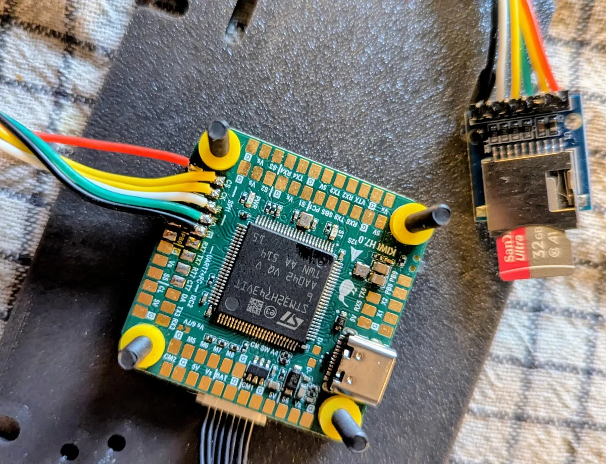
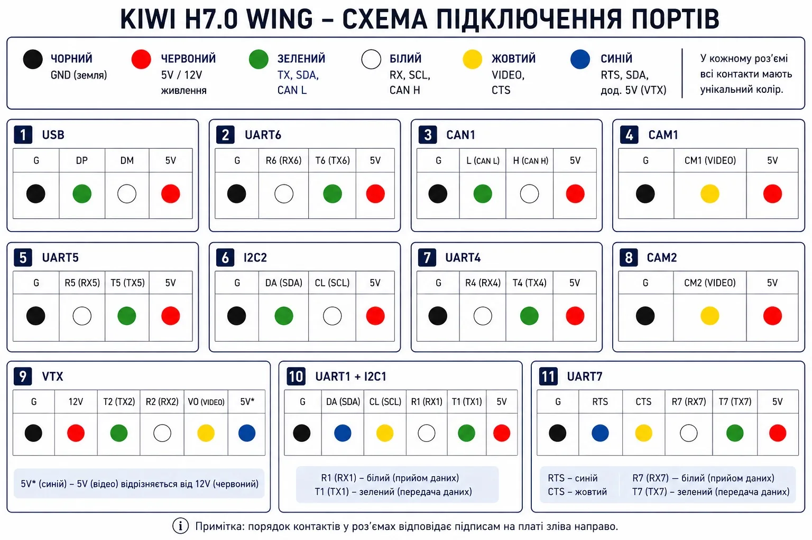

KIWI Flight Systems Manual
Welcome to the official documentation for KIWI Flight Systems. Engineered with precision. Inspired by a bird that never gave up.
Inside, you’ll find hardware specifications, pinouts, setup procedures, firmware integration guides, and system-level configuration references.
Whether you’re building from scratch, integrating custom sensors, or tuning for flight performance, this documentation is designed to support your development process from start to finish.
For feedback, corrections, or suggestions, please contact us at support@kaponga.nz
Welcome
UAV Electronics
Sensors
Flight Controllers
- Flight Controller - KIWI F405 12S
- Flight Controller - KIWI H743 12S
- Flight Controller - KIWI H743-Wing
Flight Controllers (Obsolete)
Reference
Kiwi Ground Station Kit

Firmware
| Firmware | Version | Updated | Download |
|---|---|---|---|
| ArduPilot Antenna Tracker (F405-12S) | 4.6.3-dev (5436f451) | 2026-05-20 | KiwiF405-12S-Tracker.zip |
| ArduPilot VRX Control (F103) | 4.6.3-dev (5436f451) | 2026-05-01 | KiwiF103-VRX.zip |
Previous versions
No previous versions archived yet.
Призначення
Комплект наземної станції керування FPV дроном призначений для забезпечення безпеки операторів дронів.
Комплект є основою для побудови інфраструктури наземної станції.
Склад
Комплект складається з двох основних плат:
- Ground Board (плата оператора) — 1 шт
- Antenna Board (плата щогли) — 1 шт
- JR Board (адаптер для підключення до пульта RC)
- Технічна документація — 1 шт
- Кабель Cat5e або Cat6 не входить до комплекту
Плата оператора розміщується у бліндажі або в пункті керування дронами.
Плата щогли встановлюється поблизу антени.
З’єднання між ними здійснюється екранованим кабелем “вита пара” довжиною до 300 м.
Функції
- Перетворення керуючого сигналу S.Port → UART і назад.
- Передача аналогового відео CVBS з VRX до бліндажу.
- Підсилення відеосигналу та його перетворення в цифровий потік.
- Живлення передавального модуля та VRX до 26В.
Переваги Kiwi Ground Station Kit
- Надійна передача до 600 м без ретрансляторів.
- Один кабель передає живлення, відео, та керування.
- Можливість живлення щогли локально або по кабелю.
- Вбудовані DC-DC стабілізатори 5V, 9V, 12V на щоглі.
- 4 відеовиходи без затримки.
- Підтримка UART / CRSF.
- Мінімальна кількість з’єднань.
- Робота в діапазоні температур -20°C до +60°C.
Поширені сценарії використання
- Мобільні наземні станції для FPV-дронів
- Розвідувальні комплекси з щоглою до 10 м
- Модернізація старих систем зв’язку
- Системи спостереження у складних умовах
Технічні характеристики
| Параметр | Значення |
|---|---|
| З’єднання між платами | Екранована вита пара (T568B) |
| Максимальна довжина кабелю | до 300 м |
| Живлення по кабелю | до 150 м без підвищення |
| Робоча напруга живлення | 3S–12S (12–50 В) |
| Передача даних | UART / CRSF |
| Передача відео | CVBS (аналог) |
| Відеовиходи | 4 на Ground Board |
| Робоча температура | -20°C … +60°C |
| Стабілізатори на щоглі | 5V, 9V, 12V (DC-DC) |
Схема підключення
Ground Board:
- Video1 → FPV окуляри
- Video2 → Монітор
- Video3 → DVR
- Video4 → USB відео стрім (запис/трансляція)
- UART → Пульт або ПК
Antenna Board:
- TX (наприклад, ELRS TX)
- VRX (аналоговий приймач)
Зʼєднання:
Ground Board ↔ Antenna Board через екранований кабель Cat5e/Cat6 до 300 м
Живлення та втрати напруги
Стабілізація на щоглі
На платі Antenna Board встановлені DC-DC перетворювачі:
- 5V — для VRX
- 9V — для спеціальних пристроїв
- 12V — для передавача
Втрати на довгих кабелях (1А навантаження)
| Довжина | Втрати (6S) | Втрати (12S) | Напруга на щоглі (6S / 12S) |
|---|---|---|---|
| 100 м | ~3.6 В | ~3.6 В | 21.6 В / 46.8 В |
| 200 м | ~7.2 В | ~7.2 В | 18.0 В / 43.2 В |
| 300 м | ~10.8 В | ~10.8 В | 14.4 В / 39.6 В |
Інструкція з експлуатації
- Підключіть окуляри, монітор, DVR та USB відео стрім до Ground Board.
- Підключіть пульт або ПК через UART.
- Підключіть живлення 6S або 12S.
- З’єднайте Ground ↔ Antenna через кабель.
- Підключіть VRX та TX до Antenna Board.
- Увімкніть систему.
Рекомендації щодо прокладання і маскування кабелю
- Прокладати вздовж укриттів (дерева, рельєф, стіни).
- Уникати відкритих ділянок.
- Маскувати або фарбувати кабель.
- Фіксувати до землі або прокладати у кожусі.
- Біля щогли залишати запас.
- Перевіряти видимість з дронів.
KIWI Antenna Tracker
Antenna tracking module for the KIWI Ground Station Kit. Receives MAVLink telemetry from the UAV and automatically points the antenna toward the aircraft. Based on the KiwiF405-12S flight controller running ArduPilot AntennaTracker firmware.
Features
- Automatic antenna tracking — receives GPS coordinates from the UAV via MAVLink and drives a yaw servo to keep the antenna pointed
- Precision encoder — high-resolution heading sensor for accurate yaw position feedback
- GPS — onboard GPS for tracker’s own position reference
- TBS Fusion VRX control — built-in serial integration for remote frequency control, RSSI monitoring, and band scanning
- Single-servo yaw — continuous rotation servo on output 1
- Plug-and-play — pre-configured defaults, connects directly to the Ground Station Kit
Connections
| Port | Function | Default Protocol |
|---|---|---|
| USB | GCS / Configuration | MAVLink2 |
| SERIAL1 | RC Input | SBUS/CRSF |
| SERIAL2 | MAVLink Telemetry | MAVLink2 (460800) |
| SERIAL3 | GPS | GPS (115200) |
| SERIAL4 | TBS Fusion VRX | VRX Serial (115200, half-duplex) |
| SERIAL5 | MAVLink2 GCS (RS422) | MAVLink2 |
| PWM1 | Yaw Servo | Continuous rotation |
Modes
| Mode | Description |
|---|---|
| MANUAL (0) | Direct servo control from RC |
| STOP (1) | Hold current position |
| SCAN (2) | Sweep back and forth searching for vehicle |
| AUTO (10) | Track vehicle automatically using MAVLink GPS |
Default startup mode is MANUAL.
Video Receiver Control
The tracker supports remote control of 5.8 GHz video receivers over SERIAL4. Two receivers are currently supported:
| VRX | VRX_ENABLE | Frequency Control | RSSI | Band Scan |
|---|---|---|---|---|
| TBS Fusion | 2 | Yes | Yes (dual RX) | Yes |
| SteadyView X | 3 | Yes | No | No |
TBS Fusion VRX Integration
The tracker has built-in support for controlling a TBS Fusion 5.8 GHz video receiver over a single-wire UART connection (SERIAL4). No CAN bus or additional boards required.
Wiring
One wire from TBS Fusion UART TX/RX to the tracker’s SERIAL4 pad. Half-duplex is pre-configured (SERIAL4_OPTIONS=4). Power the Fusion separately — only the data wire is needed.
Features
Real-time RSSI monitoring — dual-receiver signal strength (Receiver A and B) and current frequency are polled at 2 Hz and streamed to GCS as MAVLink NAMED_VALUE_FLOAT messages:
| Message | Description |
|---|---|
VRXF | Current frequency (MHz) |
VRXA | RSSI Receiver A (0.0–1.0) |
VRXB | RSSI Receiver B (0.0–1.0) |
Remote frequency control — change the VRX operating frequency from GCS by setting the VRX_FREQ parameter (in MHz, e.g. 5800). The tracker confirms the change and reports back via GCS status message.
Frequency range scan — trigger a full-band scan from GCS to find active video transmitters. Scan results (RSSI per frequency) are delivered as a binary MAVLink TUNNEL message (payload_type 60100) for GCS-side visualization.
VRX Parameters
| Parameter | Default | Description |
|---|---|---|
| VRX_ENABLE | 2 | 0=Off, 2=TBS Fusion, 3=SteadyView X |
| VRX_FREQ | 5800 | Operating frequency (MHz) |
| VRX_ADDR | 1 | TBS Fusion serial address |
Scan Parameters
| Parameter | Default | Description |
|---|---|---|
| VRX_SCAN | 0 | Set to 1 to start scan, auto-resets to 0 |
| VRX_SCANLO | 5200 | Scan start frequency (MHz) |
| VRX_SCANHI | 6000 | Scan stop frequency (MHz) |
| VRX_SCANST | 10 | Scan step (MHz) |
| VRX_SCANRX | 0 | Scan receiver (0=A, 1=B) |
Scan Results Format
Scan results arrive as a TUNNEL message with payload_type 60100. Binary payload:
| Field | Type | Description |
|---|---|---|
| start_freq | u16 LE | Start frequency (MHz) |
| step | u8 | Step size (MHz) |
| count | u8 | Number of entries |
| rx | u8 | Receiver (0=A, 1=B) |
| rssi[] | u8[] | RSSI value per frequency step |
SteadyView X VRX Integration
Remote frequency control for the ImmersionRC SteadyView X receiver over SERIAL4. Set VRX_ENABLE=3.
Wiring
Same as TBS Fusion — single wire from SteadyView X UART to SERIAL4 pad, half-duplex.
Features
Remote frequency control — change the VRX channel from GCS by setting the VRX_FREQ parameter (in MHz). RSSI monitoring and band scanning are not available on this receiver.
Parameters
| Parameter | Default | Description |
|---|---|---|
| VRX_ENABLE | 3 | SteadyView X serial backend |
| VRX_FREQ | 5800 | Operating frequency (MHz) |
Firmware
ArduPilot AntennaTracker firmware for KiwiF405-12S-Tracker. Flash via Mission Planner or apj upload over USB.
Drobodrone: Плата для керування піротехнічними системами

Опис
Drobodrone — це універсальна та безпечна плата для керування піротехнічними навантаженнями (парашути, феєрверки, маркери тощо), призначена для інтеграції у складі FPV, UAV та інших безпілотних систем. Підтримує до 4 незалежних каналів підриву з високим рівнем безпеки.
Плата підтримує багаторазове використання і може бути повністю перепрограмована для кастомних сценаріїв.
Основні функції
-
4 незалежні канали підриву
Призначені для запуску різних піротехнічних систем. Кожен канал має апаратний ключ для запобігання хибному спрацюванню. -
Інтерфейси керування:
- PWM IN x2:
- ARM: активує систему (захист знято)
- FIRE: активує підрив (при активному ARM)
- PWM активується при ширині імпульсу 1800–2000us
- UART (SmartESAD):
- Для передачі телеметрії, контролю статусу та розширеного керування
- PWM IN x2:
-
Аудіо сигналізація:
Вбудований динамік інформує про поточний статус (наприклад: озброєно, відмова, успішне спрацювання). -
Світлова сигналізація:
Три яскраві LED інформують про стан системи: Ready / Armed / Fired / Error -
Механічна чека (запобіжник):
Фізичне роз’єднання для запобігання спрацювання під час транспортування чи підготовки. -
Інтерфейс живлення:
- Живлення від 5V
- Спрацювання елементів від 20V
- Захист від перенапруги, короткого замикання
Безпекові елементи
Система побудована за принципом багаторівневого захисту:
- Механічний вимикач-запобіжник — фізично розриває ланцюг.
- PWM-сигнал типу ARM — не дозволяє спрацювання без команди.
- Таймер самозахисту — автоматичне вимкнення при відсутності FIRE протягом заданого часу.
- Апаратні ключі — унеможливлюють коротке замикання або хибне спрацювання.
- Світлова та звукова індикація — для візуального та звукового контролю статусу.
Сумісність з автопілотами
Плата легко інтегрується з будь-яким автопілотом, який має PWM-виходи або UART-порти:
| Платформа | Метод інтеграції |
|---|---|
| ArduPilot | SERVOx_FUNCTION = 94/95, 51-66 |
| Betaflight | RESOURCE + SERVO конфігурація |
| iNAV | Servo Mixer + Modes |
| INDI/Custom | PWM або UART SmartESAD |
PWM-сигнал може бути поданий з пульта, автопілота або окремого модуля запуску.
Роз’єми та підключення
- Pyro Out x4: спеціальні піротехнічні конектори
- PWM IN x2: пади для пайки
- UART: пади для пайки
- 5V In: пади для живлення
- GND, Status LED, Speaker: окремі виходи
Плати мають великі, зручні контактні майданчики, які легко інтегрувати навіть у щільну проводку.
Кастомізація
Плата підтримує:
- Перепрошивку MCU через стандартний bootloader
- Зміну логіки ARM/FIRE
- Зміну таймерів, режимів індикації
- Підтримку альтернативних протоколів (за потреби)
Інтеграція: Швидкий старт
- Підключіть 5V живлення та землю
- Підключіть PWM ARM та PWM FIRE від автопілота
- Підключіть піротехнічні канали
- Встановіть механічну чеку
- На землі подайте ARM > FIRE у потрібний момент
- Перевірте LED та аудіо сигналізацію
- Опціонально підключіть UART до Companion Computer або логера
Примітка
Перед польотом завжди перевіряйте стан чека, сигналів, підключення піроканалів та акумулятора. Не залишайте плату в режимі ARM без нагляду.
Індикатори станів. Керування
Комбінація помаранчевого 🟠 та зеленого діодів 🟢 – індикатор поточного стану плати.
Червоний діод 🔴 сигналізує про помилку, яку має усунути оператор.
Помилки можливі в будʼякому зі станів плати. Щоб плата могла перейти в наступний стан, спершу треба усунути всі помилки.
- 🔴🔴🔴🔴🔴🔴 (постійно світиться) – плата не отримує валідний PWM ARM чи PWM ARM сигнал, можливо проблема пайки зʼєднання з польотним контроллером.
- 🔴🔴⚪️⚪️🔴🔴 (повільно блимає, 1 раз на секунду, 1гц) – треба відтиснути PWM ARM.
- 🔴⚪️🔴⚪️🔴⚪️ (швидко блимає, 3 рази на секунду, 3гц) – треба відтиснути PWM FIRE.
PWM: 0 ≤ invalid < 900 ≤ valid=0 ≤ 1800 < valid=1 < 2000 ≤ invalid
Для початку роботи:
- плата має “бачити пульт”: отримувати валідні PWM ARM та PWM FIRE (900 < pwm ширина < 2000)
- PWM ARM має бути у положені disarm (0, false, low, відтиснуте, вимкнене, ненатиснуте)
- PWM FIRE має бути у положені nofire (0, false, low, відтиснуте, вимкнене, ненатиснуте)
- вставити запобіжник (чеку)
Стани:
(1) Безпечно. Вітання 🔔:
🔴🔴🔴🔴🔴🔴
🟠🟠🟠🟠🟠🟠
🟢🟢🟢🟢🟢🟢
Триває секунду після подачі живлення, далі автоматично переходить в (2) Очікую Запобіжник
(2) Безпечно. Очікую запобіжник:
⚪️⚪️⚪️⚪️⚪️⚪️
🟢⚪️🟢⚪️🟢⚪️
Чекає поки оператор вставить чеку, далі переходить в (3) Запобіжник
(3) Безпечно. Запобіжник:
⚪️⚪️⚪️⚪️⚪️⚪️
🟢🟢🟢🟢🟢🟢
Чекає поки оператор усуне чеку, далі переходить в (4) Таймер
(4) Безпечно. Таймер:
⚪️⚪️⚪️⚪️⚪️⚪️
🟢🟢⚪️⚪️🟢🟢
Можливо вставити чеку щоб повернутись в (3) Запобіжник
Триває 60 секунд. Дає час відійти після усунення чеки. Далі переходить в (5) Очікую Заряд
(5) Уважно. Очікую Заряд:
🟠🟠⚪️⚪️🟠🟠
Можливо вставити чеку щоб повернутись в (3) Запобіжник
Чекає на PWM ARM від оператора, далі ~секунду заряджає 🔔 і переходить в (6) Заряджено
(6) Небезпечно. Заряджено 🔔:
🟠⚪️🟠⚪️🟠⚪️
Можливо вставити чеку щоб повернутись в (3) Запобіжник
Відтисни PWM ARM щоб розрядити і повернутись в (5) Очікую Заряд
Натисни PWM FIRE щоб зробити (7) Постріл.
(7) Небезпечно. Постріл:
🔴🔴🔴🔴🔴🔴
🟠🟠🟠🟠🟠🟠
🟢🟢🟢🟢🟢🟢
Постріл триває 100ms і автоматично переходить в (5) Очікую Заряд, який одразу переходить в (6) Заряджено якщо не відтискати PWM ARM.
Задля безпеки, для наступного пострілу треба відтиснути PWM FIRE, про що нагадає помилка 🔴⚪️🔴⚪️🔴⚪️.
4 незалежні канали підриву 1234 поділені на 2 групи по 2 канали в кожній 12 34.
Постріл підриває поточну активну группу (2 канали одночасно), і готує наступну групу для наступного пострілу. I так по-колу. Тобто постріли 1 2 3 4 5 6 здетонують канали 12 34 12 34 12 34.
Тобто послідовність роботи така:
підготовка: power arm=0 fire=0 вставили_чеку вийняли_чеку 60сек
робота: arm=1 fire=1 fire=0 fire=1
додому: fire=0 arm=0
SmartESAD
Overview
SmartESAD (Electronic Safe-Arm Device protocol) — двосторонній послідовний протокол між польотним контролером і піротехнічним пристроєм, який замінює класичну пару PWM-сигналів ARM/FIRE. Замість двох односпрямованих ліній SmartESAD дає польотному контролеру повний контроль над послідовністю безпеки, а у відповідь отримує стан пристрою, залишок таймерів і телеметрію.
SmartESAD is a bidirectional serial protocol between the flight controller and pyrotechnic device, replacing the classic PWM ARM/FIRE signal pair. Instead of two one-way lines, SmartESAD gives the FC full control of the safety sequence and returns the device’s live state, remaining timer counts, and telemetry.
Ця сторінка описує протокол smartESAD v1.1 (іменування станів Cold/Timer/Safe) та прошивку KIWI Betaflight гілки 2025.12. This page covers smartESAD v1.1 and the KIWI Betaflight 2025.12 firmware line.
Переваги над PWM / Advantages over PWM
| PWM | SmartESAD |
|---|---|
| Одностороннє керування | Двосторонній зв’язок |
| Немає зворотного зв’язку про стан | Стан пристрою на OSD у реальному часі |
| 2 дроти (ARM + FIRE) | UART, 2 дроти (TX/RX) |
| Контроль цілісності відсутній | CRC-16 на кожному кадрі, відхиляє пошкоджені |
| Сплутування ARM/FIRE можливе | Кожна команда має власний 4-байтовий ASCII-код (ARM!, FIRE, COLD…) |
| Втрата сигналу — невизначена поведінка | Link-watchdog блокує постріл; опційне автоповернення у безпечний стан (safe_on_lostconnection) |
| Фіксовані інтервали | Налаштовувані таймери (timer, self-destruct, поріг удару), зберігаються у флеші пристрою |
| Тільки одна гілка спрацювання | Дубльовані канали FIRE1+FIRE2 синхронно ведуть незалежні підривники |
Архітектура безпеки / Safety architecture
SmartESAD реалізує модель з кількома незалежними рівнями захисту. Щоб підривник отримав напругу, усі перелічені умови мають бути виконані одночасно. Бажано прочитати MIL-STD-1316F для розуміння принципів.
SmartESAD implements a defence-in-depth model. All the conditions below must hold simultaneously for the initiator to receive energy.
| Гейт / Gate | Що гарантує / What it guarantees |
|---|---|
Стан машини станів = Armed | Команди надходили у правильному порядку (Timer → Safe → Arm) |
| 4-байтовий ASCII-код у кожній safety-команді | Імовірність випадкового збігу через бітовий шум ~2⁻³² на команду |
| CRC-16-CCITT по всьому кадру | Спотворені кадри відхиляються до обробки |
Версія протоколу (Ver byte) збігається | Несумісні FC отримують Fault::BadVersion до досягнення SM |
| Link-watchdog | Постріл не вмикається, якщо UART мовчав довше за watchdog-вікно |
Окремі fire_command_latched і state | Помилка пам’яті, що псує одне з двох, не призводить до пострілу |
| Дубльовані лінії FIRE1+FIRE2 | Один обірваний/закорочений драйвер не вимикає весь пристрій |
| FC-side FIRE gate | Betaflight не відправляє Fire, поки стан пристрою ≠ Armed (ешелонований захист: FC не покладається лише на те, що пристрій відхилить команду) |
Протокол додатково передбачає GPIO co-sign (IN_ARM, IN_BLAST) —
окрему фізичну лінію підтвердження. На платах KIWI підключення суто
послідовне (без GPIO), тому цей гейт опційний і залежить від конкретного
виробу.
Стани системи / System States
SmartESAD керує пристроєм через послідовність станів безпеки. Перехід між основними станами — лише вперед:
The FC drives SmartESAD through this safety state progression. Forward transitions only:
START ──Version──▶ DEACTIVATED ──Activate──▶ COLD ──Timer──▶ TIMER
▲ ▲ │ (auto, after
│ │ │ countdown)
Deactivate Cold cmd* ▼
(з будь-якого (*таймер продовжує SAFE ──Arm──▶ [CHARGE_UP] ──▶ ARMED ──Fire──▶ FIRED
стану крім Fired) цокати, правило R1) (лише плати з (термінальний
конденсатором) стан)
| Стан / State | OSD | Опис / Description |
|---|---|---|
| Start | ESAD INIT | Пристрій щойно завантажився, мовчить. Чекає на Version від FC. |
| Deactivated | ESAD CFG. | Конфігураційний / maintenance режим. Set*/Save приймаються, arm/fire відхиляються. Вихід — лише команда Activate. |
| Cold | ESAD COLD | Передпольотне очікування. Ланцюг озброєння скинуто, Arm відхиляється. Приймаються налаштування. |
| Timer | ESAD T-NN | Йде countdown. Не скасовується (правило R1): команда Cold повертає стан, але таймер цокає далі (OSD: COLD T-NNN). Автоматичний перехід у Safe при нулі. |
| Safe | ESAD SAFE / SD T-NNNN | Countdown вичерпано, self-destruct таймер запущено. Готовий приймати Arm. OSD чергує напис стану та SD-countdown з частотою 1 Гц. |
| ChargeUp | ESAD CHRG | Транзит Safe → Armed на платах з конденсатором (заряджання 1–3 с). Якщо заряд застряг — авто-повернення у Safe через ~10 с. |
| Armed | ESAD !ARM | Заряджено. Команда Fire ініціює постріл. Імпакт-детектор активний. |
| Fired | ESAD !FIR | Постріл відбувся. Термінальний стан — повернення лише через перезавантаження пристрою. |
| SafetyPin | ESAD PIN. | Зарезервовано: фізичний запобіжник вставлено. Поточні плати цей стан не повідомляють. |
Захисні таймери / Safety timers
SmartESAD веде два незалежні таймери:
| Таймер / Timer | За замовч. / Default | Призначення / Purpose |
|---|---|---|
| Timer (pre-arm countdown) | 420 с (7 хв) | Обов’язкова затримка між командою Timer і станом Safe. Не скасовується командою Cold (правило R1). |
| Self-destruct | 7200 с (2 год) | Час від Safe до автоматичного пострілу. Failure-mode-of-last-resort: пристрій, що перетнув лінію бойового зіткнення, не має лишитися у руках супротивника. |
Обидва налаштовуються через CLI (kiwi_esad set timer /
kiwi_esad set destruct_delay), зберігаються у флеш пристрою командою
kiwi_esad save і переживають перезавантаження.
Налаштування пристрою / Device persistent settings
Зберігаються у флеші пристрою (не польотного контролера) у
двосторінковому буфері з CRC-32. При пошкодженні — fallback на
заводські значення, ніколи на Armed. Змінюються через
kiwi_esad set <name> <N> + kiwi_esad save (див.
довідник команд).
Stored in the device’s flash (not the FC). On corruption the device
falls back to compiled defaults — never to Armed.
| Параметр / Setting | Діапазон / Range | За замовч. / Default | Опис / Purpose |
|---|---|---|---|
timer | 1…65535 с | 420 | Pre-arm countdown (Timer → Safe) |
destruct_delay | 2…65535 с | 7200 | Self-destruct: час від Safe до автопострілу. Має бути > timer. |
impact_threshold | 50…32767 | 120 (~15 g) | Поріг імпакт-пострілу в стані Armed (метрика |a|²×64) |
takeoff_required | 0 / 1 | 0 | Arm приймається лише після детекції зльоту акселерометром (AOP-4187 §3.1.2.d) |
safe_on_lostconnection | 0 / 1 | 0 | Автоповернення Timer/Safe/Armed → Cold після ~1 с тиші на UART |
det_check | 0 / 1 | 1 | Перевірка цілісності ланцюга підривника перед Arm (плати з det-check апаратурою) |
accel_rate | 400 / 800 / 1600 / 3300 Гц | 400 | Частота вибірки акселерометра. Застосовується після save (перезавантаження пристрою). |
Опційний імпакт-постріл працює завжди, коли пристрій у стані Armed:
акселерометр виявляє удар понад поріг і пристрій переходить
Armed → Fired без жодної команди з UART.
Швидке налаштування / Quick setup
1. Підключення / Wiring
Один UART (TX, RX, GND) від польотного контролера до ESAD:
- FC TX → ESAD RX
- FC RX → ESAD TX
- спільний GND
Швидкість фіксована: 57600 8N1, без апаратного керування потоком.
2. CLI у Betaflight
# Призначити UART для SmartESAD (приклад: UART1 = serial 0)
serial 0 1048576 57600 57600 0 57600
# Налаштування пристрою (зберігаються у флеші ESAD)
kiwi_esad deactivate
kiwi_esad set timer 420
kiwi_esad set destruct_delay 7200
kiwi_esad set impact_threshold 120
kiwi_esad set takeoff_required 0
kiwi_esad set safe_on_lostconnection 0
kiwi_esad save
kiwi_esad activate
# Налаштування польотного контролера
set kiwi_esad_poll_interval_ms = 100
set kiwi_esad_fault_threshold = 3
set kiwi_esad_activate_on_boot = 0
set kiwi_esad_activation_delay_s = 0
# Позиція OSD елементів
set kiwi_osd_esad_status_pos = 2242
set kiwi_osd_esad_debug_pos = 2498 # 2498 = bottom-left; 341 = hidden
# Перемикачі RC
aux 1 57 2 1725 2100 0 0 # ATAK on AUX3 — momentary, OR logic, no link
aux 2 58 3 1725 2100 0 0 # FIRE on AUX4 — momentary, OR logic, no link
save
Формула позиції OSD: pos = x + (y * 32) + 2048 (2048 = видимий у
профілі 1). Значення 341 ховає елемент.
Примітка про маску
serial: у прошивках гілки 2025.12FUNCTION_KIWI_ESAD = 1048576(біт 20). У збірках на базі 2026.6+ маска змінена на2097152(біт 21), а permanentId боксів зсунуто 56/57/58/62 → 57/58/59/63.
3. Betaflight Configurator
- Ports → оберіть UART і увімкніть KIWI ESAD.
- Modes → призначте KIWI ESAD ACTIVE / ATAK / FIRE на перемикачі пульта.
- OSD → розмістіть елемент ESAD Status на екрані.
Перемикачі RC / RC mode boxes
Бокси спрацьовують по фронту (edge-triggered): на кожному
rising/falling фронті прошивка один раз відправляє відповідну команду.
Між подіями FC опитує стан пристрою кожні kiwi_esad_poll_interval_ms.
Boxes are edge-triggered: each rising/falling edge emits the command once; between events the FC polls device state.
| Бокс / Box | permanentId | Фронт / Edge | Команда / Emits | Потрібний стан пристрою / Device state |
|---|---|---|---|---|
| KIWI ESAD ACTIVE | 56 | rising | Timer (TIMR) | Cold |
| KIWI ESAD ATAK | 57 | rising | Arm (ARM!) | Safe |
| KIWI ESAD ATAK | 57 | falling | Cold (COLD) | будь-який крім Deactivated |
| KIWI ESAD FIRE | 58 | rising | Fire (FIRE) | Armed (FC додатково блокує Fire, поки стан ≠ Armed) |
| KIWI ESAD CFG | 62 | rising | Deactivate (DACT) | будь-який крім Fired |
| KIWI ESAD CFG | 62 | falling | Activate (ACTV) | Deactivated |
Приклад прив’язки (FC ARM на AUX1, ESAD на AUX2/3/4, CFG на AUX5):
aux 0 0 0 1300 2100 0 0 # FC ARM on AUX1
aux 1 56 1 1725 2100 0 0 # KIWI ESAD ACTIVE on AUX2
aux 2 57 2 1725 2100 0 0 # KIWI ESAD ATAK on AUX3
aux 3 58 3 1725 2100 0 0 # KIWI ESAD FIRE on AUX4
aux 4 62 4 1725 2100 0 0 # KIWI ESAD CFG on AUX5 (ON=DACT, OFF=ACTV)
save
Формат: aux <slot> <permanentId> <auxChannel_0based> <startUs> <endUs> <modeLogic> <linkedTo>. Поріг 1725 мкс дає мертву зону вище середини
стіка.
Двоключовий інтерлок / two-key interlock: прив’яжіть FIRE так, щоб
він працював лише коли ATAK теж активний — останнє поле 57 у рядку
FIRE:
aux 3 58 3 1725 2100 0 57 # FIRE діє лише поки ATAK (57) теж HIGH
Рекомендовано для бойового спорядження. Recommended for live ordnance.
CFG-бокс (maintenance): поки утримується HIGH, FC призупиняє
автоактиваційні цикли, щоб оператор міг заливати налаштування
(kiwi_esad set …, kiwi_esad save) навіть при
kiwi_esad_activate_on_boot = 1. Автоцикли поновлюються після disarm
польотного контролера.
Налаштування польотного контролера / FC-side settings
Звичайні змінні Betaflight CLI (set <name> = <value>, потім save):
| Змінна / Setting | Діапазон / Range | За замовч. / Default | Опис / Purpose |
|---|---|---|---|
kiwi_esad_poll_interval_ms | 20…1000 | 100 | Період опитування стану пристрою (keep-alive) |
kiwi_esad_fault_threshold | 1…50 | 3 | Кількість пропущених відповідей поспіль до статусу ESAD LOST |
kiwi_esad_activate_on_boot | 0 / 1 | 0 | Автоматично відправити Timer щойно з’явився зв’язок; тримається доки пристрій не повернеться у Cold |
kiwi_esad_activation_delay_s | 0…600 | 0 | Вікно скасування на боці FC: після ARM польотника — countdown на OSD, потім авто-Timer. 0 = вимкнено |
kiwi_esad_expected_identifier | рядок ≤ 4 | “” | Перевірка ідентифікатора пристрою для boot-latch |
kiwi_osd_esad_status_pos | — | — | Позиція основного OSD елемента стану |
kiwi_osd_esad_debug_pos | — | 341 (сховано) | Позиція діагностичного OSD рядка (телеметрія: det-check, напруги, peak-metric) |
Таблиця автоактивації / Auto-activation matrix
activate_on_boot | activation_delay_s | Поведінка / Behaviour |
|---|---|---|
| 0 | 0 | Повністю ручне керування (бокси / CLI). Найсуворіший контроль — за замовчуванням. |
| 0 | >0 | ARM польотника → countdown на OSD → авто-Timer. Disarm → Cold. |
| 1 | 0 | Фіксується з увімкнення: щойно зв’язок живий, FC відправляє Timer і далі не втручається. |
| 1 | >0 | Обидва шляхи працюють одночасно. |
Довідник CLI команд / CLI command reference
Прошивка KIWI має вбудовану CLI команду kiwi_esad для керування та
діагностики пристрою прямо з CLI Betaflight (Configurator → CLI, або
термінал на USB-порту, 115200, символ # вмикає CLI).
The KIWI firmware ships a kiwi_esad CLI command for driving and
debugging the device straight from the Betaflight CLI.
Команди стану / Status commands
| Команда / Command | Дія / Effect |
|---|---|
kiwi_esad або kiwi_esad status | Повний рантайм-статус: стан, залишок таймера, зв’язок, остання відмова, версія прошивки пристрою, фази автоактивації, телеметрія (det_check, напруги, peak-metric). |
kiwi_esad settings | Живий запит GetSettings до пристрою (~100 мс). Друкує блок готових kiwi_esad set … рядків — можна скопіювати з однієї плати і вставити на іншу. |
Приклад виводу kiwi_esad status:
# kiwi_esad status
state: COLD
remaining_secs: 420
status_byte: 0x01
det_check_ok: yes
pin_present: no
vcap_mv: 0
vbat_mv: 12600
peak_metric: 64
link_alive: yes
misses: 0
last_fault: code=0x00 subcode=0x00
firmware_version: 0x01010000
reset_cause: 0x00
auto_phase: IDLE
countdown_remaining_ms: 0
boot_phase: DISABLED
cfg_mode: off
Поля / Fields:
| Поле / Field | Значення / Meaning |
|---|---|
state | Поточний стан пристрою: UNKNOWN, START, COLD, TIMER, SAFE, CHARGE_UP, ARMED, FIRED, FAULT, DEACTIVATED, SAFETY_PIN |
remaining_secs | Залишок активного countdown (pre-arm або self-destruct, залежно від стану) |
configured_timer_s | (лише у DEACTIVATED) значення таймера, з яким Activate продовжить роботу |
det_check_ok | Ланцюг підривника цілий (плати з det-check) |
vcap_mv / vbat_mv | Напруга конденсатора пострілу та напруга батареї, мВ. 0 — на платі немає відповідного вимірювання |
peak_metric | Пікова метрика прискорення |a|²×64 від останнього Arm (~64 = 1 g спокою; обмежується ±16 g) |
link_alive / misses | Стан UART-зв’язку і лічильник пропущених відповідей |
last_fault | Остання зафіксована відмова. Код зберігається для діагностики і не відображає поточний стан — розшифровка у довіднику кодів відмов |
firmware_version | Версія прошивки пристрою (u32; 0x01010000 = v1.1.0.0) |
auto_phase / boot_phase / cfg_mode | Стан циклів автоактивації та CFG-режиму на боці польотного контролера |
Команди керування / Action commands
Кожна команда чекає відповідь пристрою до 500 мс і друкує результат:
-> OK state: TIMER fault: 0x00/0x00
| Результат / Result | Значення / Meaning |
|---|---|
OK | Пристрій відповів звичайним кадром стану |
FAULT | Пристрій відповів StateFault — причина у fault: 0xCC/0xSS |
TIMEOUT | Запит відправлено, відповіді немає протягом 500 мс |
BUSY | Не вдалося відправити (порт зайнятий попереднім запитом) |
| Команда / Command | Wire cmd | Потрібний стан / Required state | Дія / Effect |
|---|---|---|---|
kiwi_esad version | Version | будь-який | Хендшейк. Перший Version після ввімкнення переводить пристрій Start → Deactivated. |
kiwi_esad activate | Activate (ACTV) | Deactivated | Вихід з maintenance у Cold. |
kiwi_esad deactivate | Deactivate (DACT) | будь-який крім Fired | Вхід у maintenance (CFG). Скидає countdown до налаштованих значень і знімає всі фіксатори пострілу. |
kiwi_esad timer | Timer (TIMR) | Cold | Старт pre-arm countdown. |
kiwi_esad cold | Cold (COLD) | будь-який крім Deactivated | Повернення у Cold. Запущений countdown продовжує цокати (правило R1). З Deactivated відхиляється — використовуйте activate. |
kiwi_esad safe | — | — | Псевдонім cold (ті самі байти на дроті). |
kiwi_esad disarm | — | — | Псевдонім cold. |
kiwi_esad arm | Arm (ARM!) | Safe | Озброєння. На платах з конденсатором — через транзит ChargeUp. |
kiwi_esad fire | Fire (FIRE) | Armed | Постріл. Термінальний. |
Команди налаштувань / Settings commands
set пише значення у RAM пристрою; зберігає лише kiwi_esad save.
Пристрій приймає set/save у станах Cold або Deactivated
(save — Safe або Deactivated).
set writes device RAM; only kiwi_esad save persists. Accepted in
Cold / Deactivated.
| Команда / Command | Діапазон / Range | Дія / Effect |
|---|---|---|
kiwi_esad set timer <N> | 1…65535 с | Pre-arm countdown |
kiwi_esad set destruct_delay <N> | 2…65535 с | Self-destruct таймер |
kiwi_esad set impact_threshold <N> | 50…32767 | Поріг імпакт-пострілу |
kiwi_esad set takeoff_required <0|1> | 0/1 | Arm лише після детекції зльоту |
kiwi_esad set safe_on_lostconnection <0|1> | 0/1 | Автоповернення у Cold при втраті зв’язку |
kiwi_esad set det_check <0|1> | 0/1 | Перевірка цілісності ланцюга підривника |
kiwi_esad set accel_rate <N> | 400, 800, 1600, 3300 | Частота акселерометра (застосовується після save) |
kiwi_esad save | — | Запис у флеш пристрою. Пристрій м’яко перезавантажується (~50 мс): -> OK saved, device rebooting (~50 ms) |
Якщо set/save відхилено з fault: 0x06/0x01 (WrongState), CLI
підкаже правильний шлях:
tip: Set/Save accept state in {Safe, Deactivated}. Use
`kiwi_esad deactivate` to enter CFG, push, then `kiwi_esad activate`.
Приклад повної сесії / Full bench session
# kiwi_esad status
state: COLD remaining_secs: 7
link_alive: yes misses: 0
...
# kiwi_esad timer
-> OK state: TIMER fault: 0x00/0x00
# kiwi_esad status
state: SAFE remaining_secs: 7189
# kiwi_esad arm
-> OK state: ARMED fault: 0x00/0x00
# kiwi_esad fire
-> OK state: FIRED fault: 0x00/0x00
Довідник кодів відмов / Fault code reference
last_fault: code=0xCC subcode=0xSS у виводі kiwi_esad status та
fault: 0xCC/0xSS після команд. Код не скидається автоматично —
тримає останню причину відмови, а не поточний стан.
Top-level codes:
| Код / Code | Назва / Name | Значення / Meaning |
|---|---|---|
0x00 | (none) | Відмов немає |
0x01 | BadCrc | CRC-16 кадру не зійшовся |
0x02 | BadVersion | Байт версії кадру ≠ 0x01 — несумісна прошивка FC або пристрою |
0x03 | UnknownCommand | Невідомий байт команди (напр., нова команда до старої прошивки пристрою) |
0x04 | BadMagic | Невірний 4-байтовий ASCII-код команди (напр., FC зі старим протоколом v1.0) |
0x05 | BadLength | Довжина payload не відповідає специфікації команди |
0x06 | PreconditionFailed | Умови не виконані — справжня причина у subcode, див. нижче |
0x07 | InternalError | Внутрішня помилка кодека / машини станів пристрою |
Subcodes для PreconditionFailed (0x06):
| Subcode | Назва / Name | Значення / Meaning |
|---|---|---|
0x01 | WrongState | Команда не дозволена у поточному стані (напр., arm з Cold) |
0x02 | InArmLow | Arm відхилено — GPIO IN_ARM низький (плати з co-sign) |
0x03 | InBlastLow | Fire відхилено — GPIO IN_BLAST низький (плати з co-sign) |
0x04 | TimerRunning | Операція заблокована — pre-arm countdown ще цокає |
0x05 | SelfDestructRunning | Операція заблокована — self-destruct countdown цокає |
0x06 | OutOfBounds | Значення set поза діапазоном, або порушено інваріант destruct_delay > timer |
0x07 | PreLaunchNotDetected | Arm відхилено — takeoff_required=1, а зльоту ще не зафіксовано. OSD: ESAD NOLT |
0x08 | DetCheckOpen | Arm відхилено — ланцюг підривника розімкнутий. OSD: ESAD NODT |
OSD-індикація / OSD display
Основний елемент (kiwi_osd_esad_status_pos), 9 символів:
| Умова / Condition | Текст / Text |
|---|---|
| Зв’язку ще не було | ESAD....? (анімований ?) |
Зв’язок був і зник (misses ≥ fault_threshold) | ESAD LOST |
| Хендшейк | ESAD INIT |
| Cold, без countdown | ESAD COLD |
| Cold, countdown ще цокає (R1) | COLD T-NNN |
| Timer | ESAD T-NN / ESD T-NNN / ESDT-NNNN (префікс скорочується зі зростанням цифр) |
| Safe | ESAD SAFE ↔ SD T-NNNN чергуються з частотою 1 Гц. Чергування — сигнал безпеки: оператор кожні пів секунди бачить і стан, і SD-countdown до автономного пострілу. |
| ChargeUp | ESAD CHRG ↔ SD T-NNNN (1 Гц) |
| Armed | ESAD !ARM ↔ SD T-NNNN (1 Гц, обидві половини без блимання) |
| Fired | ESAD !FIR (блимає 4 Гц) |
| Fault | ESAD F-NN (hex-код відмови) |
| Deactivated | ESAD CFG. |
| SafetyPin (зарезервовано) | ESAD PIN. |
Останній Arm відхилено DetCheckOpen | ESAD NODT (блимає 4 Гц; тримається до успішного Arm або скидання хендшейком) |
Останній Arm відхилено PreLaunchNotDetected | ESAD NOLT (блимає 4 Гц; та сама логіка) |
| FC-side activation countdown | ESAD T-NN (перекриває стан пристрою) |
Діагностичний рядок (kiwi_osd_esad_debug_pos, за замовчуванням
схований) показує телеметрію: ED+ V24.1 B12.4 P- M64 — det-check,
напруга конденсатора, напруга батареї, шунт-пін, peak-metric
акселерометра. Для стендів і демонстрацій; у польових збірках ховайте
(341).
Поведінка при втраті зв’язку / Failsafe & link-loss
- Disarm польотника повертає пристрій у безпечний стан (якщо boot-latch не активний). Запущені countdown при цьому не скасовуються — правило R1.
- FC-side watchdog: misses ≥
kiwi_esad_fault_threshold→ OSDESAD LOST, стан UNKNOWN. Опитування продовжується; перша успішна відповідь відновлює все. - Device-side
safe_on_lostconnection: коли увімкнено, пристрій сам переводитьTimer/Safe/Armed→Coldпісля ~1 с тиші від FC. - Відкат стану (пристрій перезавантажився, стан опустився нижче попереднього): FC скидає фіксатори автоактивації — оператор мусить явно повторити послідовність озброєння.
- FC ніколи не стріляє сам. Прошивка лише передає намір оператора; фінальний гейт пострілу — власна логіка пристрою.
Діагностика / Troubleshooting
Усе через CLI Betaflight (Configurator → CLI). Перший крок завжди —
kiwi_esad status.
| Симптом / Symptom | Причина і рішення / Fix |
|---|---|
OSD: ESAD....? назавжди, kiwi_esad status показує link_alive: no, state: UNKNOWN | TX/RX переплутано — поміняйте місцями. Перевірте спільний GND і що обрано правильний UART у serial. |
OSD: ESAD LOST через кілька секунд після старту | Зв’язок був і зник: кабель, живлення пристрою або його зависання. kiwi_esad status → дивіться misses. Пересадіть роз’єм. |
kiwi_esad: command not found | Прошивка без підтримки ESAD CLI — оновіться на актуальну KIWI прошивку. |
set kiwi_esad_* = … → unknown setting | Прошивка зібрана без USE_KIWI_ESAD — це не KIWI збірка. |
set kiwi_esad_arm_delay / kiwi_esad_sd_delay не існують | Застаріла інструкція: ці параметри переїхали у флеш пристрою. Використовуйте kiwi_esad set timer … / kiwi_esad set destruct_delay … + kiwi_esad save. |
-> TIMEOUT після кожної команди | Пристрій не відповідає: перевірте живлення ESAD і проводку; kiwi_esad status → link_alive. |
-> BUSY | Попередній запит ще виконується — зачекайте пів секунди і повторіть. |
-> FAULT … 0x04/… (BadMagic) | Несумісні версії протоколу FC ↔ пристрій (напр., прошивка пристрою давніша за v1.1). Оновіть прошивку пристрою. |
-> FAULT … 0x06/0x01 (WrongState) після arm | Пристрій ще у TIMER — дочекайтеся стану SAFE (kiwi_esad status) і повторіть. |
-> FAULT … 0x06/0x01 після set/save | Пристрій не у Cold/Deactivated. Шлях: kiwi_esad deactivate → set … → save → activate. |
-> FAULT … 0x06/0x06 (OutOfBounds) | Значення поза діапазоном, або destruct_delay ≤ timer. Спершу збільште destruct_delay. |
-> FAULT … 0x06/0x08, OSD ESAD NODT | Ланцюг підривника розімкнутий — перевірте лінії і контакт. Для стенду без підривника: kiwi_esad deactivate → kiwi_esad set det_check 0 → save → activate. |
OSD ESAD NOLT, -> FAULT … 0x06/0x07 | takeoff_required=1, а зльоту не було. Для стенду: kiwi_esad set takeoff_required 0 (у Cold/Deactivated) + save. |
OSD ESAD CHRG висить > 5 с | Заряд конденсатора застряг (низька батарея, несправність). Пристрій сам повернеться у SAFE через ~10 с; повторіть arm. |
OSD ESAD PIN. | Зарезервований стан фізичного запобіжника. Поточні плати його не повідомляють — якщо бачите, вважайте пристрій механічно заблокованим і огляньте апаратуру. |
| Бокс ACTIVE не діє | Бокс не прив’язаний — перевірте aux (permanentId 56) і вкладку Modes. |
Команди боксів ігноруються, OSD ESAD CFG. | Пристрій у Deactivated (CFG-бокс тримається HIGH?). Опустіть CFG-бокс або kiwi_esad activate. |
kiwi_esad settings → GetSettings timed out | Те саме, що TIMEOUT: немає зв’язку з пристроєм. |
| Налаштування «не збереглися» після перезавантаження | Забули kiwi_esad save — set пише лише у RAM пристрою. |
Прослуховування шини / Sniffing the wire
Для глибокої діагностики можна дивитися сирі кадри:
-
Зовнішній USB-TTL адаптер паралельно на лінію TX або RX (спільний GND) — FC продовжує працювати з ESAD, ви бачите трафік.
-
serialpassthrough: звільніть порт і прокиньте його на USB:serial 0 0 57600 57600 0 57600 # зняти FUNCTION_KIWI_ESAD з UART1 save # після перезавантаження: serialpassthrough usart1 57600Зверніть увагу:
serialpassthroughприймає ім’я порту (usart1,usart2…), а не числовий індекс. Поверніть функцію назад (serial 0 1048576 …+save) після діагностики.
Протокол / Protocol summary
Нижче — стислий підсумок. Повна специфікація інтерфейсу: smartESAD v1.2 Protocol Specification. Full interface specification linked above.
| Параметр / Property | Значення / Value |
|---|---|
| Транспорт / Transport | UART, 57600 8N1, без керування потоком |
| Кадр / Frame | AA 55 VER CMD SEQ LEN DATA[…] CRC_hi CRC_lo |
| Цілісність / Integrity | CRC-16-CCITT-FALSE (poly 0x1021, init 0xFFFF); тест-вектор crc16("123456789") == 0x29B1 |
| Replay-захист / Replay protection | 8-бітний seq nonce, відповідь повертає (seq+1) mod 256 |
| Каденс / Cadence | FC опитує кожні poll_interval_ms (за замовч. 100 мс = 10 Гц); пристрій відповідає за ~10 мс |
| Boot-handshake | Пристрій після ввімкнення мовчить; FC надсилає Version (Start → Deactivated), потім Activate (→ Cold) |
| Безпекові команди / Safety commands | Кожна має власний 4-байтовий ASCII-код: COLD, TIMR, ARM!, FIRE, DACT, ACTV, SAV! |
| Config-команди / Config commands | SetTimer, SetSelfDestructDelay, SetImpactThreshold, SetTakeoffRequired, SetSafeOnLostLink, SetDetCheckEnabled, SetAccelRate, SaveSettings, GetSettings |
| Версія пристрою / Device firmware | StateStart повертає FW_VERSION (u32 BE; v1.1.0.0 = 0x01010000) |
Сумісні плати / Compatible boards
SmartESAD вбудовано у прошивку KIWI Betaflight для всіх плат KIWI:
Стандарти / Standards
SmartESAD спроектовано на принципах:
- MIL-STD-1316F — Fuze Design Safety Criteria (DoD)
- STANAG 4560 ed 3 — EED Assessment & Test Methods (NATO)
- NAWCWD TP 8504 — Design Methodology for Safe and Arm Devices (US Navy)
- AOP-4187 Ed A v1 — Fuzing System Safety Design (NATO)
Це не сертифікація; зазначені стандарти — джерело правил дизайну.
Цільовий ризик передчасного озброєння — менше 1 на 1 000 000 пристроїв
(MIL-STD-1316F §4.3).
smartESAD v1.2 — Serial Control Protocol
Description of the smartESAD serial control interface between a flight controller / host integrator and a smartESAD-compatible Electronic Safe-Arm Device (ESAD) for one-way-attack UAV payloads. It covers the electrical interface, frame format, message set, safety state model, timing, telemetry, and status indication.
This document revision is v1.2; it describes wire protocol
version 1 (frame byte 2 Ver = 0x01). “v1.2” is the interface-control
revision, not the on-wire version field — an FC still sends and expects
Ver = 0x01.
Values a device vendor assigns per program build are marked [vendor]; behaviour the base interface leaves to the integration profile is marked [profile] and summarised in §13. Nothing here identifies a specific manufacturer, board, or part number.
1. Overview
The ESAD is a command server: it transmits only in response to a received command frame and, with a single documented exception (§4.2), it never sends unsolicited traffic. A host reads the device’s status and identity, brings it through a mandatory arming-delay countdown, and drives it through a safety state machine gated by serial commands.
UART serial (smartESAD v1)
Flight Controller ─────────────────────► smartESAD ── FIRE1 / FIRE2 ──► initiator
/ Host Integrator Device ── LED(s) / buzzer ──► operator
DC Power ──────────── V+ / Return ─────►
The device is the last line of defence between an operator mistake or wiring fault and a premature detonation. Two independent safety features gate the terminal action: the ordered command sequence and a mandatory non-cancellable arming-delay countdown. A forged or corrupted serial command alone cannot fire the warhead.
2. Physical & electrical interface
2.1 Serial link
| Parameter | Value |
|---|---|
| Electrical | UART, TTL levels [vendor] |
| Baud rate | 57,600 |
| Data / parity / stop | 8 / None / 1 |
| Flow control | None |
| Host cadence | 50 Hz (a frame every 20 ms) recommended |
| Device response | within 10 ms of a valid received frame (except after a settings commit, §3.4) |
Signal names are from the device’s perspective: Rx is driven by the host, Tx is driven by the device.
3. Frame format
Every message (command and response) uses one frame. All multi-byte fields are big-endian.
byte: 0 1 2 3 4 5 6 ........ L-3 L-2 L-1
+-----+-----+-----+-----+-----+-----+----- ... -----+-----+-----+
| AA | 55 | Ver | Cmd | Seq | Len | Data | CRC | CRC |
+-----+-----+-----+-----+-----+-----+----- ... -----+-----+-----+
MSB LSB
| Field | Size | Description |
|---|---|---|
| Sync | 2 | Fixed 0xAA 0x55. A maximum-transition bit pattern for UART clock recovery; frame uniqueness comes from Ver + CRC, not the sync bytes. |
| Ver | 1 | Protocol version. v1 = 0x01. Unknown version → Fault. |
| Cmd | 1 | Command (host→device, 0x00–0x7F) or state/reply (device→host, 0x80–0xFF). See §4. |
| Seq | 1 | 8-bit nonce chosen by the host per request. The device echoes (Seq + 1) mod 256. |
| Len | 1 | Number of Data bytes N that follow (0..=255). |
| Data | N | Message-specific payload. |
| CRC | 2 | CRC-16/CCITT-FALSE over all preceding bytes, big-endian. |
- Total frame size is
8 + Nbytes (minimum 8, maximum 263). - CRC-16/CCITT-FALSE: polynomial
0x1021, init0xFFFF, no reflection, no final XOR. Check value for ASCII"123456789"is0x29B1.
3.1 Sequence nonce
The host chooses any 8-bit value per request; the device reply carries
(Seq + 1) mod 256. The host verifies the reply nonce equals its request
nonce plus one — proving the reply is fresh and matches the request (not a
verbatim echo).
3.2 Framing & error handling
- A frame that fails CRC is reported back as a Fault (
BadCrc, §4.4) rather than silently dropped — this aids host-side diagnostics. Whether a device silently drops malformed frames instead is a profile choice. [profile] - Bad-frame conditions never change device state (§8, R6).
4. Message set
4.1 Host → device commands (Cmd 0x00–0x7F)
Read-only / housekeeping:
| Cmd | Name | Data len | Purpose |
|---|---|---|---|
0x00 | StatusPoll | 0 | current state card |
0x01 | Version | 0 | current state card + firmware version (drives boot handshake, §4.2) |
0x02 | Identifier | 0 | current state card + identity body [vendor] |
0x03 | GetCounters | 0 | current state card + event counters [profile] |
0x23 | GetSettings | 0 | current persistent-settings payload (§4.5) |
Safety state-machine commands — each carries a distinct 4-byte guard
payload [vendor] in Data; a wrong or missing guard → BadMagic
(§4.4). The guard is an integrity/anti-corruption token (false-positive
resistance ≈ 2⁻³² against bit-flip noise), not a secret — the safety
case rests on the arming-delay gate, not guard secrecy.
| Cmd | Name | Guard | Extra precondition | Effect |
|---|---|---|---|---|
0x10 | Cold | [vendor] | none | state ← Cold (countdowns keep running, §8 R1) |
0x11 | Timer | [vendor] | from Cold | state ← Timer, start arm-delay countdown |
0x12 | Safe | [vendor] | from Timer, countdown = 0 | state ← Safe, start self-destruct countdown |
0x13 | Arm | [vendor] | from Safe | state ← Armed (or ChargeUp, §8 R10) |
0x14 | Fire | [vendor] | from Armed | state ← Fired, assert FIRE1 + FIRE2 |
0x15 | Reboot | [vendor] | none | soft reset (test/debug) |
0x16 | Deactivate | [vendor] | any state ≠ Fired | state ← Deactivated; stop timers, clear fire latches, restore countdowns to configured values |
0x17 | Activate | [vendor] | from Deactivated | state ← Cold; enable the arming chain |
Configuration commands — accepted only in Cold or Deactivated; they
update RAM and reply with the current state card. Values persist across
reboot only after a SaveSettings commit (§3.4).
| Cmd | Name | Data | Range |
|---|---|---|---|
0x20 | SetTimer | u16 BE seconds | 1..=65535 |
0x21 | SetSelfDestructDelay | u16 BE seconds | (timer+1)..=65535 |
0x22 | SetImpactThreshold | u16 BE | 50..=32767 (accelerometer raw LSB) |
0x24 | SetTakeoffRequired | u8 | 0 / 1 — gate Arm on a detected launch signature |
0x25 | SaveSettings | 4 B guard [vendor] | commit RAM → flash, then soft reset (§3.4) |
0x26 | SetSafeOnLostLink | u8 | 0 / 1 — opt-in link-loss demote (§8 R9) |
0x28 | SetAccelRate | u16 BE Hz | ∈ {400, 800, 1600, 3300} nominal preset |
0x30 | SetBroadcast | u8 rate code | 0 = off, 1 = 1 Hz, 2 = 10 Hz (§4.3) |
A device may omit configuration and safety features it does not
physically support; unsupported commands reply UnknownCommand. Which
features a given unit implements is a capability profile (§12). [profile]
4.2 Boot handshake
The device is a strict server and does not announce its own boot (a one-shot boot frame would be lost while the host’s serial port is not yet open — the device boots in milliseconds, a host OS in seconds). Instead:
- Device powers up into state Start and silently opens its Rx.
- Host polls Version (
0x01) at its cadence from its own boot. - The first
Versionthe device receives returns a StateStart (0x80) card (firmware version + reset cause), immediately followed by one unsolicited Settings (0x87) frame carrying the persisted configuration. This is the only unsolicited frame, emitted exactly once per boot. - The device transitions Start → Deactivated. To enable the arming
chain the host must then send Activate (
0x17) → Cold.
Routing boot through Deactivated is deliberate: an outdated or misbehaving
host that only polls Version but never sends Activate can never
accidentally arm.
4.3 Optional periodic broadcast
| Cmd | Name | When | Data |
|---|---|---|---|
0x89 | StatusBroadcast | if SetBroadcast ≠ 0 | same body as the current state card |
Opt-in (SetBroadcast(0) = default, off). Useful for passive monitors /
flight recorders. Broadcast frames coexist with normal request/reply
traffic and are identified by their 0x89 Cmd.
5. Command payloads
5.1 Guard-word safety commands
Each safety command (0x10–0x17, and 0x25) carries a fixed 4-byte
guard payload [vendor] that must match exactly. Wrong length →
BadLength; correct length with a mismatched guard → BadMagic. Guards
are per-command distinct so a corrupted Cmd byte cannot alias one safety
action onto another.
6. Device → host state replies (Cmd 0x80–0xFF)
A device reply Cmd reflects the device’s current state, not an ack
of the received command. Sending Arm while the arm-delay is still
running therefore returns a StateTimer card with the remaining seconds,
not an error about Arm.
| Cmd | State card | Body (before telemetry tail) |
|---|---|---|
0x80 | StateStart | u32 BE firmware version, u8 reset cause |
0x81 | StateCold | u32 BE arm-delay seconds remaining (0 if not running) |
0x82 | StateTimer | u32 BE arm-delay seconds remaining |
0x83 | StateSafe | u32 BE self-destruct seconds remaining |
0x84 | StateArmed | (none) |
0x85 | StateFired | (none) |
0x86 | StateFault | u8 fault code + optional detail (§4.4) — no tail |
0x87 | Settings | persistent-settings payload (§4.5) — no tail |
0x88 | StateDeactivated | u32 BE configured arm-delay seconds |
0x8A | StateChargeUp | (none) — transit state while the firing capacitor charges (§8 R10); capacitor-equipped devices only [profile] |
0x8B | StateSafetyPin | (none) — physically safed by a hardware shunt pin; shunt-sense devices only [profile] |
6.1 Trailing telemetry tail
Every state card except StateFault (0x86) and Settings (0x87)
carries a fixed 7-byte telemetry tail after its body, so the host renders
a uniform view across device variants:
[ peak_metric: u16 BE ][ status_byte: u8 ][ vcap_mv: u16 BE ][ vbat_mv: u16 BE ]
- peak_metric — running-max acceleration metric observed since the
most recent Arm (reset to 0 on Arm and at boot). Units follow the impact
detector; saturation dominates on a hard impact, so it is
informative mainly in the marginal band.
0= no data / no accelerometer. OnStateFiredit doubles as the trigger-time acceleration. - status_byte — boolean health flags. Readers must mask to known bits; reserved bits are not guaranteed 0 in future revisions.
| Bit | Mask | Name | Meaning when 1 |
|---|---|---|---|
| 0 | 0x01 | det_check_ok | initiator-loop continuity check passed [profile] |
| 2 | 0x04 | pin_present | safety shunt pin inserted / firing path physically interrupted [profile] |
| others | — | reserved | sender writes 0 |
- vcap_mv — firing-capacitor voltage, mV.
0on devices with no firing capacitor. - vbat_mv — battery-rail voltage, mV.
0on devices without battery sense.
Which fields are live vs zero depends on the device capability profile (§12); the tail is always emitted at full size, so a host parser stays device-agnostic.
7. (reserved)
8. Safety state model
| State | Meaning | FIRE1 / FIRE2 |
|---|---|---|
| Start | power-on, pre-handshake | OFF / OFF |
| Cold | disarmed; configuration accepted here | OFF / OFF |
| Timer | arm-delay countdown running; not yet armable | OFF / OFF |
| Safe | past arm-delay; self-destruct running; armable | OFF / OFF |
| ChargeUp | firing capacitor charging (capacitor devices only) | OFF / OFF |
| Armed | fire-ready; terminal action or impact auto-fire will detonate | OFF / OFF |
| Fired | initiators energised, pins latched | ON / ON |
| Deactivated | maintenance / pre-Activate; arming chain locked out | OFF / OFF |
| SafetyPin | physically safed by shunt pin (shunt-sense devices only) | OFF / OFF |
[Start] --Version handshake--> [Deactivated] --Activate--> [Cold]
[Cold] --Timer-------------> [Timer] starts arm-delay countdown
[Timer] --auto @ countdown=0-> [Safe] starts self-destruct countdown
[Safe] --Arm---------------> [Armed] (via [ChargeUp] on capacitor devices)
[Armed] --Fire--------------> [Fired] FIRE1/FIRE2 latched ON
Transition rules (non-negotiable; MIL-STD-1316F §4.2)
- R1 — arm-delay is non-cancellable. Once started, a
Coldcommand masks the state back to Cold but does not stop or reset the countdown; re-entry to Timer cannot extend it. Same for self-destruct. Prevents an operator mistake or RF glitch from endlessly resetting the arming timer. - R2 — Arm/Fire require the ordered sequence. Arm outside Safe, or
Fire outside Armed →
PreconditionFailed. An optional launch-detect gate (SetTakeoffRequired) can additionally require a detected launch signature before Arm. - R3 — handshake routes Start → Deactivated; Activate required to arm.
A
Versionfrom Start replies StateStart and transitions to Deactivated. The host must then Activate to reach Cold. AVersionin any other non-terminal state resets the countdowns to configured values and returns to Deactivated (FC-reboot recovery). - R5 — Fire is one-way. Once Fired, the device stays Fired; fire pins are latched. Only a reboot resets it.
- R7 — impact auto-fire (Armed only). An accelerometer impact ≥ the configured threshold while Armed latches the fire path independent of link state (the terminal-impact case routinely severs the host link). Impact in non-Armed states is recorded but does not transition. [profile]
- R8 — settings changes require Cold and survive only via Save.
Set*commands update RAM and are lost on reboot unless committed bySaveSettings(§3.4). - R9 — opt-in link-loss demote (
safe_on_lost_link). When the operator has persisted this flag, a silent link for ≥ 1 s demotes {Timer, Safe, Armed} → Cold and cancels both countdowns. Default off: link-loss handling is otherwise host-driven. Note this is deliberately opt-in — the one-way-attack mission profile normally requires the device to remain committed through link loss to impact. [profile] - R10 — ChargeUp transit (capacitor devices). On devices with a firing capacitor, Arm routes Safe → ChargeUp; the device reaches Armed only after the capacitor holds fire voltage for a settle window, and reverts to Safe on a charge timeout. Self-destruct expiry on such devices also routes through ChargeUp (best-effort fire on timeout). Devices without a capacitor go Safe → Armed and (on SD) → Fired directly. [profile]
- R11 — SafetyPin (shunt-sense devices). A hardware shunt pin that shorts the initiator leads may drive a dedicated safed state (or, on some devices, act purely as a fire inhibit). All state-advancing commands are rejected while safed. [profile]
- R6 — bad frames don’t transition. Any CRC / version / command / guard / length / precondition error replies StateFault (§4.4) with no state change.
Countdowns
Two independent countdowns (MIL-STD-1316F §4.2.5 independence):
- Arm-delay — default 420 s [vendor]. Starts on the first
Timerfrom Cold; decrements in real time regardless of state; auto-advances Timer → Safe at 0. Reset only byVersionor reboot. - Self-destruct — default 7200 s [vendor]. Starts when the
arm-delay expires; decrements only while committed to arm (Armed /
Fired, and ChargeUp on capacitor devices) and pauses otherwise,
preserving remaining seconds across de-arm. On expiry the device fires
automatically (the failure-mode-of-last-resort so a crossed-over UAV is
not recoverable in enemy territory). Reset only by
Versionor reboot.
Fire-pin gate (independent of the state variable)
assert_fire = (state == Fired) AND fire_command_latched AND (link_alive OR sd_expired)
FIRE1 = FIRE2 = assert_fire
FIRE1 and FIRE2 drive two independent initiator channels asserted together; a single stuck/failed driver still leaves the surviving channel functional (MIL-STD-1316F §4.2.1 two independent safety features / §4.2.5 non-subvertibility). The fire pins are driven LOW in hardware as the first action after power-on, before any code that could panic.
9. Timing
| Parameter | Value | Effect |
|---|---|---|
| Host cadence | 20 ms (50 Hz) | recommended request interval |
| Device reply latency | ≤ 10 ms | except after a settings commit |
| Link-alive gate | ~25 ms | fire-pin gate requires a recent valid frame to assert |
| Link-loss demote (R9) | 1000 ms | opt-in state demote on silent link [profile] |
| Arm-delay | 420 s default [vendor] | Timer → Safe |
| Self-destruct | 7200 s default [vendor] | auto-fire from committed-to-arm states |
| Settings-commit silence | ~40–60 ms | the only window a device may exceed 10 ms — see §3.4 |
3.4 Persistent settings & commit sequence
A small set of operator-tunable parameters (arm-delay, self-destruct
delay, impact threshold, launch-required, safe-on-lost-link,
accelerometer rate) is held in RAM and updated by the Set* commands.
They persist across reboot only after a SaveSettings (0x25) commit,
which is Cold-only and re-validates bounds:
- Device ACKs with the StateCold card.
- Device writes flash (host Rx may be masked briefly during the erase).
- Device soft-resets.
- After boot the device is back in Start; the host’s next
Versionhandshake returns StateStart and the unsolicited Settings frame with the freshly loaded values — the end-to-end confirmation that the commit succeeded.
Host-visible silence between the ACK and the post-reboot reply is
~40–60 ms; the host must tolerate this only on SaveSettings. Every
other command replies within 10 ms.
4.4 Fault codes (in Data[0] of StateFault 0x86)
| Code | Name | Cause |
|---|---|---|
0x01 | BadCrc | CRC mismatch |
0x02 | BadVersion | Ver ≠ 0x01 |
0x03 | UnknownCommand | Cmd not in the catalog / not supported by this device |
0x04 | BadMagic | safety command with wrong / missing guard |
0x05 | BadLength | Len wrong for the command |
0x06 | PreconditionFailed | state precondition unmet |
0x07 | InternalError | self-test / peripheral error |
When 0x06, Data[1] sub-codes the failed precondition: 0x01 wrong
state, 0x02/0x03 reserved, 0x04 arm-delay still running, 0x05
self-destruct still running, 0x06 value out of bounds, 0x07 launch
not yet detected.
4.5 Settings payload (Cmd = 0x87)
10 bytes, fixed layout (same struct on the wire and in flash):
| Offset | Type | Field | Range |
|---|---|---|---|
| 0 | u16 BE | timer_s | 1..=65535 |
| 2 | u16 BE | sd_delay_s | (timer_s+1)..=65535 |
| 4 | u16 BE | impact_threshold | 50..=32767 |
| 6 | u8 | takeoff_required | 0 / 1 |
| 7 | u8 | safe_on_lost_link | 0 / 1 |
| 8 | u16 BE | accel_rate_hz | ∈ {400, 800, 1600, 3300} |
Emitted as the reply to GetSettings (0x23) (any state) and once per boot
piggybacked on the first handshake (§4.2).
10. Status indication
Devices carry one or more indicators — commonly a two-LED panel (green + red) and optionally a buzzer. A power-on lamp-test lights all indicators solid for ~1 s to prove them before the per-state pattern shows. LED patterns derive from a single 8 Hz tick base.
| State | Green | Red |
|---|---|---|
| Start / Cold | solid | off |
| Timer (arm-delay running) | 1 Hz blink | off |
| Safe (armable) | 2 Hz blink | off |
| ChargeUp | off | 4 Hz blink |
| Armed | off | 2 Hz blink |
| Fired | solid | solid |
| Fault | 1 Hz blink | 1 Hz blink |
| SafetyPin / physically safed | solid | solid |
Buzzer-equipped devices [profile] add: a boot chime (ready), a distinct impact alert, a pitch-tracking tone that rises with firing-capacitor voltage during ChargeUp, and a soft periodic “capacitor-hot” reminder while the cap holds energy. Exact tones are vendor detail [vendor]; the semantic mapping (ready / impact / charging / cap-hot) is the interface-relevant part.
11. Integration sequence
- Apply power. From your own boot, poll
Version (0x01)at ~50 Hz until a StateStart reply arrives (covers the boot race). Capture the firmware version and the one unsolicited Settings frame. - Verify. Check the
Verbyte and firmware version;Identifier (0x02)for identity;GetSettings (0x23)if you did not capture the boot Settings frame. - Activate. Send
Activate (0x17)→ Cold. (Without this, the arming chain stays locked out — by design.) - Configure (optional). In Cold,
Set*the arm-delay / self-destruct / threshold, thenSaveSettings (0x25)to persist; tolerate the ~40–60 ms reboot silence and re-handshake. - Arm the timeline.
Timer (0x11)starts the mandatory arm-delay; the device auto-advances to Safe at 0. - Arm. Send
Arm (0x13)→ Armed (via ChargeUp on capacitor devices). - Fire. Send
Fire (0x14)→ Fired. - Abort / safe.
Cold (0x10)drops the state (countdowns persist per R1);Deactivate (0x16)returns to the maintenance lock-out.
Host invariants:
- Poll continuously — status polling is the only liveness signal, and the fire-pin gate requires a recent valid frame (~25 ms).
- The arm-delay and self-destruct countdowns are not cancellable once started (R1); design the mission timeline around them.
- Loss of link does not auto-disarm by default; the device is built to
remain committed through terminal link loss. Opt into R9
(
safe_on_lost_link) only if your concept of operations wants a link-loss safe-down.
12. Capability profiles
Devices share one wire protocol but differ in physical capability. The telemetry tail and state set are single-source (absent fields sent as zero, unsupported states never entered), so a host parser stays device-agnostic. Typical capability axes [profile]:
| Capability | Meaning for the host |
|---|---|
| firing capacitor / charge control | ChargeUp state (0x8A) is used; vcap_mv is live |
| vcap monitor | vcap_mv is a real reading (else 0) |
| battery sense | vbat_mv is a real reading (else 0) |
| initiator continuity check | status bit 0 (det_check_ok) is meaningful |
| shunt-pin sense | status bit 2 (pin_present) is meaningful; SafetyPin (0x8B) may be used |
| buzzer | audio cues per §10 |
The base interface currently exposes these only out-of-band — there is no runtime capability-query command. An integrator supporting multiple device variants must know the target unit’s profile in advance. A future protocol revision may add a runtime capability descriptor. [profile]
13. Points requiring profile / vendor agreement
Behaviours the base v1.2 interface leaves to the integration profile ([profile]), collected:
- Whether malformed frames are answered with
BadCrcor silently dropped. - Exact
GetCounters (0x03)body layout. - Which optional features a unit implements (capacitor / vcap / vbat / continuity / shunt / buzzer) — the capability profile of §12.
- R7 impact-auto-fire threshold semantics and non-Armed recording.
- R9 link-loss demote timing and whether it is enabled.
- R10 ChargeUp settle/timeout values and the self-destruct-through-charge contract.
- R11 shunt-pin behaviour (dedicated safed state vs. fire inhibit).
- Buzzer tone details and any additional indicators.
Vendor-assigned values ([vendor]): the 4-byte command guard payloads, identity/version strings, default arm-delay and self-destruct times, board pinouts, and electrical thresholds.
This is a manufacturer-neutral interface description. The authoritative wire behaviour is defined by the vendor’s codec implementation and its conformance test vectors; where this document and a conformant device disagree, the device’s tested behaviour governs the wire, and this document should be corrected.
Picatinny CLIK v3.0 — Payload Serial Control Protocol
A manufacturer-neutral description of the CLIK v3.0 serial control interface between a host/integrator (carrier platform, fire-control system) and a CLIK-compatible payload module. It covers the electrical interface, frame format, message set, function-state model, timing, and status indication.
Values that a payload vendor assigns per program build are marked [vendor]; behaviour the base interface leaves to the integration profile is marked [profile] and summarised in §12. Nothing here identifies a specific manufacturer or part number.
1. Overview
The module is a command server: it transmits only in response to a received command frame and never sends unsolicited traffic. A host reads the module’s status/identity, activates it, and drives it through a safety state machine gated by two hardware discretes plus serial commands.
RS-232 serial (CLIK v3.0)
Host / Fire-Control ── SAFETY ENABLE (discrete) ──► CLIK Payload ── Firing/actuation output ──►
System ── SAFETY EXECUTE (discrete) ──► Module ── Status indicator (RGB) ──►
DC Power ────────────── V+ / Return ───────────────►
2. Physical & electrical interface
2.1 Serial link
| Parameter | Value |
|---|---|
| Electrical | RS-232 (TIA/EIA-232-F) |
| Baud rate | 115,200 |
| Data / parity / stop | 8 / None / 1 |
| Flow control | None |
Signal names are from the module’s perspective: RS-232 Rx is driven by the host, Tx is driven by the module.
2.2 Power
| Parameter | Value |
|---|---|
| Nominal supply | 28 VDC |
| Tolerance | ±5 % (26.6 – 29.4 VDC) |
| Connector current limit | 10 A max through the connector |
| Overcurrent protection | Module limits its own draw to its rated Maximum Possible Current (MPC) under normal and failure modes |
| Module MPC | [vendor] — reported at runtime via GetPayloadSystemConfig (0x0002) |
| Back-feed | Module does not feed current back to the platform |
2.3 Safety discretes
Two isolated discrete inputs form the hardware side of a two-key interlock:
| Discrete | Role | Electrical |
|---|---|---|
| SAFETY ENABLE | Hardware enable for arming | true ≥3.5 V, false ≤1.5 V, ≤5 mA |
| SAFETY EXECUTE | Hardware enable for the terminal action | true ≥3.5 V, false ≤1.5 V, ≤5 mA |
Both discretes share a dedicated isolated return. Arming and the terminal action each require the serial command and the matching discrete — neither alone advances the state (§8).
2.4 Connector (9-19 insert)
The module mates through a single Picatinny CLIK payload connector (micro-miniature dual-start, “Mighty Mouse” class; receptacle; shell 9-19; size #23 male contacts; keying Configuration A). Pins used by a given module are marked in its wiring drawing; unused/reserved pins shall not be repurposed.
| Pin | Signal | Notes |
|---|---|---|
| 1 | RS-232 Tx | module → host |
| 2 | RS-232 Rx | host → module |
| 3 | RS-232 Return | serial reference |
| 4–7 | Ethernet (Tx±/Rx±) | optional; often not implemented |
| 8, 9 | Power In (28 VDC) | platform supplies |
| 10 | Chassis | structural / shield bond |
| 11, 12 | Power Return | current return |
| 13 | SAFETY ENABLE | discrete in |
| 14 | SAFETY EXECUTE | discrete in |
| 15 | Safety Return | isolated return for pins 13/14 |
| 16 | Loopback | tied to Power Return inside the module for presence detection |
| 17–19 | Reserved | do not use |
3. Frame format
Every message (command and response) uses one frame. All multi-byte fields are big-endian.
+-----+-----+----------+----------+--------+-----+----------+-----------+
| AA | 55 | MsgID hi | MsgID lo | Sync | Len | Data... | CRC16 be |
+-----+-----+----------+----------+--------+-----+----------+-----------+
0 1 2 3 4 5 6..6+N 6+N, 7+N
| Field | Size | Description |
|---|---|---|
| Header | 2 | Fixed 0xAA 0x55 |
| Message ID | 2 | Command / response identifier (§4) |
| Sync | 1 | Opaque byte; the module echoes it unchanged in the response |
| Length | 1 | Number of data bytes N that follow |
| Data | N | Message-specific payload |
| CRC | 2 | CRC-16/CCITT-FALSE over all preceding bytes, big-endian |
- CRC-16/CCITT-FALSE: polynomial
0x1021, init0xFFFF, no reflection, no final XOR. Check value for ASCII"123456789"is0x29B1. - Total frame size is
8 + Nbytes.
Framing rules
- After a valid
0xAA 0x55header the module waits up to 500 ms for the rest of the frame, then discards the buffer and resynchronises on the next header. - Frames that fail the CRC are ignored — the module does not reply
to a frame it cannot trust (msg_id/sync are unverifiable on a corrupt
frame). A
Bad checksumresult code exists for host-side decode but is not transmitted by the module. [profile]
4. Message set
4.1 Standard messages
| Msg ID | Name | Type | Data len | Purpose |
|---|---|---|---|---|
0x0000 | GetPayloadStatus | GET | 0 | health, discrete levels, function state |
0x0001 | GetPayloadIdentifier | GET | 0 | UID, identifier string, version |
0x0002 | GetPayloadSystemConfig | GET | 0 | max current, max weight, discretes-monitored flag |
0x0003 | GetFunctionStateIdentifiers | GET | 0 | supported state IDs and names |
0x0004 | SetFunctionState | SET | 2 | activate / deactivate a function |
A GET response returns a multi-byte data structure. A command/SET response returns a single data byte (a result code, §7); this is how a host distinguishes a data response from a result code.
4.2 Application (vendor) command range
Message IDs 0x8000–0xFFFF are reserved for payload-specific
commands. A safety payload typically defines a three-command guard
group; the IDs and guard payloads below are an [vendor] example
assignment, not part of the base interface:
| Command | Msg ID (example) | Data len | Concurrent discrete |
|---|---|---|---|
| Arm | 0x8111 [vendor] | 4 | SAFETY ENABLE |
| Disarm | 0x8222 [vendor] | 4 | — |
| Fire / execute | 0x8765 [vendor] | 4 | SAFETY EXECUTE |
5. Command payloads
5.1 SetFunctionState (0x0004)
Data: [channel, state]. channel = 1 (single-function modules).
state: 0x00 = De-Activate, 0x01 = Activate. Wrong length →
0x03; unknown channel or state value → 0x04.
5.2 Guard-word safety commands
Each application safety command carries a fixed guard payload (a
vendor-defined constant that must match exactly) to reduce the chance of
an accidental or corrupted command being acted on. The guard word is
typically 4 bytes [vendor]. Wrong length → 0x03; correct length
with a mismatched guard → 0x04.
“Concurrent discrete” means the serial command must arrive within the discrete-to-serial window (§9) after the corresponding discrete’s rising edge.
6. GET responses
Each success response echoes the request’s Msg ID and Sync, sets
Data[0] = 0x00, and appends:
6.1 GetPayloadStatus (0x0000)
| Byte | Field |
|---|---|
| 0 | Status bits (below) |
| 1 | Available network interfaces (0 if none) |
| 2 | Enabled network interfaces (0 if none) |
| 3 | Number of functions (1 for single-function modules) |
| 4… | Function state ID, one per function (§8) |
Status bits: bit0 Health (1 = OK), bit1 SAFETY ENABLE level, bit2
SAFETY EXECUTE level, bit3 Functions Available, bit4 Functions
Activated, bit5 Functions Armed.
6.2 GetPayloadIdentifier (0x0001)
uid:u16-BE, then a null-terminated ASCII identifier string
[vendor], then a null-terminated ASCII version string. Identifier
≤32 chars, version ≤16 chars.
6.3 GetPayloadSystemConfig (0x0002)
max_power_cpu:u8 (units of 250 mA @ 28 V), max_weight:u16-BE (0.1 lb
units), monitors_discretes:u8 (boolean — whether the module enforces
the safety discretes). These are fixed device properties; there is no
Set* counterpart. A host uses them as a pre-flight compatibility check
(bay power budget, mass/CG update, interlock enforcement).
6.4 GetFunctionStateIdentifiers (0x0003)
The supported state IDs and their names. Byte layout is [profile]; a
common encoding is count:u8, then per state {id:u8, name ASCII, 0x00}.
7. Result codes
A rejected message returns exactly one data byte:
| Code | Name | Meaning |
|---|---|---|
0x00 | Success | accepted |
0x01 | Bad checksum | defined for host decode; not transmitted by the module (§3) [profile] |
0x02 | Invalid command | unknown message ID |
0x03 | Invalid data length | wrong number of data bytes |
0x04 | Invalid parameter | bad guard word / bad SetState value |
0x05 | Not valid in current state | command not permitted from the current state |
0x80 | Safety-validation reject | internal safety check failed (e.g. discrete window missed) — re-verify state/discretes rather than blind-retry [profile] |
0x81 | Confirm timeout | command not confirmed within the allowed time — re-issue [profile] |
A 0x00 result confirms acceptance; a host should always confirm the
resulting state with GetPayloadStatus.
8. Function-state model
State IDs are sparse — 4 and 5 are unassigned in v3.0:
| ID | State | Meaning |
|---|---|---|
| 0 | Unavailable | not ready (power-on delay) or safed-out / locked out |
| 1 | Faulted | internal fault; power cycle required |
| 2 | Not Activated | ready, safe |
| 3 | Activated | live, awaiting arm |
| 6 | Armed | first safety removed, awaiting execute |
| 7 | Firing | terminal action in progress |
(power on)
│
▼ power-on delay elapsed
Unavailable ───────────────────► NotActivated
▲ idle lockout │ ▲
│ ┌─────────────────────────────┘ │ SetFunctionState(De-Activate)
│ │ SetFunctionState(Activate) │
│ ▼ │
└ Activated ◄─────────────────────┘
│ ▲ ▲
ENABLE+Arm │ │ └ Disarm / ENABLE released / armed-inactivity timeout
(in window)│ │
▼ │
Armed │
│ │ Disarm
EXECUTE+Fire │ │
(in window) ▼ │
Firing ┘ (Firing exits only via Disarm — not on a discrete drop)
Key rules:
- Edge-triggered arm/execute. Arm requires Activated + SAFETY ENABLE
asserted within the discrete-to-serial window of its rising edge;
Fire/execute requires Armed + SAFETY EXECUTE the same way. Missing the
window →
0x80. - ENABLE release while Armed demotes to Activated. Firing is not exited by a discrete drop — only Disarm.
- Disarm returns Armed or Firing to Activated.
- Two-key principle: arm and execute each need both the serial command and the matching physical discrete.
If the module reports monitors_discretes = false, it does not enforce
the discretes and the serial commands alone drive the states (a
bench/test posture; a safety regression for field use).
9. Timing
| Parameter | Typical value | Effect |
|---|---|---|
| Power-on safety delay | ~30 s | Module is Unavailable and rejects Activate/Arm/Fire until it elapses |
| Discrete-to-serial window | 50 ms | Arm/Fire command must arrive within this time of the corresponding discrete’s rising edge |
| Armed inactivity timeout | 30 s | Armed with no further command auto-reverts to Activated [profile] |
| Idle lockout | 20 min | No state change for this long → Unavailable, power cycle to clear [profile] |
Timer reset behaviour is [profile]: a common resolution is that the armed-inactivity timer resets on any valid frame (status polls keep it alive) while the idle-lockout timer resets only on actual state transitions.
10. Status indicator
The module drives an RGB indicator:
| Indication | State |
|---|---|
| Solid green | Safe — Not Activated / Activated |
| Solid red | Armed |
| Flashing red | Firing |
| Flashing blue | Not ready (power-on delay) |
| Solid blue | Fault or idle lockout — power cycle required |
Modules with only a two-colour indicator approximate the two “blue” states with a distinct pattern (e.g. alternating colours for power-on delay, both solid for fault/lockout). [profile]
11. Integration sequence
- Apply power. Poll GetPayloadStatus until state = Not Activated (2) — this covers the power-on delay.
- Discover. GetPayloadIdentifier and GetPayloadSystemConfig; verify identity, bay power budget, mass/CG, and that discretes are monitored.
- Activate. SetFunctionState(Activate) → Activated (3).
- Arm. Assert SAFETY ENABLE, then send Arm within the window → Armed (6). Keep SAFETY ENABLE asserted while armed.
- Execute. With SAFETY ENABLE still asserted, assert SAFETY EXECUTE, then send Fire within the window → Firing (7).
- Safe / abort. Disarm (→ Activated), or de-assert the discretes; SetFunctionState(De-Activate) to return to Not Activated.
Host invariants:
- Drive the discrete GPIO and the serial command from the same task so the 50 ms window is met.
- Loss of comms does not auto-disarm; the safest abort is to drop the discrete (hardware-authoritative) then Disarm when comms return.
- Status polling is the only liveness signal — the module is server-only.
12. Points requiring profile agreement
The base v3.0 interface leaves several behaviours to the integration profile / vendor. The items marked [profile] above, collected:
- Whether the module ever transmits
0x01or silently drops all malformed frames. - Exact use of
0x80vs0x81, and the retry contract for each. - Whether a successful arm/execute consumes its discrete edge (so a held-high discrete needs a fresh drop-and-raise to re-arm).
- Timer reset semantics (armed-inactivity vs idle-lockout).
- State/command legality matrix at the edges (arm-while-armed, disarm-from-other-states, deactivate-while-armed).
- Whether Disarm from Firing de-energises the actuation output, and whether that output latches.
- Byte layout of the GetFunctionStateIdentifiers (
0x0003) response. - Entry conditions for the Faulted state.
- Two-colour indicator substitution for the RGB “blue” states.
Vendor-assigned values ([vendor]): identifier/version strings, UID,
MPC/MPW, and the application (0x8000–0xFFFF) command IDs and guard
payloads.
Kiwi-RM3100 CAN Compass
Overview
The Kiwi-RM3100 is an external compass module based on the PNI RM3100 magnetometer, designed as a DroneCAN peripheral for ArduPilot-powered flight controllers. Built on the STM32F103 MCU, it connects to any CAN-enabled flight controller and provides high-precision heading data via the DroneCAN protocol.
The RM3100 sensor offers superior magnetic resolution and noise performance compared to common QMC5883L or HMC5843 compasses, making it well-suited for applications where accurate heading is critical — long-range wings, survey drones, and missions in magnetically noisy environments.
Firmware
| Firmware | Version | Updated | Download |
|---|---|---|---|
| ArduPilot AP_Periph | 4.6.3-dev (5436f451) | 2026-05-01 | KiwiF103-RM3100.zip |
Previous versions
No previous versions archived yet.
Technical Specifications
Processor
- MCU: STM32F103xB (ARM Cortex-M0, 72 MHz)
- Flash: 128 KB
- Crystal: 8 MHz external oscillator
Compass Sensor
- Sensor: PNI RM3100
- Interface: SPI (1 MHz)
- Mounting orientation: ROTATION_PITCH_180
Communication
- CAN bus — primary interface, DroneCAN protocol
- CAN silent pin on PB5 (active low)
Serial Ports
| Port | Function | Pins |
|---|---|---|
| USART1 | GPS / general | PA9, PA10 |
| USART2 | General purpose | PA2, PA3 |
| USART3 | Telemetry | PB10, PB11 |
Additional Interfaces
- SPI2 spare bus (PB13/PB14/PB15) — available for additional sensors
- AUX analog input on PA0
Indicators
- Status LED on PC13 (active low)
ArduPilot Configuration
The Kiwi-RM3100 runs ArduPilot AP_Periph firmware. Once connected to the CAN bus, the flight controller auto-detects the compass.
Flight Controller Parameters
Enable CAN on the flight controller:
CAN_P1_DRIVER = 1
CAN_D1_PROTOCOL = 1 (DroneCAN)
The compass should appear automatically. Verify with:
COMPASS_DEV_ID
Pinout
CAN Connector
| Pin | Function |
|---|---|
| 1 | CAN_H |
| 2 | CAN_L |
| 3 | VCC |
| 4 | GND |
Ініціатор для мін універсальний

Призначення
Ініціатор споряджається у протитанкові або протипіхотні міни типу ПOM, ПМН-3, ОЗМ-72, МОН-50, ТМ-62, ПТМ-3, ПТМ-4 тощо.
Основні задачі
- мінування під’їзних шляхів наступу ворожих військ;
- міна-пастка;
- підрив міни при скиді з БПЛА.
Електроніка міни забезпечує безпеку сапера, який встановлює міну вручну, або пілота дрона, який виконує віддалений скид міни, за рахунок двох (у випадку підключення приймача команд – трьох) запобіжників.
Міна проектується з метою унеможливити її знешкодження крім фізичного дистанційного знищення. Вона реагує на найменші рухи чи повороти корпусу, а також наближення феромагнітних предметів (бронежилет, зброя, інструменти тощо) при спробі знищення.
Електроніка може встановлюватись у корпуси стандартних серійних мін, щоб ворожий сапер вважав, що він має справу з відомою міною натискної дії (пастка для сапера).
Встановлення опційного приймача команд дозволяє підірвати міну при наближенні до місця її розташування групи ворожої піхоти чи техніки. При переході у наступ можливість віддаленого керування дозволяє оперативно розмінувати шлях наступу дружніх підрозділів.
Переваги
- кілька датчиків цілі;
- можливість зміни програми відповідно до задач;
- віддалене керування (опція);
- неможливість деактивації без пульта;
- можливість пастки з відкладеним вибухом.
Конструкція
- корпус;
- кришка;
- плата з електронними компонентами (16×44×10 мм);
- механічний запобіжник;
- елемент живлення;
- приймальна антена (опціонально);
- вибухова речовина;
- вражаючі елементи;
- електродетонатор.
Датчики цілі
Спрацювання ініціатора відбувається у випадках:
- натискання (8–20 кг);
- замикання сухого контакту;
- переміщення, поворот або нахил міни;
- удар з будь-якого напрямку;
- спроба розібрати корпус;
- зміна магнітного поля, у тому числі наближення феромагнітних об’єктів та металошукачів;
- сигнал від пульта керування (опціонально);
- самознищення за таймером та при розряді батареї нижче критичного рівня.
Керування з пульта: напряму або через ретранслятор. Можливий вибірковий підрив або підрив групи мін.
Запобіжники
- Механічний – чека.
- Електронний – таймер затримки зведення, програмується від 2 хвилин до кількох годин. Таймер обнуляється при найменших рухах міни. Для переведення у бойовий стан вимагається, щоб міна лежала нерухомо протягом усього часу роботи таймера. Це дозволяє витягнути чеку і встановлювати міну вручну або за допомогою дрона без ризику підриву.
- Електронний – активація з пульта (за наявності приймача).
Живлення
- літієва батарея типу 18650 або 2–3 елементи АА/ААА;
- струм споживання – менше 1 мА;
- час безперервної роботи у режимі очікування: до 30 діб залежно від типу батареї;
- при комплектуванні приймачем команд – до 10 діб;
- можливе самознищення при падінні напруги нижче критичного рівня.
Установка
- вручну;
- скид з БПЛА;
- доставка наземним дроном.
Принцип роботи
Після установки або скиду, акселерометр та магнетометр запам’ятовують поточне положення міни відносно вектора прискорення та магнітного поля Землі.
- Зміна положення фіксується акселерометром,
- поворот – гіроскопом,
- зміна магнітного поля – магнетометром.
Перевищення встановлених порогів призводить до підриву.
Заплановані удосконалення у версії 2.0
- інтегрований приймач команд у складі плати;
- покращений алгоритм енергозбереження;
- нові батареї типу LiCOCl₂ з температурним діапазоном від -60 до +80 °C та строком зберігання до 10 років.
Universal initiator for land mines PyroMine
Purpose
The initiator is designed for anti-tank and anti-personnel mines such as POM, PMN-3, OZM-72, MON-50, TM-62, PTM-3, PTM-4, etc.
Main tasks
- mining the supply lines of enemy troops;
- trap mine;
- detonation of a mine when dropped from a UAV.
The electronics ensure the safety of the sapper who installs the mine manually or the UAV pilot who performs the drop, thanks to two fuses (or three with command receiver).
The initiator is designed to make neutralization impossible except by remote destruction. It reacts to even slight movements, tilts, or the approach of ferromagnetic objects.
It can be mounted into standard mine bodies so that enemy sappers mistake it for a known pressure mine (booby trap).
With an optional command receiver, the mine can be detonated upon the approach of enemy infantry or vehicles. During an offensive, remote control allows quick clearance of friendly paths.
Advantages
- multiple target sensors;
- reprogrammable for specific missions;
- remote control (optional);
- impossible to deactivate without remote unit;
- trap with delayed explosion.
Design
- body;
- cover;
- PCB with electronics (16×44×10 mm);
- mechanical fuse;
- battery;
- receiving antenna (optional);
- explosive charge;
- fragments;
- electric detonator.
Target sensors
The initiator is triggered by:
- pressing (8–20 kg);
- dry contact closing;
- moving, turning or tilting the mine;
- impact from any direction;
- disassembly attempt;
- magnetic field changes (ferromagnetic objects, metal detectors);
- remote signal (optional);
- self-destruction on timer or low battery.
Remote control: direct or via repeater. Selective or grouped detonation.
Fuses
- Mechanical – safety pin.
- Electronic – arming delay timer (2 minutes to several hours). Reset on any movement, requires the mine to stay still to arm.
- Electronic – remote activation (if receiver is installed).
Power
- lithium 18650 or 2–3 AA/AAA cells;
- consumption <1 mA;
- standby operation up to 30 days;
- with command receiver – up to 10 days;
- optional self-destruction at critical voltage.
Deployment
- manual;
- UAV drop;
- ground drone delivery.
Operation principle
After deployment, the accelerometer and magnetometer record initial orientation and field values.
- accelerometer detects movement,
- gyroscope detects rotation,
- magnetometer detects magnetic changes.
Threshold exceedance results in detonation.
Planned improvements in version 2.0
- integrated command receiver on PCB;
- enhanced power-saving algorithms;
- new LiCOCl₂ batteries with -60 to +80 °C operating range and 10-year shelf life.
Flight Controller Board: KIWI F405 12S Configuration

Overview
KIWI F4.0 is a versatile flight controller based on the STM32F405, designed for FPV, wings, and autonomous platforms. The controller combines precision inertial sensing, OSD support, built-in Blackbox, and relay outputs for controlling external modules. Support for both Betaflight and ArduPilot allows this board to be used in a wide range of applications.
KIWI F4.0 is a reliable platform for building FPV drones, aircraft, and specialized autonomous systems with full support for Betaflight and ArduPilot. Thanks to flexible relay, sensor, and telemetry connectivity, the controller is ready for real-world mission use.
Firmware
| Firmware | Version | Updated | Download |
|---|---|---|---|
| ArduPilot | 4.6.3-dev (e4a1d2cc) | 2026-06-26 | KiwiF405-12S.zip |
| Betaflight | 4.5.3 | 2025-12-06 | BF-4.5.3.zip |
| Betaflight | 2025.12.0-beta | 2025-12-06 | BF-2025.12.0-beta.zip |
| Betaflight | 2026.12.3-alpha | 2026-05-08 | BF-2026.12.3-alpha.zip |
| Betaflight | 2025.12.5-alpha | 2026-06-20 | BF-2025.12.5-alpha.hex |
| Betaflight | 2025.12.6-kiwi | 2026-07-15 | BF-2025.12.6-kiwi.hex |
| Betaflight (SD card) | 2025.12.6-kiwi | 2026-07-15 | BF-2025.12.6-kiwi-sdcard.hex |
Previous versions
| Firmware | Version | Updated | Download |
|---|---|---|---|
| ArduPilot | 4.6.3-dev (2efd7319) | 2026-06-09 | KiwiF405-12S-2026-06-09.zip |
Pinout and Diagrams


Features
- Industrial-grade IMU Invensense ICM-42688P with external clock
- Bosch BMP388 barometer for altitude measurement
- Integrated 128Mbit Blackbox flash memory (W25Q128FV)
- MAX7456 OSD chip for overlaying telemetry on analog video
- High-precision voltage and current monitoring via ADC (VBAT, CURRENT)
- GPIO-controlled relay outputs for powering VTX, cameras, or pyrotechnic systems
- 4 motor PWM outputs (DShot, bidirectional on M1 & M3) + 6 auxiliary channels
- USB Type-C with DFU firmware flashing support
- Full CRSF / ELRS telemetry support (RSSI, LQ, SNR, Power)
Technical Specifications
- MCU: STM32F405RG (168 MHz, 1024 KB flash)
- Crystal: 16 MHz external oscillator
- IMU: ICM-42688P (SPI2, rotation ROLL_180_YAW_90)
- Barometer: BMP388 (I2C1, address 0x76)
- OSD: MAX7456 (SPI1)
- Flash Memory: W25Q128FV 128 Mbit (SPI3)
- Dimensions: 36×36 mm, mounting 30.5×30.5 mm
- LED: PC2 (active low)
Serial Ports
| Port | ArduPilot | Default Protocol | Pins | Notes |
|---|---|---|---|---|
| USB | SERIAL0 | MAVLink | PA11, PA12 | OTG FS, Type-C |
| USART1 | SERIAL1 | RC Input | PB6, PB7 | |
| USART2 | SERIAL2 | MAVLink2 (460800) | PA2, PA3 | Alt: RC via TIM9 |
| USART3 | SERIAL3 | GPS (115200) | PC10, PC11 | |
| UART4 | SERIAL4 | SmartAudio | PA0, PA1 | VTX control |
| UART5 | SERIAL5 | ESC Telemetry | PC12, PD2 | NODMA |
GPIOs, Relays, and AUX
Dedicated GPIO Pads
| Pad | Pin | GPIO | Default | ArduPilot Relay Config |
|---|---|---|---|---|
| F+ | PC14 | 103 | RELAY1 | RELAY1_PIN=103 (hwdef default) |
| U1 | PA4 | 100 | Output LOW | RELAY2_PIN=100, RELAY2_FUNC=1 |
| U3 | PC15 | 101 | Output LOW | RELAY3_PIN=101, RELAY3_FUNC=1 |
| U2 | PA10 | 102 | Output LOW | RELAY4_PIN=102, RELAY4_FUNC=1 |
| LED | PC2 | 90 | Status LED | — |
RELAY1 (F+ pad) works out of the box — pre-configured in hwdef. U1/U2/U3 need params set to use as relays.
PWM Outputs
| Output | Pin | GPIO | Timer | Function | DShot Bidir |
|---|---|---|---|---|---|
| PWM1 | PC9 | 50 | TIM8_CH4 | Motor 1 | Yes |
| PWM2 | PC8 | 51 | TIM8_CH3 | Motor 2 | No |
| PWM3 | PC7 | 52 | TIM8_CH2 | Motor 3 | Yes |
| PWM4 | PC6 | 53 | TIM8_CH1 | Motor 4 | No |
| PWM5 | PA8 | 54 | TIM1_CH1 | AUX 1 | No |
| PWM6 | PA9 | 55 | TIM1_CH2 | AUX 2 | No |
| PWM7 | PB11 | 56 | TIM2_CH4 | AUX 3 | No |
| PWM8 | PB10 | 57 | TIM2_CH3 | AUX 4 | No |
| PWM9 | PB1 | — | TIM3_CH4 | AUX 5 | No |
| PWM10 | PB0 | — | TIM3_CH3 | AUX 6 | No |
PWM9/PWM10 have no GPIO ID in hwdef — PWM only. Other PWM pins can be reassigned to GPIO via
SERVOn_FUNCTION=0+RELAYn_PIN=<gpio>.
Relay Usage
MAVProxy:
param set RELAY2_PIN 100
param set RELAY2_FUNC 1
relay set 0 1 # RELAY1 ON (F+ pad HIGH)
relay set 0 0 # RELAY1 OFF
relay set 1 1 # RELAY2 ON (U1 pad HIGH)
Mission waypoint: DO_SET_RELAY — relay number 0-based (0=RELAY1), setting 1=ON / 0=OFF.
Lua:
relay:toggle(0) -- toggle RELAY1
relay:on(1) -- RELAY2 ON
relay:off(1) -- RELAY2 OFF
All GPIO pads default LOW on boot. Use RELAY_DEFAULT params to set initial state.
Power Monitoring
- Battery Voltage: PC0 (ADC1 IN10)
- Battery Current: PC1 (ADC1 IN11)
- Default monitor type: Analog (type 4)
Sensor Calibration
| Parameter | ArduPilot | Betaflight |
|---|---|---|
| Voltage scale | BATT_VOLT_MULT = 21.0 | voltage_meter_scale = 210 |
| Current scale | BATT_AMP_PERVLT = 142.9 | current_meter_scale = 1052 |
Battery Voltage Thresholds (ArduPilot)
| Parameter | 6S | 8S | 12S |
|---|---|---|---|
| Full charge | 25.2 V | 33.6 V | 50.4 V |
BATT_ARM_VOLT | 22.2 | 29.6 | 44.4 |
BATT_LOW_VOLT | 21.0 | 28.0 | 42.0 |
BATT_CRT_VOLT | 19.8 | 26.4 | 39.6 |
SPI Bus Assignment
| Bus | Device | Chip Select | Speed |
|---|---|---|---|
| SPI1 | MAX7456 | PC3 | 10 MHz |
| SPI2 | ICM-42688P | PC5 | 2/8 MHz |
| SPI3 | W25Q128FV | PC13 | 104 MHz |
I2C Bus
- I2C1: PB8 (SCL), PB9 (SDA) — BMP388 barometer at 0x76, external compass probing
Debug
- SWDIO: PA13
- SWCLK: PA14
Premium Features
Kiwi OSD Pinio Elements (Betaflight 2025.12+)
Custom OSD text elements that change based on PINIO switch state (User 1–4 boxes). Each element displays configurable ON/OFF text labels, useful for showing relay status, arming indicators, or mission state on the OSD.
CLI Settings
| Setting | Description |
|---|---|
kiwi_osd_pinioN_text_on | Text shown when User N switch is active |
kiwi_osd_pinioN_text_off | Text shown when User N switch is inactive (use - to hide) |
kiwi_osd_pinioN_pos | OSD screen position (341 = hidden) |
Where N is 1–4 corresponding to PINIO1–PINIO4.
Example Setup
# Show SAFE/ARMED on OSD driven by User 2 switch
set kiwi_osd_pinio2_text_on = ARMED
set kiwi_osd_pinio2_text_off = SAFE
set kiwi_osd_pinio2_pos = 2242
# Show PARACHUTE only when User 3 switch is active, hidden when off
set kiwi_osd_pinio3_text_on = PARACHUTE
set kiwi_osd_pinio3_text_off = -
set kiwi_osd_pinio3_pos = 2274
# Assign User 2 to AUX3 switch (high position)
aux 3 41 3 1700 2100 0 0
# Assign User 3 to AUX2 switch (high position)
aux 4 42 2 1700 2100 0 0
save
Hardware Notes
On the KIWI F405 12S, only PINIO4 (PA4 / RELAY1) has a physical GPIO pin. PINIO1–3 are defined as NONE in the hardware config, but the OSD elements still work — the User box toggles the logical state, and the OSD text updates accordingly. No physical pin is needed for OSD-only use.
Kiwi Flyaway Protection Reset (Betaflight 2025.12+)
Allows re-arming your UAV after flying by resetting the flyaway protection on disarm. This premium feature provides enhanced safety and convenience for long-range and autonomous flights.
CLI Settings
| Setting | Description |
|---|---|
kiwi_runaway_reset_on_disarm = ON | Resets protection on disarm (allows re-arming after flying) |
kiwi_runaway_reset_on_disarm = OFF | Keeps original behavior (standard Betaflight protection) |
Usage
The flyaway protection in Betaflight prevents arming when the drone has been moved significantly since it was last armed. This is a safety feature to prevent accidental arming after transport. However, for certain use cases like:
- Long-range missions where you need to re-arm at a different location
- Search and rescue operations requiring multiple takeoffs
- Delivery drones that need to re-arm after landing
The Kiwi flyaway protection reset feature allows you to reset this protection when disarming, enabling re-arming without power cycling.
Example Setup
# Enable flyaway protection reset on disarm
set kiwi_runaway_reset_on_disarm = ON
# Save configuration
save
Note: This feature requires Betaflight 2025.12 or later with Kiwi custom firmware.
Camera Gimbal Support
KIWI F405 supports camera gimbals out of the box — both servo-based and MAVLink protocol gimbals (CADDX GM3 V2 and compatible).
MAVLink Gimbal
Wire gimbal UART to any free serial port (gimbal TX → FC RX, gimbal RX → FC TX, GND).
| Param | Value | Notes |
|---|---|---|
SERIALx_PROTOCOL | 2 | MAVLink2 |
SERIALx_BAUD | 115 | 115200 bps |
MNT1_TYPE | 6 | Gremsy (reboot after setting) |
MNT1_PITCH_MIN | -120 | GM3 V2 spec: ±120° |
MNT1_PITCH_MAX | 120 | |
MNT1_YAW_MIN | -160 | GM3 V2 spec: ±160° |
MNT1_YAW_MAX | 160 | |
MNT1_RC_RATE | 60 | deg/s for rate control, 0 for angle |
RC Control
Assign RC channels to control gimbal axes:
| Param | Value | Notes |
|---|---|---|
RC6_OPTION | 213 | Mount1 Pitch |
RC7_OPTION | 214 | Mount1 Yaw |
RC8_OPTION | 212 | Mount1 Roll (3-axis gimbals only) |
Example: with MNT1_RC_RATE=60, moving the RC6 stick deflects pitch at 60°/s. Set MNT1_RC_RATE=0 for direct angle control (stick position = gimbal angle).
Gimbal firmware must be V2.0 or higher.
Servo Gimbal
Connect pitch/yaw servos to AUX PWM outputs (PWM5–PWM8).
| Param | Value | Notes |
|---|---|---|
MNT1_TYPE | 1 | Servo |
SERVOx_FUNCTION | 6 | Mount1 Pitch (assign to desired output) |
SERVOx_FUNCTION | 8 | Mount1 Yaw (assign to desired output) |
MNT1_PITCH_MIN | -90 | |
MNT1_PITCH_MAX | 90 | |
MNT1_YAW_MIN | -170 | |
MNT1_YAW_MAX | 170 | |
MNT1_RC_RATE | 60 | deg/s for rate control, 0 for angle |
Default Parameters
- Frame: Quadcopter (FRAME_CLASS=1, FRAME_TYPE=3 BetaFlight X reversed)
- Motor protocol: DShot (MOT_PWM_TYPE=5)
- BLHeli passthrough: enabled (SERVO_BLH_AUTO=1, mask=15)
- Flight mode channel: CH8
- VTX: enabled, band 6, channel 4, freq 1240
KiwiH743 12S Flight Controller

Overview
The KiwiH743 is a high-performance flight controller based on the STM32H743 MCU, designed for advanced UAV applications. It combines powerful processing, flexible connectivity, and rich sensor support, optimized for ArduPilot firmware.
It is the next generation of the KiwiF405 family, offering 2MB flash, 480 MHz CPU clock, extended UART/SPI/I2C buses, and support for dual IMUs, barometer, and OSD integration.
Premium features: GPS-less takeoff, IRC Tramp VTX control, VRX integration (TBS Fusion, Skyzone Steadyview).
Firmware
| Firmware | Version | Updated | Download |
|---|---|---|---|
| ArduPilot 4.6 | 4.6.3-dev (e4a1d2cc) | 2026-06-26 | KiwiH743.zip |
| ArduPilot 4.5 | TBD | TBD | TBD (KiwiH743-4.5.zip) |
| ArduPilot 4.6 (SD card) | 4.6.3-dev (e4a1d2cc) | 2026-06-26 | KiwiH743-sdcard.zip |
| Betaflight | 2025.12.5-alpha | 2026-06-20 | BF-2025.12.5-alpha.hex |
| Betaflight | 2025.12.6-kiwi | 2026-07-15 | BF-2025.12.6-kiwi.hex |
Both 4.5 (Plane-4.5.7 LTS) and 4.6 (current) ArduPilot branches are maintained in parallel. Pick the one that matches your fleet.
Previous versions
| Firmware | Version | Updated | Download |
|---|---|---|---|
| ArduPilot 4.6 | 4.6.3-dev (71f48db8) | 2026-06-16 | KiwiH743-2026-06-16.zip |
| ArduPilot 4.6 (SD card) | 4.6.3-dev (71f48db8) | 2026-06-16 | KiwiH743-sdcard-2026-06-16.zip |
SD Card Version
The KiwiH743 has a built-in 16 MB DataFlash chip for logging, but if you need more storage (longer flights, detailed logs), you can connect an external SD card module via the SPI1 interface.
Step 1 — Flash SD card firmware
Download and install KiwiH743-sdcard.zip. This firmware disables the onboard DataFlash and enables FATFS file system on the SD card. All logging will go to the SD card instead.
Step 2 — Wire SD card module to SPI1
Connect a 5V-tolerant SPI micro-SD breakout module to the SPI1 pads on the board:
KiwiH743 (SPI1) SD Card Module
┌──────────────┐ ┌──────────────┐
│ PA5 (SCK) ─┼──────────┼─ SCK │
│ PA6 (MISO) ─┼──────────┼─ MISO (DO) │
│ PA7 (MOSI) ─┼──────────┼─ MOSI (DI) │
│ PA4 (CS) ─┼──────────┼─ CS │
│ 5V ─┼──────────┼─ VCC │
│ GND ─┼──────────┼─ GND │
└──────────────┘ └──────────────┘
| FC Pad (SPI1) | Pin | SD Card Module |
|---|---|---|
| SCK | PA5 | SCK (Clock) |
| MISO | PA6 | MISO / DO |
| MOSI | PA7 | MOSI / DI |
| CS | PA4 | CS |
| 5V | — | VCC |
| GND | — | GND |

Use a 5V-tolerant SD card breakout with an onboard voltage regulator. We can ship one with the board upon request — just mention it when ordering.
Format the card as FAT32 before first use.
Features
- Dual IMUs: ICM-42688P + ICM-45686 with EKF3 dual-source fusion
- BMP388 barometer, external compass support (I²C probing)
- Integrated OSD (MAX7456-compatible via SPI4)
- 14 PWM outputs (8 motors + 6 servos), DShot bidirectional on M1–M4
- 7 hardware UARTs + 2 USB ports (OTG1 MAVLink, OTG2 HiSpeed serial)
- 16 MB DataFlash + external SD card slot
- Visual odometry, external AHRS, GPS moving baseline support
- Gyro FFT for vibration analysis
- INS temperature calibration
- Guided (NoGPS), FlowHold, OpticalFlow modes
Technical Specifications
- MCU: STM32H743VIT6 (ARM Cortex-M7, 480 MHz, 2048 KB flash)
- Crystal: 16 MHz external oscillator
- IMU1: ICM-42688P (SPI6, rotation YAW_180)
- IMU2: ICM-45686 (SPI2, rotation YAW_270)
- Barometer: BMP388 (I2C2, address 0x76)
- OSD: MAX7456-compatible (SPI4)
- DataFlash: 16 MB (SPI3)
- LED: PE4 (active low)
- Dimensions: 36×36 mm, mounting 30.5×30.5 mm
Serial Ports
Pin column is in TX, RX order. Ports without DMA fall back to interrupt + FIFO and are not deterministic at high baud.
| Port | ArduPilot | Default Protocol | Pins (TX, RX) | DMA RX | DMA TX | Notes |
|---|---|---|---|---|---|---|
| USB | SERIAL0 | MAVLink | PA11, PA12 | — | — | OTG1 Full Speed |
| USART1 | SERIAL1 | ESC Telemetry (115200) | —, PA10 | NODMA | n/a | RX only; reserved for ESC telemetry |
| USART2 | SERIAL2 | SmartAudio (115200) | PD5, PD6 | NODMA | NODMA | Don’t use for high baud |
| USART3 | SERIAL3 | — | PD8, PD9 | NODMA | DMA | OK up to ~115 k |
| UART4 | SERIAL4 | — | PD1, PD0 | DMA exclusive | DMA exclusive | ★ Rank 1 high-baud — first choice |
| UART5 | SERIAL5 | MAVLink1 (57600) | PB6, PD2 | NODMA | DMA | OK up to ~115 k |
| UART7 | SERIAL7 | MAVLink2 | PE8, PE7 | DMA exclusive | DMA shared (TIM16) | ★ Rank 2 high-baud; RTS PE9, CTS PE10 |
| UART8 | SERIAL8 | RC Input | PE1, PE0 | NODMA | DMA | SBUS/DSM; OK up to ~115 k |
| USB HS | SERIAL9 | — | — | — | OTG2 HiSpeed |
RC input: SBUS/DSM on PE11.
High-baud MAVLink ports
For peripherals that need >115 k baud (e.g. ELRS+MAVLink, RTK GPS+MAVLink), use the DMA-backed UARTs:
| Rank | Serial | UART | Pins (TX, RX) | Notes |
|---|---|---|---|---|
| 1 | SERIAL4 | UART4 | PD1, PD0 | First choice for any high-baud peripheral |
| 2 | SERIAL7 | UART7 | PE8, PE7 | Second choice. RTS/CTS wired — tie peripheral CTS to GND, or set BRD_SER7_RTSCTS = 0 |
GPIOs, Relays, and AUX
Dedicated GPIO Pads
| Pad | Pin | GPIO | Default | ArduPilot Relay Config |
|---|---|---|---|---|
| CAM SW | PA8 | 100 | RELAY1 | RELAY1_PIN=100 (hwdef default) |
| RELAY1 | PD4 | 101 | Output LOW | RELAY2_PIN=101, RELAY2_FUNC=1 |
| RELAY2 | PB7 | 102 | Output LOW | RELAY3_PIN=102, RELAY3_FUNC=1 |
| LED | PE4 | 90 | Status LED | — |
Note:
RELAY1_PINdefaults to GPIO 100 (Camera Switch pad, PA8), not the pad labeled “RELAY1” (PD4, GPIO 101). This is set in the hwdef. Adjust if your wiring differs.
PWM Outputs
| Output | Pin | GPIO | Timer | Function | DShot Bidir |
|---|---|---|---|---|---|
| PWM1 | PC6 | 50 | TIM3_CH1 | Motor 1 | Yes |
| PWM2 | PC7 | 51 | TIM3_CH2 | Motor 2 | Yes |
| PWM3 | PC8 | 52 | TIM3_CH3 | Motor 3 | Yes |
| PWM4 | PC9 | 53 | TIM3_CH4 | Motor 4 | Yes |
| PWM5 | PD12 | 54 | TIM4_CH1 | Motor 5 | No |
| PWM6 | PD13 | 55 | TIM4_CH2 | Motor 6 | No |
| PWM7 | PD14 | 56 | TIM4_CH3 | Motor 7 | No |
| PWM8 | PD15 | 57 | TIM4_CH4 | Motor 8 | No |
| PWM9 | PA0 | 58 | TIM5_CH1 | Servo 1 | No |
| PWM10 | PA1 | 59 | TIM5_CH2 | Servo 2 | No |
| PWM11 | PA2 | 60 | TIM5_CH3 | Servo 3 | No |
| PWM12 | PA3 | 61 | TIM5_CH4 | Servo 4 | No |
| PWM13 | PE13 | 62 | TIM1_CH3 | Servo 5 | No |
| PWM14 | PB8 | 63 | TIM16_CH1 | Servo 6 | No |
PWM pins can be reassigned to GPIO via SERVOn_FUNCTION=0 + RELAYn_PIN=<gpio>.
Spare ADC
| Pin | Function |
|---|---|
| PC1 | SPARE2_ADC1 (analog input only) |
Relay Usage
MAVProxy:
param set RELAY2_PIN 101
param set RELAY2_FUNC 1
relay set 0 1 # RELAY1 ON (CAM SW pad HIGH)
relay set 0 0 # RELAY1 OFF
relay set 1 1 # RELAY2 ON (RELAY1 pad HIGH)
Mission waypoint: DO_SET_RELAY — relay number 0-based (0=RELAY1), setting 1=ON / 0=OFF.
Lua:
relay:toggle(0) -- toggle RELAY1 (CAM SW)
relay:on(1) -- RELAY2 ON (RELAY1 pad)
relay:off(1) -- RELAY2 OFF
All GPIO pads default LOW on boot. Use RELAY_DEFAULT params to set initial state.
Power Monitoring
- Battery Voltage: PC5 (ADC1 IN8)
- Battery Current: PB1 (ADC1 IN5)
- Default monitor type: Analog
Sensor Calibration
| Parameter | ArduPilot | Betaflight |
|---|---|---|
| Voltage scale | BATT_VOLT_MULT = 21.0 | voltage_meter_scale = 210 |
| Current scale | BATT_AMP_PERVLT = 142.9 | current_meter_scale = 100 |
Battery Voltage Thresholds (ArduPilot)
| Parameter | 6S | 8S | 12S |
|---|---|---|---|
| Full charge | 25.2 V | 33.6 V | 50.4 V |
BATT_ARM_VOLT | 22.2 | 29.6 | 44.4 |
BATT_LOW_VOLT | 21.0 | 28.0 | 42.0 |
BATT_CRT_VOLT | 19.8 | 26.4 | 39.6 |
Buses
SPI
| Bus | CLK | MISO | MOSI | Usage |
|---|---|---|---|---|
| SPI1 | PA5 | PA6 | PA7 | SD Card (CS: PA4) |
| SPI2 | PB13 | PB14 | PB15 | IMU2 ICM-45686 (CS: PD10) |
| SPI3 | PC10 | PC11 | PC12 | DataFlash (CS: PD3) |
| SPI4 | PE2 | PE5 | PE6 | OSD MAX7456 (CS: PE3) |
| SPI6 | PB3 | PB4 | PB5 | IMU1 ICM-42688P (CS: PC13) |
I2C
| Bus | SCL | SDA | Devices |
|---|---|---|---|
| I2C2 | PB10 | PB11 | BMP388 (0x76), external compass |
Example Frame and Modes
- Default frame: Quadcopter X (FRAME_TYPE=18, BetaFlight-X Reversed motor order — props-out rotation)
- Motor protocol: DShot (MOT_PWM_TYPE=5)
- BLHeli passthrough: enabled (SERVO_BLH_AUTO=1, mask=15)
- Flight mode channel: CH8
- VTX: enabled, band 6, channel 4
Camera Gimbal Support
KiwiH743 supports camera gimbals out of the box — both servo-based and MAVLink protocol gimbals (CADDX GM3 V2 and compatible).
MAVLink Gimbal
Wire gimbal UART to any free serial port (gimbal TX → FC RX, gimbal RX → FC TX, GND).
| Param | Value | Notes |
|---|---|---|
SERIALx_PROTOCOL | 2 | MAVLink2 |
SERIALx_BAUD | 115 | 115200 bps |
MNT1_TYPE | 6 | Gremsy (reboot after setting) |
MNT1_PITCH_MIN | -120 | GM3 V2 spec: ±120° |
MNT1_PITCH_MAX | 120 | |
MNT1_YAW_MIN | -160 | GM3 V2 spec: ±160° |
MNT1_YAW_MAX | 160 | |
MNT1_RC_RATE | 60 | deg/s for rate control, 0 for angle |
RC Control
Assign RC channels to control gimbal axes:
| Param | Value | Notes |
|---|---|---|
RC6_OPTION | 213 | Mount1 Pitch |
RC7_OPTION | 214 | Mount1 Yaw |
RC8_OPTION | 212 | Mount1 Roll (3-axis gimbals only) |
Example: with MNT1_RC_RATE=60, moving the RC6 stick deflects pitch at 60°/s. Set MNT1_RC_RATE=0 for direct angle control (stick position = gimbal angle).
Gimbal firmware must be V2.0 or higher.
Servo Gimbal
Connect pitch/yaw servos to any Servo PWM outputs (PWM9–PWM14).
| Param | Value | Notes |
|---|---|---|
MNT1_TYPE | 1 | Servo |
SERVOx_FUNCTION | 6 | Mount1 Pitch (assign to desired output) |
SERVOx_FUNCTION | 8 | Mount1 Yaw (assign to desired output) |
MNT1_PITCH_MIN | -90 | |
MNT1_PITCH_MAX | 90 | |
MNT1_YAW_MIN | -170 | |
MNT1_YAW_MAX | 170 | |
MNT1_RC_RATE | 60 | deg/s for rate control, 0 for angle |
Pinout Reference
ESC Pins
1 - ESC Telemetry
2 - ESC Current
3 - Motor4
4 - Motor3
5 - Motor2
6 - Motor1
7 - VBAT
8 - GND

KiwiH743-Wing Flight Controller


Overview
The KiwiH743-Wing is a Pixhawk-format flight controller system consisting of two boards: a Flight Controller and a Power Distribution Board (PDB). Designed for expendable quadcopters and long-range fixed-wing drones. Ready to use with Rover, Wing, Quadcopter, and Hexacopter configurations.
Premium features: GPS-less takeoff, IRC Tramp VTX control, VRX integration (TBS Fusion, Skyzone Steadyview).
Firmware
| Firmware | Version | Updated | Download |
|---|---|---|---|
| ArduPilot 4.6 | 4.6.3-dev (e4a1d2cc) | 2026-06-26 | KiwiH743-wing.zip |
| ArduPilot 4.5 | 4.5.7-dev (0edb016a) | 2026-06-28 | KiwiH743-wing-4.5.zip |
| ArduPilot 4.6, no IMU CLKIN | 4.6.3-dev (5436f451) | 2026-05-15 | KiwiH743-wing-noclkin.zip |
| ArduPilot 4.5, no IMU CLKIN | TBD | TBD | TBD (KiwiH743-wing-noclkin-4.5.zip) |
| Betaflight | — | — | TBD |
The noclkin build is an A/B test control with the external 32.768 kHz IMU clock disabled — IMUs run on their internal oscillators. Same APJ_BOARD_ID, loads with the same bootloader.
Both 4.5 (Plane-4.5.7 LTS) and 4.6 (current) ArduPilot branches are maintained in parallel. Pick the one that matches your fleet.
Previous versions
| Firmware | Version | Updated | Download |
|---|---|---|---|
| ArduPilot 4.6 | 4.6.3-dev (5436f451) | 2026-05-20 | KiwiH743-wing-2026-05-20.zip |
| ArduPilot 4.5 | 4.5.7-dev (79b1a19b) | 2026-06-20 | KiwiH743-wing-4.5-2026-06-20.zip |
Features
- STM32H743 MCU (480 MHz, 2 MB flash)
- 12S power supply
- 5V, 6/7V, 9/12V 5A BECs
- ICM-42688P and ICM-45686 with power and hardware signal filtering
- BMP388 barometer
- Dual camera input, switchable
- 8 motors + 7 servos (15 PWM outputs)
- 5 UARTs, UART7 with flow control
- 1 SPI, 1 I2C, FDCAN
- 5 GPIOs, 2 relay outputs, 9/12V switch
- Analog + digital VTX output
- STM32G4 OSD
- SD card via SDMMC
- 40 x 42 mm board, 36 x 39 mm mounting holes
Technical Specifications
Processor
| Parameter | Value |
|---|---|
| MCU | STM32H743 |
| Architecture | ARM Cortex-M7 |
| Max Frequency | 480 MHz |
| Flash | 2048 KB (2 MB) |
| Crystal | 16 MHz external oscillator |
Sensors
| Sensor | Part | Notes |
|---|---|---|
| IMU 1 | ICM-42688P | External clock, hardware filtered |
| IMU 2 | ICM-45686 | Hardware filtered |
| Barometer | BMP388 | |
| OSD | STM32G4 | Analog video overlay |
Power
| Rail | Voltage | Current |
|---|---|---|
| Input | 12S (up to ~50V) | |
| BEC 1 | 5V | 5A |
| BEC 2 | 6/7V | 5A |
| BEC 3 | 9/12V | 5A |
Mechanical
| Parameter | Value |
|---|---|
| Board size | 39 x 39 mm |
| Mounting holes | 30.5 x 30.5 mm |
Serial Ports
Ports without DMA fall back to interrupt + FIFO and are not deterministic at high baud.
| Serial | UART | TX Pin | RX Pin | DMA RX | DMA TX | Notes |
|---|---|---|---|---|---|---|
| Serial 1 | USART1 | PB14 | PB15 | NODMA | DMA | Low-rate only (≤115 k) |
| Serial 2 | USART2 | PD5 | PD6 | NODMA | NODMA | Low-rate only (≤115 k) |
| Serial 3 | USART3 | PD8 | PD9 | NODMA | DMA | Low-rate only (≤115 k) |
| Serial 4 | UART4 | PD1 | PD0 | DMA exclusive | DMA exclusive | ★ Rank 1 high-baud — first choice |
| Serial 5 | UART5 | PB13 | PB12 | NODMA | DMA | Low-rate only (≤115 k) |
| Serial 6 | USART6 | PC6 | PC7 | NODMA | DMA | Low-rate only (≤115 k) |
| Serial 7 | UART7 | PE8 | PE7 | DMA exclusive | DMA exclusive | ★ Rank 2 high-baud; RTS PE9, CTS PE10 |
| Serial 8 | UART8 | PE1 | PE0 | NODMA | DMA | OSD UART |
High-baud MAVLink ports
For peripherals that need >115 k baud (e.g. ELRS+MAVLink, RTK GPS+MAVLink), use the DMA-backed UARTs:
| Rank | Serial | UART | TX Pin | RX Pin | Notes |
|---|---|---|---|---|---|
| 1 | Serial 4 | UART4 | PD1 | PD0 | First choice for any high-baud peripheral |
| 2 | Serial 7 | UART7 | PE8 | PE7 | Second choice. RTS/CTS wired — tie peripheral CTS to GND, or set BRD_SER7_RTSCTS = 0 |
Default firmware already sets SERIAL7_PROTOCOL = MAVLink2 on the Wing, so for a second high-baud link just set SERIAL7_BAUD = 460.
Connectors and Wire Colors
Port connection diagram for cable assembly. Pin order in each connector matches the silkscreen labels on the board, read left to right.

| Port | Pin Order | Wire Colors |
|---|---|---|
| USB | G, DP, DM, 5V | Black, Green, White, Red |
| UART6 | G, R6, T6, 5V | Black, White, Green, Red |
| CAN1 | G, L, H, 5V | Black, Green, White, Red |
| CAM1 | G, CM1, 5V | Black, Yellow, Red |
| UART5 | G, R5, T5, 5V | Black, White, Green, Red |
| I2C2 | G, SDA, SCL, 5V | Black, Green, White, Red |
| UART4 | G, R4, T4, 5V | Black, White, Green, Red |
| CAM2 | G, CM2, 5V | Black, Yellow, Red |
| VTX | G, 12V, T2, R2, VO, 5V | Black, Red, Green, White, Yellow, Blue |
| UART1 + I2C1 | G, SDA, SCL, R1, T1, 5V | Black, Blue, Yellow, White, Green, Red |
| UART7 | G, RTS, CTS, R7, T7, 5V | Black, Blue, Yellow, White, Green, Red |
Wire Color Legend
| Color | Signal |
|---|---|
| Black | Ground (GND) |
| Red | Power (5V / 12V) |
| Green | TX, CAN L, SDA |
| White | RX, CAN H, SCL |
| Yellow | Video (VO/CM) or CTS |
| Blue | RTS or auxiliary signal (used for the second power wire on the VTX cable) |
Note: Wire colors are intended to simplify cable assembly and connector identification. Signal names printed on the PCB always take precedence over wire color. On the VTX cable,
5Vis the video 5V rail (blue) — distinct from12V(red).
GPIOs, Relays, and AUX
Dedicated GPIO Pads
| Pad | Pin | GPIO | Default | ArduPilot Relay Config |
|---|---|---|---|---|
| CAM SW | PE2 | 100 | RELAY1 | RELAY1_PIN=100 (hwdef default) |
| RELAY 1 | PD3 | 101 | Output LOW | RELAY2_PIN=101, RELAY2_FUNC=1 |
| RELAY 2 | PD4 | 102 | Output LOW | RELAY3_PIN=102, RELAY3_FUNC=1 |
| AUX 1 | PD7 | 105 | Output LOW | RELAY4_PIN=105, RELAY4_FUNC=1 |
| AUX 2 | PB3 | 106 | Output LOW | RELAY5_PIN=106, RELAY5_FUNC=1 |
| AUX 3 | PE5 | 107 | Output LOW | — |
| AUX 4 | PC13 | 103 | Output LOW | Shared with VIDEO BOOT |
| VID NRST | PE3 | 104 | Output LOW | RELAY6_PIN=104 (hwdef default), inverted |
| CAN SIL | PE4 | 70 | Output LOW | CAN silent mode |
| BUZZER | PA15 | 32 | Alarm | — |
| LED | PD11 | 90 | Status LED | — |
Note:
RELAY1_PINdefaults to GPIO 100 (Camera Switch, PE2).RELAY6_PINdefaults to GPIO 104 (VIDEO_NRST, PE3 — STM32G4 OSD reset, active low). RELAY 1/2 pads are 9/12V switched outputs.
PWM Outputs
| Output | Pin | GPIO | Timer | Function | DShot Bidir |
|---|---|---|---|---|---|
| SERVO 1 | PA10 | 50 | TIM1_CH3 | Motor 1 | No |
| SERVO 2 | PA9 | 51 | TIM1_CH2 | Motor 2 | No |
| SERVO 3 | PA8 | 52 | TIM1_CH1 | Motor 3 | No |
| SERVO 4 | PD15 | 53 | TIM4_CH4 | Servo 1 | No |
| SERVO 5 | PD14 | 54 | TIM4_CH3 | Servo 2 | No |
| SERVO 6 | PD13 | 55 | TIM4_CH2 | Servo 3 | No |
| SERVO 7 | PD12 | 56 | TIM4_CH1 | Servo 4 | No |
| SERVO 8 | PB1 | 57 | TIM3_CH4 | Servo 5 | No |
| SERVO 9 | PB0 | 58 | TIM3_CH3 | Servo N | No |
| SERVO 10 | PB4 | 59 | TIM3_CH1 | Servo N | No |
| SERVO 11 | PB5 | 60 | TIM3_CH2 | Servo N | No |
| SERVO 12 | PA3 | 61 | TIM5_CH4 | Servo N | No |
| SERVO 13 | PA2 | 62 | TIM5_CH3 | Servo N | No |
| SERVO 14 | PA1 | 63 | TIM5_CH2 | Servo N | No |
| SERVO 15 | PA0 | 64 | TIM5_CH1 | Servo N | No |
PWM pins can be reassigned to GPIO via SERVOn_FUNCTION=0 + RELAYn_PIN=<gpio>.
Relay Usage
MAVProxy:
param set RELAY2_PIN 101
param set RELAY2_FUNC 1
relay set 0 1 # RELAY1 ON (CAM SW HIGH)
relay set 0 0 # RELAY1 OFF
relay set 1 1 # RELAY2 ON (RELAY1 pad HIGH)
Mission waypoint: DO_SET_RELAY — relay number 0-based (0=RELAY1), setting 1=ON / 0=OFF.
Lua:
relay:toggle(0) -- toggle RELAY1 (CAM SW)
relay:on(1) -- RELAY2 ON (RELAY1 pad)
relay:off(1) -- RELAY2 OFF
All GPIO pads default LOW on boot. Use RELAY_DEFAULT params to set initial state.
OSD Reset (RELAY6):
RELAY6 controls the STM32G4 OSD reset line (VID NRST). Active low — set RELAY6_INVERTED=1 so that “relay on” pulls the line low (reset) and “relay off” releases it.
param set RELAY6_PIN 104
param set RELAY6_FUNCTION 1
param set RELAY6_INVERTED 1
relay set 5 1 # reset OSD
relay set 5 0 # release reset
Power Monitoring
| Function | Pin | ADC |
|---|---|---|
| Battery voltage | PC5 | ADC1 IN8, scale /21 |
| Battery current | PC4 | ADC1 IN4 |
| VBAT2 | PC3_C | ADC3 IN1, scale /21 |
| ADC 1 | PC1 | ADC1 IN11 |
| ADC 2 | PC0 | ADC1 IN10 |
| ADC 3 | PC2_C | ADC3 IN0 |
Sensor Calibration
| Parameter | ArduPilot | Betaflight |
|---|---|---|
| Voltage scale | BATT_VOLT_MULT = 21.0 | voltage_meter_scale = 210 |
| Current scale | BATT_AMP_PERVLT = 142.9 | current_meter_scale = 100 |
Battery Voltage Thresholds (ArduPilot)
| Parameter | 6S | 8S | 12S |
|---|---|---|---|
| Full charge | 25.2 V | 33.6 V | 50.4 V |
BATT_ARM_VOLT | 22.2 | 29.6 | 44.4 |
BATT_LOW_VOLT | 21.0 | 28.0 | 42.0 |
BATT_CRT_VOLT | 19.8 | 26.4 | 39.6 |
Buses
SPI
| Bus | CLK | MISO | MOSI | Usage |
|---|---|---|---|---|
| SPI 1 | PA5 | PA6 | PA7 | IMU 1 (CS: PB2) |
| SPI 4 | PE12 | PE13 | PE14 | IMU 2 (CS: PE15) |
I2C
| Bus | SCL | SDA |
|---|---|---|
| I2C 1 | PB6 | PB7 |
| I2C 2 | PB10 | PB11 |
FDCAN
| Function | Pin |
|---|---|
| CAN RX | PB8 |
| CAN TX | PB9 |
| CAN Silent | PE4 |
SDMMC (SD Card)
| Function | Pin |
|---|---|
| D0 | PC8 |
| D1 | PC9 |
| D2 | PC10 |
| D3 | PC11 |
| CLK | PC12 |
| CMD | PD2 |
Premium Features
GPS-less Takeoff (ArduPlane)
KIWI firmware supports autonomous takeoff without a GPS fix. Useful for hand launch or catapult deployment in GPS-denied environments.
Parameters:
| Parameter | Value | Description |
|---|---|---|
FLIGHT_OPTIONS | 32768 | Enable GPS-less takeoff |
ARMING_CHECK | 0 | Disable arming checks |
TKOFF_ALT | 50 | Target takeoff altitude (meters) |
TKOFF_THR_MINACC | 0 | No accelerometer trigger, timer only |
TKOFF_THR_MINSPD | 0 | No minimum ground speed required |
TKOFF_THR_MAX | 100 | Max throttle % during takeoff |
TKOFF_THR_DELAY | 2 | Delay before launch (0.2s) |
Procedure:
- Power on, wait for EKF convergence
- Set home (from GPS before loss, or manually via MAVLink)
- Arm in FBWA mode
- Switch to TAKEOFF mode
IRC Tramp VTX Control
Full IRC Tramp protocol support under ArduPilot. Change VTX power, band, channel, and pit mode directly from your GCS or OSD — no need for SmartAudio.
Works with TBS Unify, Rush Tank, and other Tramp-compatible VTXs.
VRX Integration (TBS Fusion / Skyzone)
Working video receiver control under ArduPilot. Supports:
- TBS Fusion — band/channel tracking via CRSF
- Skyzone Steadyview — auto channel sync
Camera Gimbal Support
KiwiH743-Wing supports camera gimbals out of the box — both servo-based and MAVLink protocol gimbals (CADDX GM3 V2 and compatible).
MAVLink Gimbal
Wire gimbal UART to any free serial port (gimbal TX → FC RX, gimbal RX → FC TX, GND).
| Param | Value | Notes |
|---|---|---|
SERIALx_PROTOCOL | 2 | MAVLink2 |
SERIALx_BAUD | 115 | 115200 bps |
MNT1_TYPE | 6 | Gremsy (reboot after setting) |
MNT1_PITCH_MIN | -120 | GM3 V2 spec: ±120° |
MNT1_PITCH_MAX | 120 | |
MNT1_YAW_MIN | -160 | GM3 V2 spec: ±160° |
MNT1_YAW_MAX | 160 | |
MNT1_RC_RATE | 60 | deg/s for rate control, 0 for angle |
RC Control
Assign RC channels to control gimbal axes:
| Param | Value | Notes |
|---|---|---|
RC6_OPTION | 213 | Mount1 Pitch |
RC7_OPTION | 214 | Mount1 Yaw |
RC8_OPTION | 212 | Mount1 Roll (3-axis gimbals only) |
Example: with MNT1_RC_RATE=60, moving the RC6 stick deflects pitch at 60°/s. Set MNT1_RC_RATE=0 for direct angle control (stick position = gimbal angle).
Gimbal firmware must be V2.0 or higher.
Servo Gimbal
Connect pitch/yaw servos to any Servo PWM outputs (SERVO 9–SERVO 15).
| Param | Value | Notes |
|---|---|---|
MNT1_TYPE | 1 | Servo |
SERVOx_FUNCTION | 6 | Mount1 Pitch (assign to desired output) |
SERVOx_FUNCTION | 8 | Mount1 Yaw (assign to desired output) |
MNT1_PITCH_MIN | -90 | |
MNT1_PITCH_MAX | 90 | |
MNT1_YAW_MIN | -170 | |
MNT1_YAW_MAX | 170 | |
MNT1_RC_RATE | 60 | deg/s for rate control, 0 for angle |
Displayport OSD
HD OSD via MSP Displayport on SERIAL8 (OSD UART). Compatible with DJI O3, HDZero, Walksnail.
param set OSD_TYPE 5
param set OSD_UNITS 0
param set MSP_OPTIONS 4
param set MSP_OSD_NCELLS 0
param set SERIAL8_BAUD 115
param set SERIAL8_OPTIONS 0
param set SERIAL8_PROTOCOL 42
Flight Controller
Built around the STM32H743, the flight controller provides dual IMUs with hardware signal filtering, dual switchable camera inputs, and relay-controlled power outputs.
Power Distribution Board (PDB)
Features
- 4S–12S power input
- 5V 5A output
- 5/6/7/9V 5A adjustable output
- 12V 5A output
- 3.3V 1A output
- 0.1 mOhm current sensor
- 36 x 39 mm mounting holes
- 42 x 75 mm board dimensions
Other
| Function | Pin | Notes |
|---|---|---|
| USB D- | PA11 | |
| USB D+ | PA12 | |
| SWDIO | PA13 | Debug |
| SWDCLK | PA14 | Debug |
| Buzzer | PA15 | TIM2 CH1 |
| LED | PD11 | Status |
| IMU clock | PE6 | TIM15 CH2, external clock for IMUs |
| Video NRST | PE3 | OSD/VTX reset |
| Video BOOT | PC13 | Shared with AUX 4 |
Full Pinout Reference
Port A (PA)
| Pin | Function | Alternate |
|---|---|---|
| PA0 | SERVO 15 | TIM5 CH1 |
| PA1 | SERVO 14 | TIM5 CH2 |
| PA2 | SERVO 13 | TIM5 CH3 |
| PA3 | SERVO 12 | TIM5 CH4 |
| PA4 | IMU 1 INT | |
| PA5 | SPI 1 CLK | |
| PA6 | SPI 1 MISO | |
| PA7 | SPI 1 MOSI | |
| PA8 | SERVO 3 | |
| PA9 | SERVO 2 | |
| PA10 | SERVO 1 | |
| PA11 | USB N | |
| PA12 | USB P | |
| PA13 | SWDIO | |
| PA14 | SWDCLK | |
| PA15 | BUZZER | TIM2 CH1 |
Port B (PB)
| Pin | Function | Alternate |
|---|---|---|
| PB0 | SERVO 9 | |
| PB1 | SERVO 8 | ADC1 IN5 |
| PB2 | IMU 1 CS | |
| PB3 | AUX 2 | |
| PB4 | SERVO 10 | |
| PB5 | SERVO 11 | |
| PB6 | I2C 1 SCL | |
| PB7 | I2C 1 SDA | |
| PB8 | FDCAN RX | TIM16 CH1 |
| PB9 | FDCAN TX | TIM17 CH1 |
| PB10 | I2C 2 SCL | |
| PB11 | I2C 2 SDA | |
| PB12 | Serial 5 RX | |
| PB13 | Serial 5 TX | |
| PB14 | Serial 1 TX | |
| PB15 | Serial 1 RX |
Port C (PC)
| Pin | Function | Alternate |
|---|---|---|
| PC0 | ADC 2 | ADC1 IN10 |
| PC1 | ADC 1 | ADC1 IN11 |
| PC2_C | ADC 3 | ADC3 IN0 |
| PC3_C | VBAT2 / 21 | ADC3 IN1 |
| PC4 | ESC CURR | ADC1 IN4 |
| PC5 | VBAT / 21 | ADC1 IN8 |
| PC6 | Serial 6 TX | TIM3 CH1 |
| PC7 | Serial 6 RX | TIM3 CH2 |
| PC8 | SDMMC D0 | TIM3 CH3 |
| PC9 | SDMMC D1 | TIM3 CH4 |
| PC10 | SDMMC D2 | |
| PC11 | SDMMC D3 | |
| PC12 | SDMMC CK | |
| PC13 | VIDEO BOOT / AUX 4 |
Port D (PD)
| Pin | Function | Alternate |
|---|---|---|
| PD0 | Serial 4 RX | |
| PD1 | Serial 4 TX | |
| PD2 | SDMMC CMD | |
| PD3 | RELAY 1 | |
| PD4 | RELAY 2 | |
| PD5 | Serial 2 TX | |
| PD6 | Serial 2 RX | |
| PD7 | AUX 1 | |
| PD8 | Serial 3 TX | |
| PD9 | Serial 3 RX | |
| PD11 | LED | |
| PD12 | SERVO 7 | TIM4 CH1 |
| PD13 | SERVO 6 | TIM4 CH2 |
| PD14 | SERVO 5 | TIM4 CH3 |
| PD15 | SERVO 4 | TIM4 CH4 |
Port E (PE)
| Pin | Function | Alternate |
|---|---|---|
| PE0 | Serial 8 RX | |
| PE1 | Serial 8 TX | |
| PE2 | CAMERA SWITCH | |
| PE3 | VIDEO NRST | |
| PE4 | FDCAN SILENT | |
| PE5 | AUX 3 | TIM15 CH1 |
| PE6 | IMU CLK IN | TIM15 CH2 |
| PE7 | Serial 7 RX | |
| PE8 | Serial 7 TX | |
| PE9 | Serial 7 RTS | |
| PE10 | Serial 7 CTS | |
| PE11 | IMU 2 INT | TIM1 CH2 |
| PE12 | SPI 4 CLK | TIM1 CH2 |
| PE13 | SPI 4 MISO | TIM1 CH3 |
| PE14 | SPI 4 MOSI | TIM1 CH4 |
| PE15 | IMU 2 CS |
Flight Controller Board: KIWI F405 6S Configuration
Description
The KIWI F4.0 is a versatile STM32F405-based flight controller designed for FPV, fixed-wing aircraft, and autonomous platforms. It integrates precise inertial sensing, OSD support, built-in Blackbox logging, and relay outputs for controlling external modules. With support for both Betaflight and ArduPilot, the board can be deployed across a wide range of use cases.
KIWI F4.0 is a reliable platform for building FPV drones, aircraft, and specialized autonomous systems. Its flexible support for relays, sensors, and telemetry makes it ready for real-world mission environments.
Firmware
| Firmware | Version | Updated | Download |
|---|---|---|---|
| ArduPilot | 4.6.3-beta1 | 2025-10-14 | KiwiF405-6S.zip |
| Betaflight | 4.5.3 | 2025-12-06 | BF-4.5.3.hex |
| Betaflight | 2025.12.5-alpha | 2026-06-20 | BF-2025.12.5-alpha.hex |
| Betaflight | 2025.12.6-kiwi | 2026-07-15 | BF-2025.12.6-kiwi.hex |
Previous versions
No previous versions archived yet.
Features
- Industrial-grade Invensense ICM-42688P IMU with external clock
- Bosch BMP388 barometer for altitude measurement
- Built-in 128Mbit Blackbox flash memory (W25Q128FV)
- MAX7456 OSD chip for overlaying telemetry on analog video
- High-precision voltage and current monitoring via ADC
- GPIO-controlled relay outputs for powering VTX, cameras, or pyrotechnic systems
- 4 PWM outputs for motors and 6 channels for servos
- USB Type-C with DFU support for firmware updates
- Full CRSF / ELRS support with telemetry (RSSI, LQ, SNR, Power)
Technical Specifications
- MCU: STM32F405RG (168 MHz)
- IMU: ICM-42688P with external clock
- Barometer: Bosch BMP388
- OSD: MAX7456
- Flash: W25Q128FV (128 Mbit)
- Ports:
- 5× UART (ESAD, RC, GPS, VTX, ESC/MSP)
- 1× I2C
- 3× SPI (OSD, IMU, FLASH)
- ADC: VBAT, CURRENT
- PWM:
- 4 motor channels
- 6 servo channels
- GPIO relays:
- 4 relay outputs: X1, X2, X3, X4 (controlled via GPIO)
- Interfaces:
- USB Type-C
- SWD debug interface
- Dimensions:
- 36×36 mm
- Mounting: 30.5×30.5 mm
- Status LED indicator
Camera Gimbal Support
KIWI F405 supports camera gimbals out of the box — both servo-based and MAVLink protocol gimbals (CADDX GM3 V2 and compatible).
MAVLink Gimbal
Wire gimbal UART to any free serial port (gimbal TX → FC RX, gimbal RX → FC TX, GND).
| Param | Value | Notes |
|---|---|---|
SERIALx_PROTOCOL | 2 | MAVLink2 |
SERIALx_BAUD | 115 | 115200 bps |
MNT1_TYPE | 6 | Gremsy (reboot after setting) |
MNT1_PITCH_MIN | -120 | GM3 V2 spec: ±120° |
MNT1_PITCH_MAX | 120 | |
MNT1_YAW_MIN | -160 | GM3 V2 spec: ±160° |
MNT1_YAW_MAX | 160 | |
MNT1_RC_RATE | 60 | deg/s for rate control, 0 for angle |
RC Control
Assign RC channels to control gimbal axes:
| Param | Value | Notes |
|---|---|---|
RC6_OPTION | 213 | Mount1 Pitch |
RC7_OPTION | 214 | Mount1 Yaw |
RC8_OPTION | 212 | Mount1 Roll (3-axis gimbals only) |
Example: with MNT1_RC_RATE=60, moving the RC6 stick deflects pitch at 60°/s. Set MNT1_RC_RATE=0 for direct angle control (stick position = gimbal angle).
Gimbal firmware must be V2.0 or higher.
Servo Gimbal
Connect pitch/yaw servos to AUX PWM outputs.
| Param | Value | Notes |
|---|---|---|
MNT1_TYPE | 1 | Servo |
SERVOx_FUNCTION | 6 | Mount1 Pitch (assign to desired output) |
SERVOx_FUNCTION | 8 | Mount1 Yaw (assign to desired output) |
MNT1_PITCH_MIN | -90 | |
MNT1_PITCH_MAX | 90 | |
MNT1_YAW_MIN | -170 | |
MNT1_YAW_MAX | 170 | |
MNT1_RC_RATE | 60 | deg/s for rate control, 0 for angle |
FPV Польотний контролер KIWI F722
Опис
KIWI F722 — це високопродуктивний контролер польоту для FPV та автономних дронів, розроблений для максимального рівня точності, стабільності та надійності. Підтримка популярних прошивок Betaflight та iNAV дозволяє легко адаптувати контролер до різних сценаріїв використання.
KIWI F722 — це рішення для тих, хто шукає виняткову стабільність, розширені можливості підключення та готовність до будь-яких викликів у FPV та автономних польотах.
Firmware
| Firmware | Version | Updated | Download |
|---|---|---|---|
| Betaflight (KIWIF70) | 4.5.3 | 2025-12-06 | KIWIF70.hex |
| Betaflight (KIWIF71) | 4.5.3 | 2025-12-06 | KIWIF71.hex |
| Betaflight (KIWIF70) | 2025.12.5-alpha | 2026-06-20 | KIWIF70.hex |
| Betaflight (KIWIF71) | 2025.12.5-alpha | 2026-06-20 | KIWIF71.hex |
| Betaflight (KIWIF70) | 2025.12.6-kiwi | 2026-07-15 | KIWIF70.hex |
| Betaflight (KIWIF71) | 2025.12.6-kiwi | 2026-07-15 | KIWIF71.hex |
Previous versions
No previous versions archived yet.
Особливості
- Наднизькошумний IMU TDK ICM-42688 з зовнішнім тактовим генератором
- Присвячена фільтрація живлення для IMU для ще кращої точності
- Вбудований барометр Bosch BMP388
- Чіп OSD для накладання даних на відео (AT7456E)
- Вбудована флеш-пам’ять чорного ящика 64Мбіт (W25Q128JVPQ)
- Підтримка роботи із зовнішніми сенсорами через UART та I2C
- GPIO керовані релейні виходи для живлення VTX, Raspberry Pi чи іншого обладнання
- Перемикання двох камер на борту
- Підтримка підключення двох VTX з можливістю перемикання живлення
- Пряма підтримка Betaflight ESC (Plug & Play)
Технічні характеристики
- MCU: STM32F722RET6 (216 МГц)
- IMU: ICM-42688 з зовнішнім годинником
- Барометр: Bosch BMP388
- OSD: AT7456E
- Флеш пам’ять: W25Q128JVPQ (64Мбіт)
- Порти:
- 4x UART
- 1x I2C
- 2x PWM виходи для сервоприводів
- ADC: моніторинг VBAT та струму CURR
- Живлення:
- Вхід живлення: 6S акумулятор
- Вбудовані DC-DC конвертори: 5V 3A та 9V 3A
- Світлодіодні індикатори: Power LED, MCU Status LED (PWM керовані)
- Роз’єми: JST-SH 1.0мм
- Кріплення: 30.5×30.5 мм (стандартне для FPV)
- Габарити: 39×39 мм
Застосування
- FPV-квадрокоптери та літальні апарати
- Автономні безпілотники для розвідки, доставки, моніторингу
- Робототехнічні платформи з вимогами до точного управління
Підтримка підвісів камери
KIWI F722 підтримує сервоприводні та MAVLink підвіси камери (CADDX GM3 V2 та сумісні).
MAVLink підвіс
Підключіть UART підвісу до вільного серійного порту (gimbal TX → FC RX, gimbal RX → FC TX, GND).
| Параметр | Значення | Опис |
|---|---|---|
SERIALx_PROTOCOL | 2 | MAVLink2 |
SERIALx_BAUD | 115 | 115200 bps |
MNT1_TYPE | 6 | Gremsy (перезавантажити після зміни) |
MNT1_PITCH_MIN | -120 | GM3 V2: ±120° |
MNT1_PITCH_MAX | 120 | |
MNT1_YAW_MIN | -160 | GM3 V2: ±160° |
MNT1_YAW_MAX | 160 | |
MNT1_RC_RATE | 60 | град/с для контролю швидкості, 0 для кутового |
Керування RC
| Параметр | Значення | Опис |
|---|---|---|
RC6_OPTION | 213 | Mount1 Pitch |
RC7_OPTION | 214 | Mount1 Yaw |
RC8_OPTION | 212 | Mount1 Roll (тільки 3-осьові підвіси) |
Прошивка підвісу має бути V2.0 або вище.
Сервоприводний підвіс
Підключіть серво pitch/yaw до PWM виходів сервоприводів.
| Параметр | Значення | Опис |
|---|---|---|
MNT1_TYPE | 1 | Servo |
SERVOx_FUNCTION | 6 | Mount1 Pitch (призначити на потрібний вихід) |
SERVOx_FUNCTION | 8 | Mount1 Yaw (призначити на потрібний вихід) |
MNT1_PITCH_MIN | -90 | |
MNT1_PITCH_MAX | 90 | |
MNT1_YAW_MIN | -170 | |
MNT1_YAW_MAX | 170 | |
MNT1_RC_RATE | 60 | град/с для контролю швидкості, 0 для кутового |
ICM-42688P — 6-Axis Inertial Sensor Module
Manufacturer: Shenzhen HuaXuanYang (HXY) Electronics CO., LTD Website: www.hxymos.com
Description
The ICM-42688P is a highly integrated, low-power inertial measurement unit (IMU) with a built-in high-performance 3-axis accelerometer and 3-axis gyroscope measurement unit. The accelerometer full-scale range is +/-2g/+/-4g/+/-8g/+/-16g. The gyroscope angular rate full-scale range is +/-125dps/+/-250dps/+/-500dps/+/-1000dps/+/-2000dps. Users can flexibly measure external acceleration and angular velocity, with accelerometer output data rate from 0.78 Hz to 1.6 kHz selectable, and gyroscope output data rate from 25 Hz to 3.2 kHz selectable.
The chip communicates with the MCU via I2C/SPI interface. Accelerometer and gyroscope measurement data can be obtained by interrupt or polling. INT1 and INT2 interrupt pins provide various internal auto-detection interrupt signals for diverse motion detection scenarios, enabling reliable motion detection, attitude estimation, and gesture recognition at extremely low system power. Interrupt sources include 6D/4D orientation detection, free-fall detection, sleep and wake detection, single-tap and multi-tap detection, step counting, pedometer, and OIS function interrupts, as well as temperature detection interrupts.
The chip has a built-in high-precision calibration reference and an internal LDO circuit. At different supply voltages, zero drift remains more stable, correcting sensor gain errors and gain mismatch for precise angle-to-angle conversion testing. The chip has a built-in self-test function that allows customer system testing to detect system functionality, eliminating complex angle-to-angle conversion testing.
The ICM-42688P is applicable to smartphones, drones, game controllers, various IoT, and smart hardware systems. It supports mainstream operating systems for micro-step and motion capture screen functionality, and provides drones, game controllers, VR, and AR algorithm support.
Key Features
- Analog supply voltage range: 1.71~3.6V
- Low-power mode total combined supply current: 399uA
- High-performance mode total combined supply current: 927uA
- Accelerometer and gyroscope 16-bit data output
- I2C/SPI digital output interface
- Built-in temperature sensor
- 6D/4D orientation detection, tilt detection/angle detection, static and motion detection
- Sleep and wake detection, free-fall detection, single-tap and multi-tap detection
- SensorTime function
- OIS function (ODR=6.4kHz)
- Programmable interrupt generation circuit
- Built-in programmable step counter detection, built-in programmable wrist tilt recognition, built-in self-test function
- Built-in FIFO
- 10,000g high shock resistance
- EU-compliant lead-free package, environmentally friendly
Applications
- AR/VR devices
- Smartphones and tablets
- Smart wearable devices
- Head-mounted device accessories
- Attitude detection equipment
- Image rotation scene switching
- Strike detection scene activation
- Motion detection devices
- 9D orientation detection scenarios
- Gesture recognition scenarios
- Vibration detection and compensation scenarios
- Indoor navigation / pedestrian path tracking / positioning scenarios
- 3D scanning / indoor mapping / SLAM scenarios
- Virtual reality games
- Mouse / game controllers
- IoT application scenarios
- Optical image stabilization for cameras
- Toy drones
Product Classification
| Product Name | Package Type | Material | Packaging |
|---|---|---|---|
| ICM-42688P | LGA-14-2.5x3x1.00 | Lead-free | Tape and reel |

Internal Block Diagram

The internal architecture includes:
- MEMS gyroscope drive (CV, Demod, LPF, VCO, MUX/VGA) with quadrature compensation
- MEMS accelerometer sensing (CA channels for X/Y/Z with Demod and ADC)
- Gyroscope sensing (CV + ADC for X/Y/Z axes)
- Digital LPF, Composite Filter
- Temperature compensation and sensor
- I2C/SPI interface (CS, SCL/SCK, SDA/SDI, SDO)
- Clock generator, Phase generator
- FIFO, Power Management (PM), Reference (REF)
- Control Logic and Interrupt Generation (INT1, INT2)
- BIAS generator, Charge Pump (CP)
Absolute Maximum Ratings
| Parameter | Symbol | Test Conditions | Min | Max | Unit |
|---|---|---|---|---|---|
| Supply Voltage | VDD/VDDIO | No circuit damage | -0.3 | 3.6 | V |
| Any Control Pin | V_in | No circuit damage (CS/SDO/SCL/SDA/INT1/INT2) | -0.3 | VDDIO+0.3 | V |
| Operating Temperature | T_OPR | No circuit damage | -40 | +85 | degC |
| Storage Temperature | T_STG | No circuit damage | -55 | +150 | degC |
| ESD | HBM | – | – | 4 | kV |
| ESD | CDM | – | – | 1.5 | kV |
Pin Description
Package: LGA14-2.5x3x1.00mm3

Acceleration Direction
X, Y, Z axes as marked on package (pin 1 indicator dot at corner).
Gyroscope Direction (top view)
+Omega_X, +Omega_Y, +Omega_Z rotation axes as marked.
Pin Table
| Pin # | Name | I/O Type | Description |
|---|---|---|---|
| 1 | SDO/SA0 | I/O | SPI 4-wire interface data output SDO; I2C device address LSB SA0 |
| 2 | ASDx | I/O | OIS interface |
| 3 | ASCx | O | OIS interface |
| 4 | INT1 | I/O | Interrupt 1 |
| 5 | VDDIO | S | Digital power supply |
| 6 | GNDIO | GND | Ground |
| 7 | GND | GND | Ground |
| 8 | VDD | S | Analog power supply |
| 9 | INT2 | I/O | Interrupt 2 |
| 10 | OCSB | I/O | OIS interface |
| 11 | OSDO | I/O | OIS interface |
| 12 | CSB | I | I2C and SPI select: 1 = I2C; 0 = SPI |
| 13 | SCX | I | I2C clock SCL; SPI clock SPC |
| 14 | SDX | I/O | I2C data SDA; SPI data input SDI; 3-wire SPI data output SDO |
Mechanical Parameters — Accelerometer (VDD=1.8V, T_A=25degC)
| Parameter | Symbol | Test Conditions | Min | Typical | Max | Unit |
|---|---|---|---|---|---|---|
| Accelerometer Full-Scale Range | AF_S0 | A_FS=0 | – | +/-2.0 | – | g |
| AF_S1 | A_FS=1 | – | +/-4.0 | – | g | |
| AF_S2 | A_FS=2 | – | +/-8.0 | – | g | |
| AF_S3 | A_FS=3 | – | +/-16.0 | – | g | |
| Accelerometer Sensitivity (16-bit) | ASo0 | A_FS=0 | – | 0.061 | – | mg/digit |
| ASo1 | A_FS=1 | – | 0.122 | – | mg/digit | |
| ASo2 | A_FS=2 | – | 0.244 | – | mg/digit | |
| ASo3 | A_FS=3 | – | 0.488 | – | mg/digit | |
| Accelerometer Sensitivity Error | AS_ERR | A_FS=0 | – | +/-2 | – | % |
| Accelerometer Temperature Sensitivity Coefficient | AT_CSO | A_FS=0, -40degC~85degC vs T=25degC diff | – | +/-0.01 | – | %/degC |
| Accelerometer Zero Drift | ATY_Off | A_FS=0, socket pressure test | – | +/-80 | – | mg |
| Accelerometer Zero Drift Temperature Coefficient | ATC_off | Max deviation from 25degC | – | +/-1 | – | mg/degC |
| Accelerometer Non-Linearity | ANL | Best fit line, A_FS=2 | – | 0.5 | – | %FS |
| Accelerometer Power Supply Rejection Ratio | APSRR | T_A=25degC | – | +/-0.2 | – | mg/V |
| Accelerometer Cross-Axis Interference | AS_X | A_FS=0, interference between any two of three axes | – | 2 | – | % |
| Accelerometer Output Noise 1 | ARMS1 | A_FS=0, A_ODR=100Hz, High-perf mode, OSR4_AVG1 | – | 0.6 | – | mg |
| Accelerometer Output Noise 2 | ARMS2 | A_FS=0, A_ODR=100Hz, Low-power mode, OSR4_AVG1 | – | 4.5 | – | mg |
| Accelerometer Output Data Rate | AODR_A,H | High-performance mode | 12.5 | – | 1600 | Hz |
| AODR_A,LPM | Low-power mode | 0.78 | – | 800 | Hz | |
| Accelerometer System Bandwidth | ABW | – | ODR/3 | – | ODR/2 | Hz |
| Accelerometer Self-Test Output | AV_st1 | A_FS=3, X-axis, high-freq oscillation, absolute value of positive/negative amplitude difference | – | 6 | – | g |
| AV_st2 | A_FS=3, Y-axis, same | – | 6 | – | g | |
| AV_st3 | A_FS=3, Z-axis, same | – | 8 | – | g | |
| Accelerometer Operating Temperature | AT_OPR | – | -40 | – | +85 | degC |
Note: Circuit is factory calibrated at 1.8V. Actual operating voltage is 1.71V-3.6V.
Mechanical Parameters — Gyroscope (VDD=1.8V, T_A=25degC)
| Parameter | Symbol | Test Conditions | Min | Typical | Max | Unit |
|---|---|---|---|---|---|---|
| Gyroscope Full-Scale Range | GF_S0 | G_FS=+/-125dps | – | +/-125 | – | dps |
| GF_S1 | G_FS=+/-250dps | – | +/-250 | – | dps | |
| GF_S2 | G_FS=+/-500dps | – | +/-500 | – | dps | |
| GF_S3 | G_FS=+/-1000dps | – | +/-1000 | – | dps | |
| GF_S4 | G_FS=+/-2000dps | – | +/-2000 | – | dps | |
| Gyroscope Sensitivity (16-bit) | GSo0 | G_FS=+/-125dps | – | 3.8125 | – | mdps/LSB |
| GSo1 | G_FS=+/-250dps | – | 7.625 | – | mdps/LSB | |
| GSo2 | G_FS=+/-500dps | – | 15.25 | – | mdps/LSB | |
| GSo3 | G_FS=+/-1000dps | – | 30.5 | – | mdps/LSB | |
| GSo4 | G_FS=+/-2000dps | – | 61 | – | mdps/LSB | |
| Gyroscope Temperature Sensitivity Coefficient | GT_CSO | G_FS=+/-2000dps, -40deg~85deg vs T=25deg diff | – | +/-0.05 | – | %/degC |
| Gyroscope Sensitivity Error | GS_ERR | G_FS=+/-2000dps, calibrated | – | +/-1.5 | – | % |
| Gyroscope Zero Drift | GTY_Off | G_FS=+/-2000dps, socket pressure test | – | +/-0.2 | – | dps |
| Gyroscope Zero Drift Temperature Coefficient | GTC_off | G_FS=+/-2000dps, max deviation from 25degC | – | +/-0.05 | – | dps/degC |
| Gyroscope Non-Linearity | GNL | Best fit line, G_FS=+/-2000dps | – | 0.1 | – | %FS |
| Gyroscope Cross-Axis Interference | GS_X | G_FS=+/-2000dps | – | 2 | – | % |
| Gyroscope Noise Density | GN | G_FS=+/-2000dps, high-perf mode, GYR_BWP[1:0]=00 | – | 6 | – | mdps/sqrt(Hz) |
| Gyroscope Output Data Rate | GODR_G,HN | High-perf / Normal mode | 25 | – | 3200 | Hz |
| GODR_G,LPM | Low-power mode | 25 | – | 800 | Hz | |
| Operating Temperature | T_OPR | – | -40 | – | +85 | degC |
Note: Circuit is factory calibrated at 1.8V. Actual operating voltage is 1.71V-3.6V.
Electrical Parameters (VDD=1.8V, T_A=25degC)
| Parameter | Symbol | Test Conditions | Min | Typical | Max | Unit |
|---|---|---|---|---|---|---|
| Supply Voltage | V_DD | – | 1.71 | 1.8 | 3.6 | V |
| IO Supply Voltage | V_DDIO | – | 1.62 | – | 3.6 | V |
| Power Consumption | I_DD | A+G High-perf mode, VDD=1.8V, T_A=25degC, ODR_1.6kHz | – | 927 | – | uA |
| A+G Normal mode, VDD=1.8V, T_A=25degC, ODR_1.6kHz | – | 670 | – | uA | ||
| A+G Low-power mode, VDD=1.8V, T_A=25degC, ODR_25Hz | – | 399 | – | uA | ||
| A-only High-perf mode, VDD=1.8V, T_A=25degC, ODR_1.6kHz | – | 299 | – | uA | ||
| A-only Low-power mode, VDD=1.8V, T_A=25degC, ODR_25Hz | – | 13.3 | – | uA | ||
| A+G Off (shutdown), VDD=1.8V, T_A=25degC | – | 6 | – | uA | ||
| Power-Down Current | I_DDPdn | – | – | 6 | – | uA |
| Digital High-Level Input Voltage | V_IH | – | 0.8*V_DDIO | – | – | V |
| Digital Low-Level Input Voltage | V_IL | – | – | – | 0.2*V_DDIO | V |
| High-Level Output Voltage | V_OH | – | 0.9*V_DDIO | – | – | V |
| Low-Level Output Voltage | V_OL | – | – | – | 0.1*V_DDIO | V |
| Startup Time | T_on | ODR=100Hz | – | 50 | – | ms |
| Operating Temperature | T_opr | – | -40 | – | +85 | degC |
I2C Control Interface Parameters (=1.8V, TA=25degC)
| Parameter | Symbol | I2C Standard Mode | I2C Fast Mode | Unit | ||
|---|---|---|---|---|---|---|
| MIN | MAX | MIN | MAX | |||
| SCL Clock Frequency | f_(SCL) | 0 | 100 | 0 | 400 | kHz |
| SCL Clock Low Time | t_w(SCLL) | 4.7 | – | 1.3 | – | us |
| SCL Clock High Time | t_w(SCLH) | 4.0 | – | 0.6 | – | us |
| SDA Setup Time | t_su(SDA) | 250 | – | 100 | – | ns |
| SDA Data Hold Time | t_h(SDA) | 0.01 | 3.45 | 0.01 | 0.9 | us |
| SDA/SCL Rise Time | t_r(SDA), t_r(SCL) | – | 1000 | 20+0.1C_b | 300 | ns |
| SDA/SCL Fall Time | t_f(SDA), t_f(SCL) | – | 300 | 20+0.1C_b | 300 | ns |
| START Condition Hold Time | t_h(ST) | 4 | – | 0.6 | – | us |
| Repeated START Condition Setup Time | t_su(SR) | 4.7 | – | 0.6 | – | us |
| STOP Condition Setup Time | t_su(SP) | 4 | – | 0.6 | – | us |
| Bus Idle Time | t_w(SP:SR) | 4.7 | – | 1.3 | – | us |
SPI Serial Peripheral Interface Parameters (V_DD=1.8V, T_A=25degC)
| Parameter | Symbol | Test Conditions | Min | Typical | Max | Unit |
|---|---|---|---|---|---|---|
| SPI Clock Period | T_c(SPC) | 100 | – | – | ns | |
| SPI Clock Frequency | F_c(SPC) | – | – | 10 | MHz | |
| CS Setup Time | T_su(CS) | 5 | – | – | ns | |
| CS Hold Time | T_h(CS) | 8 | – | – | ns | |
| SDI Input Setup Time | T_su(SI) | 5 | – | – | ns | |
| SDI Input Hold Time | T_h(SI) | 15 | – | – | ns | |
| SDO Valid Output Time | T_v(SO) | – | – | 50 | ns | |
| SDO Output Hold Time | T_h(SO) | 6 | – | – | ns |
Note: 10 MHz clock rate.

Functional Description
1. Terminology
1.1 Sensitivity
Accelerometer Sensitivity: The physical quantity describing accelerometer gain, expressed as half the maximum digital output when +/-1G acceleration input is applied. In practice, gravity acceleration is used for measurement. Align the axis under test perpendicular to the ground, record the circuit output value A1, then rotate the axis 180 degrees on any plane, record the output value A2. Compute |A2-A1|, divide by 2, and the result is that axis’s sensitivity. This value varies very little with temperature and time. Another parameter, “sensitivity error,” describes the overall circuit sensitivity range consistency.
Gyroscope Sensitivity: The physical quantity describing gyroscope gain, obtainable by adding a given angular velocity. This sensitivity varies very little with temperature and time. When the sensor rotates counter-clockwise, the axis corresponds to positive digital output.
1.2 Zero Drift
Accelerometer Zero Drift (Zero-g): The deviation between the actual output signal and the ideal output signal when no acceleration is present. On a level surface, the ideal accelerometer output should be 0g for X and Y axes, and 1g for the Z axis. These outputs should be at the center of their respective dynamic ranges; however, in practice there is always deviation — this is the so-called Zero-g offset.
Zero-drift offset is fundamentally a manifestation of MEMS sensors experiencing stress conditions. When a sensor is mounted on a PCB or placed under large-scale mechanical stress, the zero offset will change slightly. Zero offset temperature variation is relatively small. The accelerometer zero-offset tolerance is a batch-level standard deviation of accelerometer sensor zero-offset values.
Gyroscope Zero Drift (Zero-Rate): The deviation of the actual output signal when no angular rate is present. Similarly, this zero offset is a manifestation of MEMS sensors experiencing stress. When mounted on a PCB or placed under mechanical stress, the zero offset will change slightly. Zero offset varies little with temperature and time.
1.3 Self-Test
Accelerometer Self-Test: The self-test function allows testing the mechanical part of the accelerometer without physical motion. The self-test bit is set to “0” to disable self-test. When set to “1,” a driving force is applied to the MEMS mechanical mass, simulating a specific acceleration input. The circuit then outputs external acceleration plus electrostatic drive acceleration data. If the self-test output signal change is within the range specified in this datasheet, the circuit is functioning normally. See register descriptions below for setup details.
Gyroscope Self-Test: The gyroscope self-test function checks the stability of the gyroscope’s drive amplitude, frequency, and drive control loop. It can detect particle contamination, mechanical damage, or stress loss. After initiating gyroscope self-test, the GYR_MEMS_OK result determines whether the gyroscope self-test passed. See register descriptions below for setup details.
2. Operating Mode Description
2.1 Operating Modes
The ICM-42688P has three selectable operating modes:
- Accelerometer only active, gyroscope off
- Gyroscope only active, accelerometer off
- Both gyroscope and accelerometer active simultaneously, with independent ODRs
2.2 Accelerometer Operating Modes
In the ICM-42688P, the accelerometer can be configured into three different operating modes: Off, Low-Power, and High-Performance.
2.3 Gyroscope Operating Modes
In the ICM-42688P, the gyroscope can be configured into four different operating modes: Off, Low-Power, Normal, and High-Performance.
2.4 Operating Mode Settings
| Mode | Sensor Type | ACC_EN | GYR_EN | ACC_FILTER_PERF | GYR_FILTER_PERF | GYR_NOISE_PERF |
|---|---|---|---|---|---|---|
| Standby | – | 0 | 0 | X | X | X |
| Low-Power | Accelerometer | 1 | 0 | X | X | X |
| Gyroscope | 0 | 1 | X | 0 | 0 | |
| IMU | 1 | 1 | 0 | 0 | 0 | |
| Normal | Accelerometer | 1 | 0 | 1 | X | X |
| Gyroscope | 0 | 1 | X | 1 | 0 | |
| IMU | 1 | 1 | 1 | 1 | 0 | |
| High-Performance | Accelerometer | 1 | 0 | 1 | X | X |
| Gyroscope | 0 | 1 | X | 1 | 1 | |
| IMU | 1 | 1 | 1 | 1 | 1 |
3. Digital Interface
The ICM-42688P internal registers can be accessed via I2C and SPI serial interfaces. The SPI interface can be configured as 3-wire or 4-wire mode. When I2C is selected, the CS pin must be tied high (VDD IO).
| Pin Name | Pin Description |
|---|---|
| CS | SPI enable; I2C/SPI mode select (1: I2C mode; 0: SPI enable) |
| SCL/SPC | I2C serial clock (SCL); SPI serial clock (SPC) |
| SDA/SDI/SDO | I2C serial data (SDA); SPI serial data input (SDI); 3-wire SPI serial data output (SDO) |
| SDO/SA0 | SPI serial data output SDO; I2C device address LSB SA0 |
3.1 I2C Serial Interface
The I2C bus interface is a slave device. Data can be written to registers and read from registers via the I2C interface. Related I2C terminology:
| Term | Description |
|---|---|
| Transmitter | Sends data to the bus |
| Receiver | Receives data from the bus |
| Master | Initiates transmission, generates clock signal, terminates transmission |
| Slave | Addressed by the master for access |
The I2C bus uses two signal lines: a serial clock line and a serial data line. The serial data line is bidirectional, allowing the master to send data to the slave and the slave to send data back to the master. Both signal lines are pulled up to VDDIO through pull-up resistors. When the bus is idle, both data lines are high. The I2C interface follows Fast Mode (400 kHz) I2C standard.
3.1.1 I2C Operation
Bus transmission begins with a START signal. The START condition is defined as: while SCL is high, SDA transitions from high to low. The bus is then considered busy. The upper 7 bits of the next byte indicate the master’s target device address; the 8th bit indicates data transfer direction (read/write).
The ICM-42688P slave device address is 0011 00xb (configurable by user). Data transmission requires ACK signal acknowledgment. The transmitter must release the bus on the 9th CLK; the receiver pulls the bus low on the 9th CLK to complete an ACK. The receiver must acknowledge after every byte. The ICM-42688P I2C interface operates as a slave device, following standard I2C protocol (with minor differences). After the START signal, the slave device address is broadcast; when the ACK is received, the sub-register address (lower 7 bits) is sent.
The slave address plus the read/write control bit forms the complete slave device address. If the R/W control bit is “1” (read), the device address and sub-register address are sent. If the R/W control bit is “0” (write), the transfer direction of the next byte remains unchanged.
Master-to-Slave Protocol Sequences
Master writes single byte to slave: Master: ST → SAD+W → – → SUB → – → DATA → – → SP Slave: – → – → SAK → – → SAK → – → SAK → –
Master writes multiple bytes to slave: Master: ST → SAD+W → – → SUB → – → DATA → – → DATA → – → SP Slave: – → – → SAK → – → SAK → – → SAK → – → SAK → –
Master reads single byte from slave: Master: ST → SAD+W → – → SUB → – → SR → SAD+R → – → – → NMAK → SP Slave: – → – → SAK → – → SAK → – → – → SAK → DATA → – → –
Master reads multiple bytes from slave: Master: ST → SAD+W → – → SUB → – → SR → SAD+R → – → – → MAK → – → MAK → – → NMAK → SP Slave: – → – → SAK → – → SAK → – → – → SAK → DATA → – → DATA → – → DATA → – → –
Data is transmitted MSB first on the serial bus, 8 bits per data byte, unlimited number of transmissions. If the receiver is busy processing other tasks and cannot fully receive data, the receiver can pull the SCL line into a wait state, causing the transmitter to wait until the receiver is no longer busy before releasing the SCL bus to continue transmission. If the slave receiver cannot respond to the slave address due to real-time constraints, the SDA line must not be held busy; the master will then terminate the transfer. When SCL is high, a low-to-high transition on SDA constitutes a STOP condition. Each data transmission must end with a STOP condition. For faster data transfer, batch reads or batch writes can be used. The sensor defaults to auto-incrementing the read/write address. For example, after configuration, three-axis accelerometer data can be continuously read (register addresses 0x0C~0x12).
3.1.2 / 3.1.3 I2C Address
The ICM-42688P slave device address is 0011 00xb. The external SDO/SA0 pin can modify the device address LSB. If SDO/SA0 is pulled high, LSB=1 (address = 0011 001b). If SDO/SA0 is tied to ground, LSB=0 (address = 0011 000b). This allows two different inertial sensors on the same I2C bus.
| SDO External Connection | 7-bit I2C Address | 8-bit I2C Address | Notes |
|---|---|---|---|
| Floating / Logic High | 0x19 | 0x32(W), 0x33(R) | No-leakage connection |
| Logic Low | 0x18 | 0x30(W), 0x31(R) | Must disable SDO internal pull-up resistor |
3.2 SPI Serial Interface
The SPI bus interface operates as a slave device. Data can be written to registers and read from registers via SPI. The four bus signals are: CSB, SPC, SDI, and SDO.
CSB is the SPI enable signal, controlled by the SPI master — goes low before SPI transfer starts and high after transfer ends. SPC is the SPI serial clock, controlled by the SPI master. SDI and SDO are serial data input and output. Data is clocked on SPC falling edge for input and SPC rising edge for output. Single-byte read/write completes in 16 clock cycles; multi-byte read/write adds 8 clock cycles per additional byte. The first bit (bit0) is sent on the first SPC falling edge after CS goes low.
- Bit0: R/W bit. 0 = write to circuit, DI(7:0) is data to write; 1 = read from circuit, DO(7:0) is data read out (circuit drives SDO starting at bit8)
- Bit1-7: Address AD(6:0) is the register address
- Bit8-15: Data DI(7:0) (write mode), data written to slave device (MSB first); or Data DO(7:0) (read mode), data read from slave device (MSB first)
When Addr_Auto=1, address auto-increments; SDI and SDO functions and behavior remain unchanged.
SPI Timing Parameters (Slave Device)
| Symbol | Parameter | Min | Max | Unit |
|---|---|---|---|---|
| tc(SPC) | SPI clock cycle | 100 | – | ns |
| fc(SPC) | SPI clock frequency | – | 10 | MHz |
| tsu(CS) | CS setup time | 6 | – | ns |
| th(CS) | CS hold time | 8 | – | ns |
| tsu(Si) | SDI input setup time | 5 | – | ns |
| th(Si) | SDI input hold time | 15 | – | ns |
| tv(So) | SDO valid output time | – | 50 | ns |
| th(So) | SDO output hold time | 9 | – | ns |
| tdis(So) | SDO output disable time | – | 50 | ns |
3.2.1 SPI Read

SPI read command completes in 16 clocks. Multi-byte reads add 8 more clock cycles per byte.

- Bit0: R/W control bit, set to 1
- Bit1-7: Address AD(6:0) is the register address
- Bit8-15: Data DO(7:0) (read mode), data read from slave device (MSB first)
- Bit16-…: Data DO(…:8) (read mode), additional data (MSB first)
3.2.2 SPI Write

SPI single-byte write command completes in 16 clocks. Multi-byte writes add 8 more clock cycles per byte.

- Bit0: R/W control bit, set to 0
- Bit1-7: Address AD(6:0) is the register address
- Bit8-15: Data DI(7:0) (write mode), data written to slave device (MSB first)
- Bit16-…: Data DI(…:8) (write mode), additional data written (MSB first)
3.2.3 SPI 3-Wire Mode Read

3-wire mode is configured by writing 1 to the SIM bit. 4-wire write and 3-wire write use only 3 signal lines with identical logic and timing, so 4-wire write configures the slave device to 3-wire mode first, then 3-wire mode access is used.
SPI read command completes in 16 clocks.
- Bit0: R/W control bit, set to 1
- Bit1-7: Address AD(6:0) is the register address
- Bit8-15: Data DO(7:0) (read mode), data read from slave device (MSB first)
When reading 3-axis FIFO data via SPI, start reading from register 0x0B, continuously read 7 bytes, and use the latter 6 bytes to assemble the 3-axis data. Important: Do not share SPC, MOSI, MISO across multiple SPI devices.
3.3 OIS Interface
The ICM-42688P supports optical image stabilization (OIS) applications via an auxiliary interface. This interface is used to access pre-filtered gyroscope and accelerometer data with minimum latency. Pre-filtered accelerometer data is available when ACC_ODR=1.6kHz; gyroscope data is available when GYR_ODR=6.4kHz. The OIS SPI interface supports 3-wire and 4-wire modes. The OIS SPI interface timing is the same as the main SPI interface.
4. Register Map
4.1 General-Purpose Registers
The following table lists the ICM-42688P general-purpose registers accessible via 8-bit addresses, their addresses, and default values.
| Name | Type | Register Address (Hex) | Register Address (Binary) | Default | Notes |
|---|---|---|---|---|---|
| WHO_AM_I | rw | 01 | 0000 0001 | 0x6A | – |
| Reserved (do not modify) | – | 02-03 | – | – | – |
| OIS_CONF | rw | 04 | 0000 0100 | – | – |
| COM_CFG | rw | 05 | 0000 0101 | 0x50 | – |
| INT_CFG1 | rw | 06 | 0000 0110 | – | – |
| INT_CFG2 | rw | 07 | 0000 0111 | – | – |
| HPF&LPF_CFG | rw | 08 | 0000 1000 | 0x80 | – |
| DATA_STAT/DATA_STAT_OIS | r | 0B | 0000 1011 | – | – |
| ACC_XH/ACC_XH_OIS | r | 0C | 0000 1100 | – | output |
| ACC_XL/ACC_XL_OIS | r | 0D | 0000 1101 | – | output |
| ACC_YH/ACC_YH_OIS | r | 0E | 0000 1110 | – | output |
| ACC_YL/ACC_YL_OIS | r | 0F | 0000 1111 | – | output |
| ACC_ZH/ACC_ZH_OIS | r | 10 | 0001 0000 | – | output |
| ACC_ZL/ACC_ZL_OIS | r | 11 | 0001 0001 | – | output |
| GYR_XH/GYR_XH_OIS | r | 12 | 0001 0010 | – | output |
| GYR_XL/GYR_XL_OIS | r | 13 | 0001 0011 | – | output |
| GYR_YH/GYR_YH_OIS | r | 14 | 0001 0100 | – | output |
| GYR_YL/GYR_YL_OIS | r | 15 | 0001 0101 | – | output |
| GYR_ZH/GYR_ZH_OIS | r | 16 | 0001 0110 | – | output |
| GYR_ZL/GYR_ZL_OIS | r | 17 | 0001 0111 | – | output |
| TIME_H | r | 18 | 0001 1000 | – | – |
| TIME_M | r | 19 | 0001 1001 | – | – |
| TIME_L | r | 1A | 0001 1010 | – | – |
| FIFO_CFG0 | rw | 1C | 0001 1100 | – | – |
| FIFO_CFG1 | rw | 1D | 0001 1101 | 0x07 | – |
| FIFO_CFG2 | rw | 1E | 0001 1110 | 0xFF | – |
| FIFO_STAT0 | r | 1F | 0001 1111 | 0x40 | – |
| FIFO_STAT1 | r | 20 | 0010 0000 | – | – |
| FIFO_DATA | r | 21 | 0010 0001 | – | – |
| TEMP_H | r | 22 | 0010 0010 | – | – |
| TEMP_L | r | 23 | 0010 0011 | – | – |
| AOI1_CFG | rw | 30 | 0011 0000 | – | – |
| AOI1_STAT | r | 31 | 0011 0001 | – | – |
| AOI1_THS | rw | 32 | 0011 0010 | – | – |
| AOI1_DURATION | rw | 33 | 0011 0011 | – | – |
| AOI2_CFG | rw | 34 | 0011 0100 | – | – |
| AOI2_STAT | r | 35 | 0011 0101 | – | – |
| AOI2_THS | rw | 36 | 0011 0110 | – | – |
| AOI2_DURATION | rw | 37 | 0011 0111 | – | – |
| CLICK_CRTL_REG | rw | 38 | 0011 1000 | – | – |
| CLICK_SRC | r | 39 | 0011 1001 | – | – |
| STEP_CFG | rw | 3A | 0011 1010 | 0x08 | – |
| STEP_SRC | rw | 3B | 0011 1011 | – | – |
| STEP_COUNTER_L | r | 3C | 0011 1100 | – | – |
| STEP_COUNTER_H | r | 3D | 0011 1101 | – | – |
| AOI1&AOI2_CFG | rw | 3F | 0011 1111 | – | – |
| ACC_CONF | rw | 40 | 0100 0000 | 0xA8 | – |
| ACC_RANGE | rw | 41 | 0100 0001 | 0x02 | – |
| GYR_CONF | rw | 42 | 0100 0010 | 0xA9 | – |
| GYR_RANGE | rw | 43 | 0100 0011 | – | – |
| FIFO_DOWNS | rw | 45 | 0100 0101 | 0x88 | – |
| SOFT_RST | rw | 4A | 0100 1010 | – | – |
| ACC_SELF_TEST | rw | 6D | 0110 1101 | – | – |
| GRY_SELF_TEST | rw | 6F | 0110 1111 | – | – |
| PWR_CTRL | rw | 7D | 0111 1101 | – | – |
| SEG_SEL | rw | 7F | 0111 1111 | – | – |
Note: Registers marked “Reserved” must not be modified in use — doing so may cause permanent damage. Also, wait 1ms after register configuration before performing register read operations.
4.2 Special Register Bank 1
The following registers require writing 0x83 to register 0x7F (SEG_SEL) before access.
| Name | Type | Hex | Binary | Default | Notes |
|---|---|---|---|---|---|
| I2C_UN | rw | 6F | 0110 1111 | – | – |
Note: After special register configuration, write 0x00 to address 0x7F to return to general-purpose register access. Wait 1ms after configuration before reading registers.
4.3 Special Register Bank 2
The following registers require writing 0x8C to register 0x7F (SEG_SEL) before access.
| Name | Type | Hex | Binary | Default | Notes |
|---|---|---|---|---|---|
| DIG_CTRL | rw | 30 | 0011 0000 | – | – |
Note: After special register configuration, write 0x00 to address 0x7F to return to general-purpose register access. Wait 1ms after configuration before reading registers.
4.4 Special Register Bank 3
The following registers require writing 0x90 to register 0x7F (SEG_SEL) before access.
| Name | Type | Hex | Binary | Default | Notes |
|---|---|---|---|---|---|
| WRIST_SRC | rw | 3E | 0011 1110 | – | – |
| CLICK_COEFF1 | rw | 40 | 0100 0000 | 0x52 | – |
| CLICK_COEFF2 | rw | 41 | 0100 0001 | 0x9A | – |
| CLICK_COEFF3 | rw | 42 | 0100 0010 | 0x04 | – |
| CLICK_COEFF4 | rw | 43 | 0100 0011 | 0x57 | – |
| STEP_DELTA | rw | 44 | 0100 0100 | 0x01 | – |
| STEP_WTM | rw | 45 | 0100 0101 | 0x01 | – |
| PEDO_COEFF1 | rw | 46 | 0100 0110 | 0x4F | – |
| PEDO_COEFF2 | rw | 47 | 0100 0111 | 0x23 | – |
| PEDO_COEFF3 | rw | 48 | 0100 1000 | 0xA5 | – |
| PEDO_COEFF4 | rw | 49 | 0100 1001 | 0x23 | – |
| PEDO_COEFF5 | rw | 4A | 0100 1010 | 0x04 | – |
| PEDO_COEFF6 | rw | 4B | 0100 1011 | 0x8C | – |
| WRIST_CTRL1 | rw | 51 | 0101 0001 | 0x30 | – |
| WRIST_CTRL2 | rw | 52 | 0101 0010 | 0x0F | – |
| WRIST_CTRL3 | rw | 53 | 0101 0011 | 0x93 | – |
Note: After special register configuration, write 0x00 to address 0x7F to return to general-purpose register access. Wait 1ms after configuration before reading registers.
Do not modify register contents during “boot startup” — these contain factory calibration and compensation data that is power-loss preserved and auto-loaded.
5. Register Descriptions
5.1 WHO_AM_I (01h)
| B7 | B6 | B5 | B4 | B3 | B2 | B1 | B0 |
|---|---|---|---|---|---|---|---|
| 0 | 1 | 1 | 0 | 1 | 0 | 1 | 0 |
Note: Equivalent to CHIP_ID = 0x6A.
5.2 OIS_CONF (04h)
| B7 | B6 | B5 | B4 | B3 | B2 | B1 | B0 |
|---|---|---|---|---|---|---|---|
| – | – | – | OIS_EN | – | – | – | – |
- OIS_EN: OIS enable bit. Default: 0 (0: OIS disabled; 1: OIS enabled)
5.3 COM_CFG (05h)
| B7 | B6 | B5 | B4 | B3 | B2 | B1 | B0 |
|---|---|---|---|---|---|---|---|
| BOOT | BDU | – | Addr_Auto | – | OSIM | – | SIM |
- BOOT: Reboot trim values. Default: 0 (0: Normal mode; 1: Reboot trim values — auto-resets to “0” after reboot)
- BDU: Block data update. Default: 0 (0: Continuous update; 1: Output data registers not updated until MSB and LSB are read)
- Addr_Auto: Communication address auto-increment control. Default: 1 (0: Address does not auto-increment — must be configured for FIFO_DATA continuous reading; 1: Address auto-increments during continuous read/write — suitable for I2C and SPI communication, OIS not applicable)
- OSIM: OIS SPI communication mode select. Default: 0 (0: OIS 4-wire mode; 1: OIS 3-wire mode)
- SIM: SPI serial interface mode configuration. Default: 0 (0: 4-wire interface; 1: 3-wire interface)
5.4 INT_CFG1 (06h)
| B7 | B6 | B5 | B4 | B3 | B2 | B1 | B0 |
|---|---|---|---|---|---|---|---|
| – | INT_PP_OD | H_LACTIVE | INT1_SEL4 | INT1_SEL3 | INT1_SEL2 | INT1_SEL1 | INT1_SEL0 |
- INT_PP_OD: INT1 and INT2 push-pull or open-drain output select. Default: 0 (0: Push-pull output enable; 1: Open-drain output enable)
- H_LACTIVE: Interrupt pin default level control. Default: 0 (0: Interrupt triggers output high level — default low; 1: Interrupt triggers output low level — default high)
| INT1_SEL[4:0] | Description |
|---|---|
| 00001 | DRDY_ACC interrupt on INT1 |
| 00010 | DRDY_ACC_OIS interrupt on INT1 |
| 00011 | DRDY_GYR interrupt on INT1 |
| 00100 | DRDY_GYR_OIS interrupt on INT1 |
| 00101 | DRDY_TMP interrupt on INT1 |
| 00111 | CLICK interrupt on INT1 |
| 01000 | EMPTY interrupt on INT1 |
| 01001 | WTM interrupt on INT1 |
| 01010 | OVER_FIFO interrupt on INT1 |
| 01011 | AOI1 interrupt on INT1 |
| 01100 | AOI2 interrupt on INT1 |
| 01101 | AOI1|AOI2 interrupt on INT1 |
| 01111 | WTM_STEP interrupt on INT1 |
| 10000 | DELTA_STEP interrupt on INT1 |
| 10001 | OVER_STEP interrupt on INT1 |
| 10010 | WRIST_FLAG interrupt on INT1 |
| 10011 | WRIST_ON_FLAG interrupt on INT1 |
| 10100 | WRIST_DOWN_FLAG interrupt on INT1 |
| 10101 | WRIST_ON_FLAG|WRIST_DOWN_FLAG interrupt on INT1 |
5.5 INT_CFG2 (07h)
| B7 | B6 | B5 | B4 | B3 | B2 | B1 | B0 |
|---|---|---|---|---|---|---|---|
| – | – | – | INT2_SEL4 | INT2_SEL3 | INT2_SEL2 | INT2_SEL1 | INT2_SEL0 |
| INT2_SEL[4:0] | Description |
|---|---|
| 00001 | DRDY_ACC interrupt on INT2 |
| 00010 | DRDY_ACC_OIS interrupt on INT2 |
| 00011 | DRDY_GYR interrupt on INT2 |
| 00100 | DRDY_GYR_OIS interrupt on INT2 |
| 00101 | DRDY_TMP interrupt on INT2 |
| 00111 | CLICK interrupt on INT2 |
| 01000 | EMPTY interrupt on INT2 |
| 01001 | WTM interrupt on INT2 |
| 01010 | OVER_FIFO interrupt on INT2 |
| 01011 | AOI1 interrupt on INT2 |
| 01100 | AOI2 interrupt on INT2 |
| 01101 | AOI1|AOI2 interrupt on INT2 |
| 01111 | WTM_STEP interrupt on INT2 |
| 10000 | DELTA_STEP interrupt on INT2 |
| 10001 | OVER_STEP interrupt on INT2 |
| 10010 | WRIST_FLAG interrupt on INT2 |
| 10011 | WRIST_ON_FLAG interrupt on INT2 |
| 10100 | WRIST_DOWN_FLAG interrupt on INT2 |
| 10101 | WRIST_ON_FLAG|WRIST_DOWN_FLAG interrupt on INT2 |
6D Orientation Detection

Gyroscope Mounting Orientations

Translated from Chinese datasheet by HuaXuanYang (HXY) Electronics. This is NOT the original InvenSense/TDK ICM-42688-P datasheet — it is a compatible/clone part from HXY with similar register interface. Original document: ICM-42688P-HXY.pdf
UI/UX Guidelines for Software Applications
This chapter distills MIL-STD-1472H human engineering requirements into actionable guidelines for software applications — particularly those used in marine, industrial, defense, and high-stress environments. Every recommendation traces back to a specific section of the standard.
The core principle: the system adapts to the human, not the other way around.
Display Design
Contrast and Luminance
- Character-to-background contrast ratio: 6:1 minimum, 10:1 preferred [5.2.2.7]
- Text 14pt or smaller: luminance contrast ratio above 4.5:1 [5.17.25.16.3]
- Text larger than 14pt: contrast ratio at least 3:1 [5.17.25.16.3]
- Display luminance adjustability range (max to min): not less than 50:1 [5.2.1.2.1]
- Display capable of luminance levels of at least 35 cd/m² (10 fL) [5.2.1.2.2]
- Luminance uniformity across the display: shall not vary by more than 2:1 (1.5:1 preferred) [5.2.2.4]
- Color-coded elements require luminance more than 10 cd/m² [5.17.25.9]
Day/Night Modes
- Day mode (540 lx or greater): dark characters on light background [5.18.2.2.1]
- Night mode (dark adaptation): light characters on dark background [5.18.2.2.2]
- Transition: below approximately 0.1 lx, use light-on-dark; otherwise dark-on-light [5.2.2.6]
- Separate day and night color palettes may be necessary [5.18.2.2.3]
- Night operations ambient illumination shall not exceed 0.001 lx (0.0001 lx preferred) [5.18.2.1.5.1]
- Use low-level blue-filtered white light for panel and backlit keyboard lighting [5.2.1.9.8]
- If red lighting is used, controls normally coded red shall be recoded orange-yellow with black striping [5.18.3.2.2.1]
Marine/Bridge Displays
- Exterior displays readable in 108,000 lx full sunlight with 6,800 cd/m² glare source [5.18.2.1.4]
- Interior displays readable in 3,240 lx with 6,800 cd/m² glare source [5.18.2.1.4.1]
- Sunlight minimum luminance: 685 cd/m² [5.18.2.2.3.2]
- Dark adaptation dimmable range: 0.35 cd/m² down to 0.03 cd/m² (0.003 preferred) [5.18.2.2.3.5]
- Luminance adjustment controls shall remain visible even when fully dimmed [5.18.2.2.3.1.1]
- On-screen controls shall remain visible without external lighting [5.18.2.2.3.1.2]
- Primary displays placed below the operator’s external line of sight and below window level [5.18.2.1.6]
- All displays face away from windows to avoid reflections [5.18.2.1.9]
Display Geometry
- Viewing distance for seated operator: not more than 70 cm (28 in) [5.2.2.11.2]
- Minimum effective viewing distance: not less than 33 cm (50 cm preferred) [5.2.2.11.4]
- Graphic display elements shall not move faster than 60 deg/sec (20 deg/sec preferred) [5.2.1.1.3]
- Jitter: picture element movement shall not exceed 0.2 milliradians over 1 second [5.2.2.2]
- Geometric distortion: no point displaced more than 5% of picture height [5.2.2.1]
Typography and Text
Character Sizing
- Character height shall subtend at least 4.4 mrad (15 min arc) minimum; 5.8 mrad (20 min arc) preferred [5.4.7.1]
- Quick formula: viewing distance × 0.004 (minimum) or × 0.006 (preferred) [5.4.7.1]
- At 710 mm (28 in) viewing distance, recommended height: ~5 mm (0.18 in) [5.4.7.2]
- On-screen characters: not less than 2.9 mrad (10 min arc); should be 4.5 mrad (15 min arc) [5.17.18.2]
Minimum character heights by viewing distance (Table XVIII):
| Viewing Distance | Minimum Height |
|---|---|
| < 0.5 m (20 in) | 2.3 mm (0.1 in) |
| 0.5–1.0 m (20–40 in) | 4.7 mm (0.2 in) |
| 1.0–2.0 m (40–80 in) | 9.4 mm (0.4 in) |
| 2.0–4.0 m (80–160 in) | 18 mm (0.75 in) |
| 4.0–9.0 m (160–360 in) | 38 mm (1.5 in) |
Font and Style
- Use sans-serif fonts (Arial, Verdana, Helvetica) under adverse conditions [5.2.2.10.3.2]
- Use a common standard font (Arial, Times New Roman, Courier, Verdana) [5.2.2.10.3.1]
- Font must enable discrimination between confusable characters: I vs 1, O vs 0, Z vs 2 [5.2.2.10.3]
- Stroke width: 1/6 to 1/7 of height (light-on-dark: 1/7 to 1/8) [5.4.7.4.1–2]
- Night mode uses thinner strokes than day mode to prevent halation (light bleeding) [5.4.7.4.2]
- Pixel stroke width: 0.0834–0.1667 of the number of pixels used for character height [5.17.18.4]
- Width-to-height ratio: 3:5 for general characters [5.4.7.5.1]
- On-screen character width: approximately 0.9 of height [5.17.18.5]
- Colored text requires larger characters: minimum 5.8 mrad (20 min arc) for accurate color perception [5.17.25.14]
Spacing
- Minimum space between characters: one stroke width [5.4.7.8]
- Minimum space between words: 3/5 of character height [5.4.7.9]
- Minimum line spacing: 1/2 character height (i.e., line spacing in points ≈ half font size) [5.4.7.10]
- Column separation in tables: not less than three character widths [5.17.20.3.13]
- Table row groups separated at intervals of not more than every 5 rows [5.17.20.3.14]
Case and Labeling
- ALL CAPS for single-word labels, headings, signal words, abbreviations [5.4.7.11.1, 5.4.7.11.4]
- Mixed case for phrases and sentences [5.4.7.11.2]
- Abbreviations only if familiar to users; always define in an accessible list [5.4.6.6, 5.4.6.6.5]
- No more than 5 colors in label color coding [5.4.5.6.3]
- Hierarchical labels: each level 25% larger than the next smaller [5.4.1.7.2]
- Five or more characters without natural grouping: group in blocks of 3–5 separated by space [5.17.18.10.3]
- No leading zeros in numerical data [5.17.18.10.6]
Color Coding
Limits
- Maximum 11 nameable colors when user must recognize categories [5.17.25.5]
- No more than 2 brightness levels; each separated by not less than 2:1 ratio [5.17.26.2]
- Color shall not be the only means of coding information [5.17.25.11]
- Colored symbols shall differ from background by not less than 100 ΔE (CIE L*u*v*) [5.17.25.16.1]
- Colors in a set shall differ from each other by not less than 20 ΔE [5.17.25.16.2]
Standard Color Meanings (Table XL)
| Color | Meaning |
|---|---|
| Red | Alarm, critical, stop, danger, emergency, hostile, OFF, malfunction, failure |
| Orange | High threat, warning/caution/hazard, abnormal state |
| Yellow | Approaching critical, extreme caution, impending danger, caution signals |
| Green | Safe, normal, open/flowing, ON, in tolerance, ready/proceed, friendly |
| Blue | Non-critical, advisory (dark blue/navy), guarded threat |
| Cyan | Friendly affiliation, advisory |
| Magenta | Radiation hazard, advisory |
| Purple | Aviation fuels, advisory, steam, medical personnel |
| White | Functional/physical position, action in progress, outline/border |
| Black | Image or figure edge, smoke |
| Gray | Inactive or unavailable options or actions |
Principles
- Warm colors (red, orange) for items requiring action or response [5.17.25.8.2]
- Cool colors (blue, green) for background/infrequent information [5.17.25.8.1]
- More dangerous = more saturated red; hotter-to-cooler maps red→blue [5.17.25.7]
- Color coding consistent within and across all displays [5.17.25.3]
- Color shall not be used for gaining attention outside the foveal (central) visual field [5.17.25.2]
- Use color-filled symbols instead of outlined symbols for better detectability [5.17.25.15]
- For accurate color perception, symbol major dimension: not less than 8.7 mrad (30 min arc), preferably 13.1 mrad (45 min arc) [5.17.25.13]
- Color customization allowed only for non-tactically-significant information [5.17.25.4]
- If color display uses filters, they shall be neutral density only [5.18.2.1.4.3]
Color-Blind Accommodation
- Every effort to select non-confusable colors [5.17.25.10]
- If not possible, redundant coding (shape, pattern, text label) shall be used [5.17.25.11]
- Do not rely on color alone where protective eyewear may alter perception [5.17.25.12]
Visual Emphasis and Coding
Brightness and Reverse Video
- No more than 2 brightness levels; each separated by at least 2:1 ratio [5.17.26.2]
- Reverse video (brightness inversion) may highlight critical items requiring attention [5.17.26.3]
- When used for alerting, reverse video shall be reserved for that purpose only — not for general highlighting [5.17.26.3]
Size Coding
- No more than 3 size levels [5.17.28]
- Larger size shall be not less than 150% of the major dimension of the smaller [5.17.28]
Underlining
- Underlining may indicate unusual values, errors, changed items, or items to be changed [5.17.30]
Flash Suppression
- Flash coding only for mission-critical events [5.17.27.1]
- Only a small area of a display should flash at any time [5.17.27.7]
- Event acknowledgment or flash suppression control shall be provided [5.17.27.6]
Alerts and Warnings
Alert Hierarchy
Three levels in descending precedence:
- Warning (Alarm) — dangerous condition requiring immediate action [5.7.1.7.1]
- Caution (Alert) — impending dangerous condition requiring attention [5.7.1.7.2]
- Advisory — safe/normal status change, important but no immediate action [5.7.1.7.3]
Visual Alert Specifications
| Level | Color | Flash Rate | Duty Cycle |
|---|---|---|---|
| Warning | Flashing Red | 3–5 Hz | 50% (ON ≥ OFF) |
| Caution | Yellow | ≤ 2 Hz (if flashing) | 70% ON / 30% OFF |
| Advisory | Steady (any standard color) | — | — |
- All items flashing at the same rate shall be synchronized [5.17.27.4]
- Characters that must be read shall not flash — use flashing border, background, or adjacent symbol instead [5.17.27.5]
- No more than two flash rates total; differ by at least 2 Hz; higher rate ≤ 5 Hz, lower rate ≥ 0.8 Hz [5.17.27.3]
- Alert text height: 8.7 to 17.4 mrad from longest viewing distance [5.7.3.6]
- Warning/caution signals and response info grouped in a single location [5.7.3.7]
- Users can sort alerts by priority, chronological, or recency [5.7.3.7.2]
- Bridge alerts: within operator’s 30-degree forward cone of vision [5.18.2.1.2]
- Safety-of-navigation alerts on left-most display if multiple displays [5.18.2.1.3]
- Minimize false and nuisance alerts [5.7.3.10]
Audio Alert Specifications
- Warning signals: at least 15 dBA above ambient, not exceeding 140 dBP [5.3.2.1.3]
- Frequency range: 250–8,000 Hz, preferably 500–2,000 Hz [5.3.3.3.1]
- Recognition time: within 0.5 seconds [5.3.3.1]
- Minimize startle: increase not greater than 30 dB in any 0.5-second period; first 0.2 seconds not at max intensity [5.3.4.2.3–4]
- No more than 4 discriminable audio signals if absolute discrimination required [5.3.4.3.1.1]
- Advisory signals in quiet areas: 50–70 dBA [5.3.2.4.1]
- Audio warning persists until condition resolved or acknowledged; if acknowledged but condition persists past timeout, audio re-initializes; visual remains even when audio silenced [5.3.2.1.5]
- Critical system mode changes: both auditory and visual alert [5.18.8.7]
Safety Design Precedence
In order: (1) eliminate hazard by design → (2) minimize risk → (3) safety devices → (4) warning devices → (5) procedures and training [5.7.1.1]
Controls and Input
Touchscreen
- Touchscreen shall not be the sole input for mission-critical or safety-critical interfaces [5.1.3.1.1.3]
- Not the sole input for large amounts of frequent data entry [5.1.3.1.1.1]
- Not the sole input in moving/vibration environments [5.1.3.1.1.2]
- Display response latency: should not exceed 100 ms [5.1.3.1.4]
- Critical tasks require additional confirmatory action [5.1.3.1.7]
- Repeat function initial delay: 500–750 ms [5.1.3.1.8]
- Sensitivity shall match all expected operational modes including gloves [5.1.3.1.10]
- For glove use: add 5 mm to each dimension of touch targets [5.1.3.1.17]
Touch target dimensions:
| Parameter | Keyboard Targets | General Targets |
|---|---|---|
| Minimum size | 16 × 16 mm | 15 × 15 mm |
| Maximum size | — | 38 × 38 mm |
| Separation (first contact) | ≥ 5 mm | ≥ 5 mm |
| Separation (last contact) | ≥ 3 mm | ≥ 3 mm |
Keyboard
- Alphanumeric key preferred size: 19 mm, function key minimum: 15 mm [Table VII]
- Key resistance: 0.25–1.5 N (preferred 0.5–0.6 N) [Table VII]
- Key displacement: 0.8–6.3 mm [Table VII]
- Key separation: minimum 6.4 mm [Table VII]
- Must provide tactile feedback — spring-loaded keys that click and return [5.1.3.2.6]
- In dark environments: dimmable to minimum 30 incremental positions from full ON to OFF [5.1.3.2.7]
- Individually backlit characters and symbols [5.1.3.2.7.2]
Mouse
- Operable with either hand [5.1.3.3.2.4]
- If cursor can go off-edge: provide indicators to bring it back [5.1.3.3.2.6]
- Button resistance: 0.5–1.5 N; displacement: 5–6 mm [Table VIII]
Marine/Bridge-Specific
- GUI controls shall not be the sole means for ship steering, propulsion, or emergency functions [5.18.1.5]
- Hardware-based controls for direct steering and throttle [5.18.1.5.1]
- If control transfers between positions: clear, salient indication of which position is active [5.18.6.1.3]
- Immediate human override of automated/autonomous operations [5.18.9.2.2]
Menus, Forms, and Dialogs
Menu Design
- Drop-down menus when more than three commands [5.17.3.1.1.1]
- Submenu depth limited to three levels (Main > Sub1 > Sub2) [5.17.3.1.2.6]
- Frequently needed functions: not in submenus [5.17.3.1.2.3]
- Right-click menus shall not be the only method for any command [5.17.3.1.5.1]
- Menus shall not span multiple pages [5.17.3.2.2.4]
- Unavailable options: greyed out or hidden [5.17.3.2.3]
- Menu order: logical (alphabetical, frequency of use, or workflow) [5.17.3.2.6]
- Keyboard shortcuts for frequently used actions [5.17.3.2.10]
- Toolbar icons shall have tooltip labels [5.17.3.1.3.5]
- When traversing multiple levels, all levels remain visible until selection made [5.17.3.2.14]
- A page should contain no more than 7 portlets/widgets [5.17.8.4]
Form Design
- Pace of data entry controlled by the user [5.17.4.2]
- System provides immediate feedback on acceptance or rejection [5.17.4.3]
- Entries validated for format, legal value, and range before processing [5.17.4.8]
- User shall not re-enter data already available to the system [5.17.4.9]
- Data entered in units familiar to the user [5.17.4.10]
- Related items grouped together [5.17.6.2]
- Required fields distinguished from optional fields [5.17.6.6]
- Format hints when ambiguous: e.g., “DATE (MM/DD/YYYY)” [5.17.6.8]
- Cursor positioned at first data entry field by default [5.17.6.16]
- Maximum field length visually indicated [5.17.6.17]
- User can review, change, or cancel any item before submitting [5.17.6.25]
- Non-entry areas: visually distinguishable and inaccessible [5.17.6.23–24]
Cursors
- Different visual attributes for different modes (selecting vs editing) [5.17.5.2]
- Cursor shall not obscure displayed entities [5.17.5.4]
- Cursor shall not disappear at display boundaries [5.17.5.5]
- Permanent deletion of more than one character requires confirmation (unless undo available) [5.17.5.14]
System Response and Feedback
Response Time Requirements
| Event | Required Response |
|---|---|
| Touchscreen actuation | Latency ≤ 100 ms [5.1.3.1.4] |
| Any user input | Perceptible response [5.17.9.3] |
| Processing > 1 second | “Processing” message [5.17.9.5.3] |
| Processing > 10 seconds | Progress indicator [5.17.9.9.2] |
| Error detection | Error message within 0.2 seconds [5.17.10.9] |
| Readable dynamic values | Update no more than 1/second [5.17.22.1.1.1] |
| Rate-of-change values | Update 3–4 times/second [5.17.22.1.1.2] |
Feedback Principles
- Every input produces a consistent perceptible response [5.17.9.3]
- If input rejected: feedback indicates reason and corrective action [5.17.9.10]
- Messages shall be explicit and informative — no codebooks, no system internals [5.17.9.14]
- Time-consuming commands: warn before starting, allow abort during execution [5.17.9.7–8]
- Auto-updating displays: provide freeze mode with visible “FROZEN” label [5.17.22.1.2.1, 5.17.22.1.2.4]
Error Management
- Easy correction of errors; system permits partial correction [5.17.10.1–2]
- Error checking at logical data entry breaks (end of fields, not per-character) [5.17.10.4]
- Validate: format, sequence, completeness, range [5.17.10.5]
- Irreversible/destructive actions require explicit confirmation [5.17.10.6]
- Error messages shall:
- Describe the error in application terms, not system internals [5.17.10.7.1]
- Instruct user how to recover [5.17.10.7.2]
- Be constructive and neutral in tone [5.17.10.7.3]
- Appear near the entry that caused them, without obscuring needed controls [5.17.10.16–17]
- Display continuously until corrected or dismissed [5.17.10.14]
- If user repeats the same error, second message includes a noticeable change [5.17.10.18]
- Multi-level undo: user can stop and return to previous levels at any point [5.17.10.10]
- System should recognize common misspellings and suggest corrections [5.17.10.12]
Cybersecurity UX
Authentication
- Multifactor authentication: at least two of token, knowledge, biometrics [5.16.2.3]
- Password not echoed on display (asterisks) [5.16.2.6]
- Status feedback on accept/reject [5.16.2.5]
- Failed authentication: display specific reason and corrective action [5.16.2.10–11]
- Show user remaining login attempts before lockout [5.16.3.5]
- User informed of all active concurrent sessions [5.16.2.14]
- Locked-out user can request admin reset [5.16.3.6]
Session Management
- Logon is a separate procedure completed before any operational access [5.16.3.1]
- Role-based access control; user informed of current role [5.16.1.1, 5.16.1.3.2]
- User can see which account is currently active [5.16.1.4]
- Automatic logoff after predefined inactivity with no data loss [5.16.4.1]
- On logoff/exit: check for pending transactions, warn of potential data loss, prompt for confirmation [5.16.4.2]
Password UX
- Display password criteria during creation [5.16.7.1]
- Dynamic feedback on which complexity requirements are not yet met [5.16.7.2]
- Users can change passwords at any time [5.16.7.5]
- System should support password managers [5.16.7.6]
Data Protection
- Prominent indication of security classification level on classified data [5.16.5.1]
- Real system use clearly distinguished from simulated operations [5.16.6.2]
Mobile and Handheld Applications
Physical Constraints
- Single-handed device: < 10.2 × 25.4 × 12.7 cm, weight < 1.4 kg (precision manipulation < 400 g) [5.19.6.1–3]
- Two-handed device: should not exceed 4.5 kg [5.19.7.2]
- Operable with bare hands and gloves [5.19.1.3.1]
- Operable with either hand [5.19.1.7.1]
Display
- Brightness full-range continuously adjustable [5.19.4.2.1]
- Fully dimmed setting still readable in natural lighting with backlight off [5.19.4.2.2]
- User-configurable backlight timeout, resets on interaction [5.19.4.2.3]
- Anti-glare features (filters, coatings) [5.19.4.3]
- Vibrotactile alerts: 150–300 Hz optimal, duration 50–200 ms [5.19.4.4.1, 5.19.4.4.3]
App Design Principles
- Critical information reachable in no more than 2 key actions [5.19.5.4.1]
- Provide shortcuts (hotkeys, voice, key combos) for frequent commands [5.19.5.4.2]
- Support auto-rotation (user-selectable) [5.19.5.4.4]
- Minimize text input; prefer selection over manual entry; prepopulate forms [5.19.5.4.7]
- Scrolling in one dimension only [5.19.5.5.4b]
- Selected items: clearly indicated (color + background + text change) [5.19.5.5.2]
- Back, Home, Search always available [5.19.5.5.3]
- Follow platform conventions (iOS, Android, Windows) — do not invent non-standard behaviors [5.19.5.1.6.1]
- Color always with dual coding (shape or label) [5.19.5.5.7]
- Remaining battery life indication (percentage or time) [5.19.2.4.3]
- Connection status indication (signal strength/reliability) [5.19.2.5.2]
- Usable while recharging [5.19.2.4.6]
Key Spacing
- Key spacing (center-to-center): min 10 mm, preferred 14 mm, max 19 mm [5.19.3.8.1]
- Communication keypads: telephone layout (not calculator) [5.19.3.8.2]
Speech and Audio UI
When to Use Audio
- Short, simple information requiring immediate response [5.3.1.1a]
- Visual channel is overburdened or restricted [5.3.1.1b]
- Criticality makes redundant notification desirable [5.3.1.1c]
- Each audio signal: one meaning only [5.3.1.3]
Speech Output
- Speech rate: 150–180 words per minute [5.3.10.3]
- Instructional prompts: goal first, then action (“To delete, press Enter”) [5.3.10.6]
- Prompts repeat after command or 10 seconds of inactivity [5.3.10.6.1]
- Cancel/mute capability after initial presentation [5.3.10.7]
- “Say again” / repeat on command [5.3.10.8]
- Simultaneous messages: most critical gets priority [5.3.10.5]
Speech Recognition
- Use when hands occupied, mobility required, or visual attention fully occupied [5.3.13.1]
- Use when consequences of recognition errors are low and correction is easy [5.3.13.1]
- Shall not be sole control — always provide alternative input [5.3.14.1–2]
- System shall adapt to environment variability [5.3.13.3]
- Provide feedback so user knows system understood [5.3.13.5]
- Vocabulary: minimized and phonetically distinct [5.3.13.6]
- Must reject involuntary sounds (sneezes, coughs) [5.3.13.10]
Audio Signal Control
- Non-critical audio signals can be turned off by user [5.3.1.8]
- Visual indication must show when audio has been silenced [5.3.1.9]
Default Values and Efficiency
- Use default values where feasible to reduce workload [5.17.20.2.1]
- Defaults displayed automatically in their fields [5.17.20.2.2]
- Accept default by single keystroke [5.17.20.2.3]
- User can replace any default during a transaction without changing the default definition [5.17.20.2.4]
- Display information in directly usable form — no transposing, computing, or mental translation [5.17.15.2]
- Same format for input and output within a task [5.17.15.3.2]
- Each multi-page display labeled “Page X of Y” [5.17.15.5]
Quick Reference: Critical Numbers
| Parameter | Value |
|---|---|
| Character contrast ratio | 6:1 min, 10:1 preferred |
| Small text contrast | 4.5:1 min |
| Color ΔE from background | ≥ 100 (CIE L*u*v*) |
| Color ΔE between colors | ≥ 20 (CIE L*u*v*) |
| Touch target size | 15–38 mm |
| Touch target separation | 3–6 mm |
| Touch response latency | ≤ 100 ms |
| Processing indicator | After 1 second |
| Progress bar | After 10 seconds |
| Error message latency | ≤ 0.2 seconds |
| Max colors for categories | 11 |
| Max brightness levels | 2 (separated by ≥ 2:1) |
| Max size coding levels | 3 (each ≥ 150% of smaller) |
| Max flash rates | 2 |
| Warning flash rate | 3–5 Hz |
| Max submenu depth | 3 levels |
| Max portlets per page | 7 |
| Table row grouping | Every 5 rows |
| Pixel stroke width range | 0.0834–0.1667 of pixel height |
| Colored text min size | 5.8 mrad (20 min arc) |
| Speech output rate | 150–180 wpm |
| Audio recognition time | ≤ 0.5 seconds |
| Night ambient max | 0.001 lx |